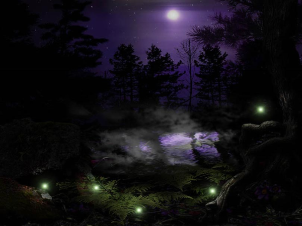

Притаившийся в камышах
Там, где ты бродишь среди камышей
Темная ночь не совсем уж темна
Тысячи сказок за тысячи лет
Дремлющая в звездах, шепчет нам луна...
(Песня ведьмы Зьи Зеленой)

- Осторожно, здесь коряга... так. А сейчас сверху будут свисать водоросли.
Лев Штенгер имел кошачью реакцию. В последний момент он успел отдернуть Грегора, избавив от неминуемого столкновения с зелеными шнурами, которые висели, словно петли виселицы
- Да уж, жутковато тут у вас...
- Все же не мелодрамму снимаем.
- Судя по декорациям - триллер или ужастик, верно?
- Горячо. Скоро вы все узнаете. Как бы там ни было - всем нам очень приятно, что вы согласились посетить нашу скромную студию. Осторожнее, сгнившее дерево.
- Да, признаюсь, мне всегда было интересно поглядеть своими глазами, что происходит "по ту сторону кулис", когда снимают фильм. И ваше предложение посмотреть съемочную площадку пришлось очень кстати. Хотя, не подумал бы, что вы так просто раскрываете свои секреты.
- Не всем. Но для Вас мы всегда готовы сделать исключение.
- Однако же я уже видел некоторые трейлеры в сети. И, признаться, тогда уже себе сказал - спорим, Грегор, эти ребята спокойно отобьют свои миллионы.
- Надеюсь, фильм оправдает ваши ожидания. Осторожней же... Здесь у нас русалка. Топит незадачливых туристов, которые приходят смотреть нашу студию. Шучу.
Лев Штенгер, продюсер фильма, вел своего собеседника по узкой тропинке в дебрях съемочного павильона.
- Единственное чего я не понимаю, - Грегор слегка понизил голос, - что же вы ожидаете от меня? Странно, мы, наверно, уже обговаривали этот момент, но от меня он ускользнул. Ищете спонсора?
- Нет, это ни к чему. Я сам оплачиваю все расходы. Надеюсь не обанкротиться за время съемок. Все, что я от вас хочу - это снять вас в небольшой сцене.
- Меня? - Грегор искренне удивился. Такое удивление плохо подходило к образу этого еще не старого, но уже далеко не молодого, прочно укрепившегося в этой жизни, тучного, облысевшего человека с маленькими хитрыми глазками.
Его собеседник казался помесью капризного богача и проходимца с плутоватым взглядом, скрытым темными очками, кошачьей гибкостью при коренастом телосложении и приторным голосом.
- А что вас так удивляет? Я ведь все понимаю... мой друг, я знаю, что вас слишком недооценивают, что желтая пресса превратила вас в настоящего бандита. Ведь у вас же много завистников, так?
- Таковы люди - сказал Грегор с наигранным вздохом.
- А как же. Тех, кто достигает таких успехов, зовут шарлатанами. Но ведь мы-то знаем, что так поступают только нищие неудачники, которые из-за своей лени и костности ума ничего не достигли. И чтобы как-то оправдать свое существование они начинают рассуждать о духовных ценностях. Разве не так?
- Только и мечтают вцепиться в горло и все отобрать. Ой, что это? Там кто-то есть?
- Ах, не беспокойтесь. Это лишь Бормочущее Болото. Звук издают пузырьки, поднимающиеся со дна. Почти как в аквариуме. Да ступайте же смелее. Это же лишь декорации. У нас еще никто здесь не тонул.
- А выглядит натурально...
- Еще бы. У нас такие мастера стараются... Эти болота были сделаны по рассказам очевидцев - тех сумасшедших, с которыми мы общались.
- Очевидцев?
- Ну да. Контрабандисты, всякий сброд, сложные подростки... Я собираю информацию из разных источников. Нет, я даже и не думал читать эти идиотские выкладки желтой прессы. А как же еще быть бедному продюсеру? Не могу же я просто сидеть сложа руки и наблюдать как на мои деньги снимается черти что.
- Это верно. А насчет этих самых очевидцев - обещаю вам. Если только меня изберут, то с этими несанкционированными вылазками будет покончено навсегда!
- Вас изберут, нисколько не сомневаюсь. У вас прекрасная репутация. Ученый, доктор наук - именно вы стояли у истоков добычи шаи хиша, были лучшим другом Спендера - первооткрывателя этого ценнейшего подарка природы. Когда со Спендером произошел несчастный случай, вы по праву заняли его место и взвалили на себя тяжелую ношу - руководство компанией. Всего добились сами, без чьей-либо помощи - именно таким как вы и должен быть мэр.
Грегор усмехнулся в темноте как сытый кот, греющийся на солнце
- Я искал человека, которому хоть как-то можно доверять в воссоздании прошлого и который не будет его переиначивать в своих интересах. От вас я хочу лишь короткий эпизод и несколько фраз о развитии вашей компании и добыче шаи хиша. Кстати, думаю, для вас тоже было бы интересно появиться на экране, это же реклама. Скоро выборы, ведь так? А молодежь сейчас мало интересуется политикой... возможно, увидев вас на экране, они с большей готовностью отдадут за Вас свой голос. Ведь это уже не первый случай в истории, когда выбирают артистов.
- А что... я не думал выступить в качестве артиста.
- И никто вас не сможет обвинить в злоупотреблении временем, отведенным для предвыборных кампаний. Ведь фильм же формально не имеет никакого отношения к агитации
- Звучит хорошо, - скромно заметил Грегор, в то время, как они входили в искусственные джунгли
Грегор вздрогнул. Казалось, что джунгли притаились в какой-то странной полудреме, ожидая свою жертву. Словно спящие чудовища, свисали декорации плотоядных растений и весь этот органично сплетенный мир был готов проснуться, как по команде, стоило лишь воткнуть вилку в разетку. Словно пес на цепи, он ждал команды, чтобы сорваться и торжествовать, охотять, царапая, жаля, наслаждаясь...
- Я поднял материалы двадцатилетней давности, - продолжил Штенгер, - Эти нечистые на руку репортеры даже намекали, что вы были причастны к смерти Спендера. Вам не было обидно?
- А вы стали бы обижаться на дураков и проходимцев? Или крикунов, которым необходимо устроить скандал вокруг известной персоны, чтобы заработать на репортаже? Они же очернят даже самого Бога.
- И обелят Дьявола. Правда ваша.
Они продолжали идти по джунглям. На Грегора вылупилась гиганстская жаба с монеткой в зубах.
- Потрясающе. Вот это декорации! Если бы я встретил эту жабу в темном переулке, признаюсь, я бы испугался.
- Надеюсь, наш фильм предоставит Вам такой шанс - немного испугаться. Хотя вы человек с крепкими нервами. И умеете скрывать свои чувства и мысли. Это уж я сразу понял. Если вы примете наше предложение поучаствовать в сцене - вы увидите своими глазами, как работают эти монстры.
- К сожалению, из меня очень плохой актер.
- В этом я сильно сомневаюсь...
Грегор не почувствовал колкой интонации. Он был слишком поглощен собой и тем, какое впечатление он производит. Он продолжал играть хорошо изученную за эти годы роль. Если бы в этот момент он немного оторвался бы от собственной персоны и обратил бы внимание на интонацию его спутника, все могло бы повернуться иначе.
- Вы сыграете самого себя.
- Значит, фильм будет отчасти правдивым, так?
- Конечно.
Штенгер улыбнулся своей сладкой улыбкой
- А сейчас, я покажу вам еще одно сокровище наших джунглей. Это ловушка. Не настолько зрелищная, зато надежная. Да не оборачивайтесь вы так, сейчас все увидите. Жертва и глазом не успевает моргнуть, все происходит настолько быстро. Кто-то за кулисами нажимает на красную кнопку - и.. ах! Подо мхом открывается отверстие и несчастная жертва падает на мелкие шипы, - Штенгер театрально взмахнул рукой, - Они не причиняют вреда, но в них содержится усыпляющий яд. Через шесть секунд жертва теряет сознание и умолкает. Жалостное зрелище, поверьте. Но если снимать замедленной съемной - получается эффектно.
- Было бы интересно поглядеть. И кто же, согласно сценарию, будет жертвой?
- Вы, Грегор
Штенгер сказал это без тени усмешки и нажал красную кнопку, которая пряталась за одной из веток. Ни один мускул на его лице не дрогнул. Недолго пришлось созерцать, как Грегор пронзительно крича провалился в раскрывающуюся пасть, которая проснулась после долгого сна, голодная, наполненная желанием охотиться и наслаждаться добычей.
Все так же невозмутимо под проклятия и угрозы Штенгер досчитал до шести. Крики стихли
Джунгли снова превратились в спящие декорации.
Штенгер искренне огорчился вспомнив, что его кофе экспрессо уже остыл. Он был настоящим ценителем кофе.
* * *
- Черт возьми, они у нас на хвосте! - воскликнул Бен
- Уйдем! Предбанник уже близко. Нам бы только немного продержаться, - ответил Чак и резко свернул, уклоняясь от обстрела.
Патрульная машина настигала контрабандистов. Хаббака маневрировала как могла, но патруль неумолимо нагонял ее. Один выстрел достиг цели. Чака и Бена резко встряхнуло, хаббака закрутилась в воздухе
- Бен, держись, уже близко! Прорвемся.
Впереди виднелись красно-фиолетовые гигантские папоротники. Туда патрульные точно не сунутся. Только бы добраться до них
Из рупора донеслось
- Сдавайтесь! Остановите транспортное средство
- Как бы не так! - рявкнул Чак и нажал на газ
Внезапно патрульные отстали. Они покружили вокруг и повернули назад.
- Что это они так просто нас оставили? Задумали какую-то каверзу? - спросил Бен
- Нет, просто мы уже приблизились к "Черному пятну" и у них начала отказывать аппаратура. Кстати, и у нас тоже сейчас хаббака начнет дурковать, так что садимся. Они никогда не заходят в "предбанник"
Некоторые индикаторы хаббаки погасли. Он быстро посадил летательный аппарат, пока тот не оказал совсем
- Почему эти места называют "черными пятнами"? Сколько раз бываю и все забываю спросить, - сказал Бен
- Потому что на радарах они не определяются. И в них отказывает вся аппаратура. Говорят, здесь очень сильное электромагнитное поле или что-то в этом духе. Если вернемся, спросишь у наших умников. Давай-ка лучше посмотрим, ничего они нам не повредили. Все же попали они основательно.
Чак понимал, что если хаббака не сможет взлететь, они обречены на верную смерть. Пешком из "Зарослей" выбраться не удастся.
- Вроде ничего, - откликнулся Бен. Он был механником, - хотя нет.. корзина заднего отсека повреждена.
- Это мы еще хорошо отделались! - воскликнул Чак
- Точно
Чак спрыгнул на землю. Под его высокими сапогами хлюпало болото
- Давай, слезай, - сказал он Бену, - эльдорадо ждет нас
- Таки эльдорадо?
- Гремучник бы не стал попусту болтать. Он говорит, где-то здесь есть целая россыпь шаи хиша.
- И где она, россыпь эта? Найти хотя бы бусины две-три - уже не зря потратим время
- Он сказал, надо идти туда, куда стекаются светляки. Я тебе точно говорю - сегодня мы разбогатеем! - сказал Чак
- А стекаются они, как я вижу, в болота... - проговорил Бен
- Туда-то нам и надо. Пошли. Чего испугался? Болот никогда не видел?
Уже стемнело. Светляки летели над болотами в сторону гигантских папоротникообразных
- Раз он такой умный, Гремучник твой, чего же он сам не забрал своё эльдорадо?
- Говорит, там так много - в одиночку не увести
- Выдумщик!
Чак и Бен брели по болотам. Кто-то в свое время поставил на болотах табличку «опасно для жизни» (хотя зачем? В Зарослях все опасно), которая утонула. Всплыла лишь ее часть со словом «жизни», и вокруг нее блестели несколько пар чьих-то выпученных глаз.
- Черт возьми, я помню это место! - вдруг воскликнул Бен, - но в тот раз, клянусь! Здесь все было по-другому
- Не мудрено. В Зарослях тропы постоянно меняют направление. Ты же это знаешь.
- Никак не могу к этому привыкнуть.
Красноватое свечение кончиков огромных папоротников освещало августовскую ночь, к нему добавлялся золотистый блеск огоньков, то и дело мелькающих среди деревьев. Из кустов таращились мириады светящихся глаз. Блуждающие ягоды с тонкими вопросообразными стеблями провожали из немигающими взглядами.
- Долго нам еще идти? - спросил Бен
- А черт его знает
- Понятно. Говорят, Заросли возникли после Катастрофы. Когда-то это были самые обычные растения, после Катастрофы они мутировали...
- Моя бабушка еще помнит времена до Катастрофы, когда светило солнце и не было этих проклятых туманов и кислотных дождей, - мечтательно сказал Чак
- Я тоже наслушался в детстве этих сказок. И все же, не нравится мне здесь. Вот скажи мне - откуда здесь возьмется шаи хиш? Знаешь, чего я думаю? Это похоже на ловушку
- С какой стати?
Внезапно ногу Бена обвил ус огромного вьюнка. Бен вскрикнул. Красный пряный цветок начал раскрываться на глазах. Чак подскочил к другу, выхватил нож и перерезал стебель. Цветок чихнул на них пыльцой и спрятался.
- Вот чертовщина! - воскликнул Бен, - мы точно попали в какую-то ловушку
- Прекрати ныть! - ответил Чак
- Ты сам говорил, что это просто потрясающее место. А здесь сплошные болота.
- Я что тебе, хет возьми, обещал увеселительную прогулку? Никогда не слышал, что в Зарослях каждый пень, каждая коряга опасна?
В душе Чака тоже зародились сомнения. Не обманул ли его Гремучник? Но зачем? Может, он просто ошибся?
- Сейчас мы идем через хетовы болота. Одно из самых пренеприятных мест. Ты хоть знаешь, что делает Хет с теми, кто здесь засыпает? - насмешливо сказал Чак. Ему хотелось немного поиздеваться над Беном.
- Этих сказок про Хета я уже наслушался в детстве.. пренеприятный тип, шестилапая гадина, которая то забирается ночью дома и крадет тех, кто не спит, то еще чего. Может, хватит уже этого вранья? - ответил Бен. Он попытался придать своему голосу как можно более равнодушный оттенок, но предательские интонации подвели его.
- Ты и вправду думаешь, что Хет - это вранье? Хорошо, оставайся и проверь. Только потом, жаль, никому не расскажешь, чего ты видел. Эта гадина живет здесь в болотах и периодически ворует таких как ты.
- Кто-нибудь хоть его видел?
- Не самый умный вопрос. Они уже об этом не расскажут
- Зато все прекрасно знают кто он и чем он занимается!
Бен споткнулся и упал. Чак помог ему встать.
- А что потом? - спросил Бен словно Чак рассказывал ему страшилку
- А потом суп с котом.
Они прошли еще немного. Чак уже совсем было отчаялся, как Бен вскрикнул
- Смотри! Это же... черт возьми!
Вдалеке среди мха лежала россыпь шаи хиша, да такая россыпь, какую они в жизни не видывали. Огромные и маленькие черные шары, наполненные таинственной удивительной жидкостью
- Ура, - завопил Бен и оба кинулись навстречу своему счастью
- Не зря я взял мешки! - воскликнул Чак, - а ты говорил - две-три. Не мелочись, приятель!
Глаза приятелей засверкали, оба кинулись собирать заветные шары.
Через полчаса они присели отдохнуть. По лбу катился пот. Рядом с ними лежали доверху набитые два десятикилограммовых мешка.
- Мы же с тобой теперь миллионеры! - воскликнул Чак
- Ладно, потащили их назад, пока действительно не вылез никакой Хет и не отобрал у нас нашу добычу, - ответил Бен
Тащить мешки по болотам было делом не легким. Пот градом катился по лбу, но у них словно открылось второе дыхание
- Построю себе загородный дворец и наконец-то открою свое дело, - сказал Бен
- А я поеду отдыхать в теплые страны! - ответил Чак
Таким образом они добрались до хаббаки
- Одного я не понимаю, - проговорил Бен, - они там лежали, словно их кто-то специально рассыпал. Так же не бывает. А мы пришли, забрали.. Все как-то слишком гладко.
- Ты давай-ка не накаркай чего, - ответил Чак
Они забрались в хаббаку. Чак завел мотор
Хаббака взревела, фыркнула, подпрыгнула на месте и заглохла.
- Вот черт! - воскликнул Чак
- Чего случилось? - спросил Бен
- Разберись-ка, что не так. Мы не можем взлететь.
Некоторое время Бен возился с хаббакой. Полностью залез под нее с ящиком инструментов, только ноги торчали из-под корпуса. Когда он вылез, то казался чернее черной тучи
- Ну что там? - спросил Чак
- Плохи дела... - проговорил Бен
- Ну давай, не томи!
- Помнишь, я говорил, в карзину попали? В общем, там такая фигня, задний отсек надо отсоединять. С ним мы не взлетим.
- Это значит... - сказал Чак и похолодел
- Именно так! Вдвоем-то мы сможем отсюда убраться, а вот мешки... - проговорил Бен
- Но мы не можем их бросить! - воскликнул Чак, - давай запихаем их в кабину
- Ты не понимаешь... грузоподъемность изменилась. Нас-то с тобой она кое-как выдержит, а вот мешки...
- Надо найти какой-то выход! - воскликнул Чак, - давай за ними потом вернемся? сейчас их спрячем
- Ты же знаешь, сам же говорил - тропы в Зарослях меняют направление. Да и уверен я - их найдут без нас. Патрульные видели, куда мы направляемся. Кто-нибудь из них обязательно сольет наш маршрут Коту или кому похуже.
- Это точно, - ответил Чак
- Так что же нам делать... - протянул Бен
- Что-нибудь придумаем!
- Здесь уже ничего не придумаешь.
Некоторое время они сидели молча
- И как же теперь поступить? - пробормотал Бен
- Ты о чём? - спросил Чак
Некоторое время Бен сидел в нерешительности. Затем дернулся, словно что-то вспомнил
- Слушай, Чак. Я там на болотах инструменты оставил. Сбегай, а? А я пока здесь чего-нибудь еще подкручу. Вдруг да поможет. Попробуем затолкать мешки в кабину, а я откручу задний щиток - он зараза тяжелый. Может, без него и взлетим. Но мне для этого инструмент один нужен, а я дурак, как увидел шаи хиш, рюкзак свой оставил
- Я мигом! - воскликнул Чак и бросился к болотам.
Он почувствовал, как голос Бена предательски дрогнул, но не желал предавать этому значения. Он так же отогнал от себя мысль о том, что задний щиток весил от силы пять кило. Ему так хотелось верить в то, что у них все получится.
На полпути Чак услышал шум мотора. "Это Бен чего-то проверяет, " - подумал он, но все же в душе поселилась тревога
Где-то там хаббака несколько раз фыркнула и.. взлетела. Чак услышал затихающий вдали шум мотора
- Бен! - закричал он.
Чак все еще не верил, что его товарищ, которому он доверял, был способен оставить его здесь на верную смерть ради наживы. Может, он всего лишь проверят двигатель. Сделает кружок и вернется?
Чак напряженно прислушивался. Шум двигателя смолк, все погрузилось в тишиту, которую нарушал лишь стрекот цикад.
"Отсюда никто пешком не возвращается," - подумал Чак, - "Позади болота, без хаббаки их не преодолеть. Впереди... Впереди Черное Пятно, неизвестность. Там его сожрет какая-нибудь из местных тварей"
Чак в отчаянии сел на мягкий мох и заскулил. Никогда раньше он не чувствовал себя таким одиноким, затерянным во враждебном мире. Чертовски хотелось жить!
Через некоторое время он встал и побрел куда глаза глядят.
* * *
"...Все так же невозмутимо под проклятия и угрозы Штенгер досчитал до шести. Крики стихли
Джунгли снова превратились в спящие декорации."
Сценарист поставил точку и откинулся на спинку стула. Сегодня он хорошо поработал, продюсер будет доволен. Только что он закончил эпизод похищения Грегора Мойрича. Будет ли продюсер доволен? Наш дорогой режиссер наверняка бы сказал, что недостаточно экшна. Ну да и бог с ним.
"Табличка с надписью 'Danger' утонула в болоте, всплыла лишь часть ее. Получилось 'Anger'. Как бы это перевести?" - размышлял сценарист
Сценарист вылез из своего удобного кресла и потянулся. Он был доволен собой.
"Надо пойти перекусить," - подумал он и спустился на кухню.
"Надеюсь, Штенгер сегодня привезет продукты? Он же должен был приехать еще вчера. Где его носит? Я уже несколько дней здесь сижу один взаперти"
Сценарист находился в шикарном загородном особняке, где кроме него никого не было. Вокруг на километры - лес. Красота. В особняке было все необходимое, кроме средств связи с внешним миром. Таково было условие продюсера - Штенгера.
"Одобрит ли Штенгер мой новый опус?"
Сценарист что-то нашарил в холодильнике и перекусил, не включая света. Черная икра была хороша! Затем он поднялся в гостиную налил себе виски и закурил сигару. Развалился на диване и погрузился в воспоминания.
Ему вспомнился тот день, когда он первый раз держал в руках незаконченный сценарий. Этот сценарий ему предстояло доработать. Предыдущего сценариста Штенгер уволил, поскольку тот нарушил какое-то из его условий. Интересно, какое?
Некоторое время они работали вместе с режиссером, обсуждая все подробности. Затем Штенгер пересмотрел некоторые моменты и увез сценариста в загородный особняк, где и попросил его остаться на то время, пока он работает над сценарием за очень солидный гонорар.
- Но почему я не должен контактировать со внешним миром? - спросил его тогда сценарист
- Видите ли, амиго, я не желаю, чтобы на ход сценария не влияли текущие факторы. Мне надоело, что в вашу работу вмешивается наш дорогой режиссер и, простите за откровенность, ваша личная жизнь, которая идет коту под хвост. Вы очень чувствительный человек. Ваше эмоциональное состояние зависит от событий, которые происходят вокруг. Стоит вам прочесть новости - и вы уже начинаете мыслить иначе, вас тянет на баррикады. Меня это решительно не устраивает!
- И поэтому я должен безвылазно сидеть в этом доме в полном одиночестве?
- Ничего. Я оставляю вас с книгами. Вон там расположились немецкие классические философы, чуть выше - Макиавелли, а на той полке - горячие экзотические латиноамериканцы. Так что вам будет, чем занять ваш мозг. Я желаю, чтобы получился фильм, не привязанный к эпохе. Я буду привозить вам еду. Запомните лишь одно: ни в коем случае нельзя менять события из сценария, написанного до вас.
- Я хотел лишь внести кое-какие правки в биографию Казимира Хоннера, владельца казино.
- Ни за что! Считайте, что это - мой каприз.
Размышления сценариста прервал Штенгер, возникший на пороге.
- Я не слышал как вы пришли, - воскликнул сценарист и тут же потушил сигару
- Отдыхайте, мой друг. Я вижу, сегодня вы хорошо поработали. Я привез вам еды - все то, что вы просили. Могу я поглядеть на плоды вашей работы за эти дни
- Конечно.
Сценарист принес из своего кабинета пачку листов.
Штенгер за это время успел разжечь камин. Расположившись у камина, он начал листать страницу за страницей. Глаза его недовольно прищурились
- Знаете что, амиго, - начал он после некоторой паузы
Сценарист поглядел на продюсера. Ну что еще ему могло не понравиться! Опять переделывать?
- Сцена с контрабандистами вышла неплохо. Но можно бы и поживей. Вяло, мой друг. Вяло. Так, что у нас тут.. Хет - фольклорный персонаж. А что - пусть остается Хет этот. Но это все мелочи. А сейчас по существу
- Слушаю.
- Мне категорически не нравится идея превращения главного персонажа в серийного убийцу. Давайте смягчим страшные сцены. Все-таки наш протагонист - жертва бесчестных людей. Он не желает мести как Монте-Кристо. Он хочет восстановить справедливость и открыть правду людям.
- Ей богу, я вас не понимаю. То слишком вяло, то давайте смягчим. Нет, так не пойдет. Прав наш режиссер: сейчас зрителю подавай страшные сцены, от намеков и полунамеков их потянет в сон. Так что как хотите - но маньяк-убийца у нас все-таки будет!
* * *
Чак брел по болотам. Куда не глянь - болотам не было конца. Все знают, что Бормочущие Болота - гиблое место, забредешь и не выберешься. А уж если они только начались - берегись! Сворачивай, уходи, пока еще не поздно.
Вот только свернуть было некуда. Как же его угораздило влипнуть в эту историю! И зачем он только связался с этим Гремучником, будь он проклят! А Бен.. он же считал его своим другом. Если он вдруг выберется отсюда - Бен за все ответит сполна. А все началось в тот проклятый день...
Ночь. Дым сигарет. Внезапные смешки, ищущие чего-то взгляды, условные знаки контрабандистов. Барменша Хида натирает стаканы до блеска. Такой он - трактир "Болотная орхидея" - последнее пристанище контрабандиста. Воистину прекрасное место!
Чак сидел за одним из столиков, тусклый свет настольной лампы казался чем-то почти осязаемым, от бахромы падали странные шевелящиеся тени.
- Можно присесть за ваш столик? - спросил голос из темноты.
Из темноты перед Чаком появился темный силуэт и сел не дожидаясь ответа. Это был Гремучник. Никто не знал, кто же был Гремучник на самом деле, ходили только слухи. Он не был похож ни на контрабандиста, ни на "покупателя". Он никогда не покупал шаи хиш. Никто никогда не знал, откуда он приходит, куда уходит и где его носит.
В то время Чак себе уже дал слово никогда больше не возвращаться в Заросли и в конце-концов как-то привести в порядок свою жизнь. Уже пришло время как-то определяться и искать свое место. Но для этого надо было оставить Заросли, а в этом и был главный подвох. Все верят, что могут просто взять однажды и никогда больше туда не возвращаться. Чего им стоит? Не придется лазить через темные ходы, торговать с контрабандистами, спасаться при необходимости от полиции. Вот только почему-то последний раз растягивается на десять, сто, тысячу раз... и конец всегда один... нет, Чак искал другого в жизни. Он не хотел всю свою жизнь проскитаться среди мхов и болот. И твердо верил, что он был одним из тех счастливчиков, кому все-таки удалось поставить точку. И сейчас он это докажет... выслушает Гремучника, но уже ничего, никакая сила, не сможет его привести в Заросли.. чего уж там скрывать? конечно же, ему было интересно, что же для него такое задумал этот Гремучник... все же эта таинственная атмосфера вокруг этого незвестного человека, подогреваемая сплетнями, не могла оставить его равнодушным.
- Кофе с корицей? - спросил Гремучник таким тоном, будто был его старым приятелем
- Нет.. я не задержусь надолго
- Да я и не задержу тебя надолго. А зачем? Ты же все равно уже решил поставить точку, ведь так?
- Да, именно так. - сказал Чак без тени сомнения в голосе.
- А ты думал, что я пришел предложить тебе очередную авантюру?
Они были знакомы без трех минут, но за вежливыми интонациями Гремучника чувствовалась абсолютная непринужденность, но еще не доходящая до развязанности.
- Если честно, то именно так и я и подумал, - ответил Чак и несмотря на то, что Гремучник был в темных очках, ему показалось, что они встретились взглядами.
- Ну зачем же? Тебя есть за что уважать.. ты - один из немногих, кто все же решился и вышел из игры.
- Так тогда какой же смысл в этом разговоре? Стоит ли терять свое время? - спросил Чак, стараясь избегать обращения на "ты" и "вы". Тыкать Гремучнику явно не хотелось, поскольку Чак чувствовал, что между ними была словно пропасть, несмотря на легкий и даже насмешливый тон Гремучника... при этом перейти на вы означало сознательно отгородиться. Гремучник перебирал в руках четки издающие звук, чем-то напоминающий гремучую змею (возможно, отсюда и было его прозвище) и они то появлялись, то исчезали в его руках фокусника, то обплетали пальцы словно змеи. Эта игра сопровождалась ритмичным шелестом и постукиванием в котором было что-то гипнотическое.
- Я не теряю время, а с удовольствием провожу его в такой компании: кофе с корицей и престранный молодой человек. Ну что ж.. говоря более конкретно, я пришел за советом.
- За советом... Ко мне? - удивился Чак, явно не ожидая такого поворота событий
Гремучник усмехнулся.
- Ты ведь все равно ничего не теряешь, если подскажешь мне маленькую мелочь? Тебя ведь уже не огорчит, что вместо тебя прилично заработает кто-то другой?
- Абсолютно. Но почему же нужен именно МОЙ совет?
- А ты еще не догадался? Потому что ты - один из немногих, кто не проявит личную заинтересованность. Потому что ты стойкий. Разве кто-то еще смог бы так просто выпустить из рук такие деньги?
- Тогда почему не Малазийец? Он тоже вроде завязал с этим
- Нет... - Гремучник покачал головой.. - Малазийец бы как стал рассуждать. "Это будет САМЫЙ последний раз. А эти деньги будут удачным заделом для моей новой жизни. Ведь не могу же я начать что-то новое, не имея ни одного зеленого за душой?". Это они только поначалу герои - говорят, начну с нищеты и поднимусь. А на деле... они ведь привыкли к легким деньгам...
- Ничего себе легким! Ты рискуешь жизнью, добывая этот несчастных шаи хиш...
- А ты думаешь, все остальное так уж легко? Ведь будущая работа будет тяжелой и монотонной, поскольку все надо будет делать СНАЧАЛА, нужен хоть какой-то задел... но, что касается тебя, ты молод и ты справишься. Я уверен, ты готов будешь посвятить несколько лет нудной деятельности подмастерья... оставить в прошлом яркие моменты, ожидание чего-то удивительного за каждым поворотом.... Но ведь оно же того стоит?
Чак кивнул в легкой нерешительности.
- А знаешь, почему они все же возвращаются в "Заросли"? Представь... Ненавидя себя за то, что опять встаешь до рассвета, одеваешься и отправляешь все туда же... зная, что в полдень обед, что в семь ты будешь возвращаться.. видя как такие как ты веселятся на празднике жизни... почувствуешь, как жизнь и молодость проходят мимо, а ты беден и на тебя не смотрят эти девчонки, что блестящие витрины - не для тебя, что весь этот город - лишь один рекламный щит, который только лишь заставляет тебя облизываться... а цены все больше напоминают номера телефонов... Они чувствуют себя выкинутыми, потерянными в этом равнодушном мире. И хочется снова сбежать туда, где ты не будешь выкинутым на обочину, где ты действительно чего-то стоишь. А куда же? Разве ответ не ясен?
Чак наблюдал, как четки появляются и исчезают между пальцами этого темного человека.
- Просто все они такие, понимаешь? Те кто решил поставить точку. А на деле они думают сбежать. Вот только незадача: они знают, откуда они "сбегут", но вот никогда не задумываются, куда же они "прибегут". А как выясняется - так они и возвращаются в "Заросли" под разными предлогами... Ну так вот. Если ты знаешь кого-нибудь, кто достаточно смел и стоек, это предложение - как раз для. А я уж не поскуплюсь, щедро заплачу. Хотя, казалось бы, за такую мелочь... но все же.
- А что же за дело? - спросил Чак, не скрывая любопытство
- Дело - совсем пустяк.. но тебе не скажу - знает один - знают все. Но за совет подходящей кандидатуры - тоже отблагодарю.
Чак задумался... а чем же, в сущности, займется он в дальнейшем? Мелкий бизнес? Было бы у него хоть что-то за душой, он бы, глядишь, выучился...
- Скажи, какое дело? А я найду человека.
- Не пойдет. Скажу только лично тому, кто возьмется за дело. В этом есть небольшой секрет.. Даже те, кто слишком хорошо знает Заросли, не подозревают об этом месте. И по некоторым причинам я не хочу, чтобы положение дел изменилось. Сразу туда потянет всех кому не лень... и там уже ничего не останется. Вот почему и плачу щедро.. Это - новое эльдорадо.
Чак чувствовал, словно упускает какой-то шанс.
"Скажу ему, что пойду Я!!! Нет... так не пойдет.. А почему же не пойдет? Так что же... это значит, я буду как все... так и не смогу поставить точку... Но ведь это будет ДЛЯ того, чтобы поставить в конец точку. Ведь мне же нужен задел... но как ему сказать... А если посмеется?"
Чак поднял голову, желая разглядеть глаза Гремучника за черными очками, в его взгляде был вызов.
- А что если Я хочу пойти? - спросил он, набравшись смелости.
Гремучник иронично ухмыльнулся. Глубокая морщина на лбу извилась змеей. Это был человек неопределенного возраста, еще не так стар, но уже и не так молод. Среди черных волнистых волос пробивался один клок седых, только возникших не от возраста, а от какого-то давнешнего потрясения.
- Ну вот, мой друг, и как же это называется? Получается, ты меня обманул насчет своих планов расстаться с Зарослями навсегда. Где же эта стойкость?
- Мне нужны деньги, чтобы начать новую жизнь
- А о чем же ты думал раньше? О показательном жесте?
- Я правда хочу поставить точку. Но хет возьми, не хочу начинать с нищеты. Хочу сэкономить время. Да, я оказался такой же, как они
- Извини, но ты мне не подойдешь.. - Гремучник развел руками
- Это почему же?
- Во-первых... потому что я человек, которому не совсем чужда примитивная этика... ты принял решение и я не хочу тебя сбивать с "праведного пути".. во-вторых...
- Что во-вторых? Может, с этого и надо начинать?
- Понимаешь... дело легкое, но немного рискованное. Это дело для опытного человека... я знаю, ты несмотря на свой юный возраст уже много чего там повидал... но и все же.
- Думаете, у меня не получится? Хаха! А вам-то что за дело до моей жизни?
- Поверь, я желаю как лучше.
- Кому? Вам? Уж точно, что не мне. А вот увидите - не подведу
Гремучник усмехнулся
- Там нужен человек с крепкими нервами. Придется идти по Бормочущим Болотам мимо самого логова Хета... ты там останешься один на один со всякими тварями.. сильных они не трогают.. но лишь они почувствуют твою слабину и признаки трусости...
- Вы хотите сказать - я трус?
- Ты меня не так понял. Я просто описываю тебе реальное положение дел.
Чак уже разозлился не на шутку. Последняя фраза его уж и впрямь зацепила за живое. Трусом его еще не называли... да еще и в такой форме
- Так вот что. Либо вы мне говорите, здесь и сейчас, куда идти и чего... либо.. я говорю приятелям, что Вам известно какое-то эльдорадо.. и тогда.. тогда
- Что тогда, юный шантажист? , - Гремучник широко и приторно улыбнулся, словно кот, греющийся на солнце, - считай, что мы квиты. Вот карта.
Гремучник вынул из кармана свернутый в четверо лист
- Но ведь для Зарослей не существует карт... в "черных пятнах" ведь тропы постоянно меняют свое направление..
- Ты прав, поэтому на карте лишь обозначен путь до "предбанника". А дальше надо будет следовать в том направлении, куда стекаются светляки.
- И что там будет?
- Такая россыпь шаи хиша, какой ты в жизни не видывал. В руках ты все не унесешь. Придется взять хаббаку - насчет этого я уже позаботился. Твою добычу мы поделим пополам. Ведь если бы не я, ты бы никогда не узнал об этом месте. Никого с собой не бери, иди один.
- Могу я взять Бена? Он мой лучший друг. Я ему доверяю, как самому себе.
- Ты и впрямь хочешь лишиться друга?
- Мы всегда рискуем вместе. И если уж что-то и случится, то с нами обоими.
- Ты меня не понял. А, впрочем, как знаешь...
- Я согласен, - выдохнул Чак
- Отлично. Жду твоего скорого возвращения.
С этими словами Гремучник встал и уже развернулся, чтобы уходить, оставив недопитым кофе с корицей и не попрощавщись. Чак машинально приоткрыл сложенный листок с картой, где красовалась витиеватая надпись "Договор между Гремучником и Чаком"... Он почувствовал, словно его облили холодной водой... словно..
- Гремучник! - крикнул Чак вслед ему
Затем он, растолкав толпу, подбежал к уходящему черному человеку
- Что это значит? - крикнул он
- Сделку.. что же еще?
Вдруг Гремучник неcдержанно рассмеялся, затем вдруг замолчал, сладко улыбаясь. Его улыбка больше напоминала оскал.
- Вы...вы.. - Чак чувствовал, что попал в абсолютный просак..- вы мерзавец.. вы.. дьявол!
- Я не дьявол, я просто бизнесмен.
* * *
Лучше скажите мне, - Сценарист решил переменить тему, - зачем вы взялись за этот фильм?
- А зачем вообще снимают фильмы? - ответил продюсер вопросом на вопрос
- Ради денег и славы, я полагаю
- Денег у меня и так хватает, слава мне ни к чему.
- Тогда зачем же? Какая же причина?
- Дайте мне подумать.... Наверно, потому, что мне стало скучно.
- Но этой причины недостаточно
- Дело в том, что вы хотите услышать только одну причину, и чтобы она была коротко изложена, как лемма. Или как рекламный заголовок. Наверно, если бы была только одна причина, я бы никогда за это не взялся. Их несколько.
- И какие же?
- Хочу создать мой собственный мир. В этом мире у меня уже все есть и он мне, честно говоря, смертельно надоел. Я хочу поиграть в Бога, который может казнить и миловать своих персонажей. Мы, богачи, иногда достаточно капризные и циничные.
- Уж в этом я вам верю.
* * *
- Итак, - продолжил ведущий, - в нашей передаче пойдет речь об аномальных областях, на жаргоне контрабандистов называемых Зарослями. Но для начала несколько общих слов. Мистер Мойрич, считаете ли вы, что нам удалось хоть в какой-то мере преодолеть последствия Катастрофы и какими будут прогнозы?
- Насчет преодолеть - звучит очень оптимистично, - начал Грегор, делая глоток кофе. - Что там говорить? Человечество не было готово ни к Катастрофе, ни, тем более, к ее последствиям. Некоторые зоны останутся зараженными на столетия, это уже факт. Но мы делаем что можем - в крупных городах установлены фильтры для очистки воды кислотных дождей, постоянно снимаются пробы содержания соединений азота в смоге. Созданы станции по выращиванию водоросли хлореллы для очистки воздуха. Жителям затопленных островов и государств уже оказана материальная помощь. Подводя итоги, могу сказать, что мы еще хорошо "отделались". Всему живому земли грозило полное уничтожение. Насчет прогнозов - по самым оптимистичным - ситуация вернется к состоянию до Катастрофы лишь через 150 лет, по самым писсимистичным... не вернется никогда.
- Вы могли бы нам, как специалист и бывший ученый, рассказать о том, чем же являются "Заросли". Многие верят, что это ответ природы и всего живого человечеству. Слишком долго она нас терпела, как мы ее уничтожали, загаживали, наивно считали ее своей мастерской. Но наконец ее терпению подошел конец и она решила объявить нам войну. Вы не разделяете эту точку зрения?
- Ничуть, - Грегор сделал еще глоток кофе, - точнее, я не разделяю эту идею о восстании растительного и животного мира. Конечно, катаклизм привел к мутациям. Привычные и известные веками растения стали опасны, животные изменили свое поведение и стали нападать на людей. Но говорить о неком природном "заговоре" по меньшей мере наивно и нелепо. Что же касается так называемых "Зарослей"... после катастрофы человечество было слишком занято своими проблемами и не заметило, как появились эти образования. Они вызывают столько сплетен и догадок только в меру того, что почти не изучены
- Иногда их сравнивают с бермудским треугольником. В них постоянно меняется ланшафт, даже дороги меняют направление.
- Я не берусь отрицать это, хотя замечу: Заросли не могут быть изучены современной техникой в силу того, что в определенных зонах, называемых "Черными пятнами", генерируется сильное поле неизвестной природы, которое выводит из строя всю аппаратуру. Мы не можем заснять их с вертолета, над ними стоят туманы. Так что мы можем говорить лишь о наблюдениях конкретных людей. К тому же, поскольку атмосфера в "Зарослях" не вполне здоровая, имеют место многочисленные галлюцинации.
- В Зарослях были замечены люди с достаточно странным внешним видом и поведением. По всему похоже, что это мутанты, которые каким-то выжили на поверхности сразу после Катастрофы или их потомки. Среди них наиболее интересен персонаж, который уже стал почти мифическим. Некто Хет, живущий на болотах
- Минутку, перебью. Вы хоть раз видели этого Хета?
- Я... нет, но были случаи..
- А ваши друзья, родственники?
- Нет, но...
- Вот так и появляются сказки. Открою секрет - Хет- это всего лишь ругательство, выдуманное существо, чтобы пугать детей на ночь. Покажите мне хоть одного свидетеля, а, еще лучше, этого Хета, может я изменю свое мнение?
- Как я понял, вы так же скептически относитесь к заявлениям, что эти мутанты иногда выходят из Зарослей и могут быть опасны нашему обществу
- Мутанты, выходящие по ночам и ворующие детей из колыбелей... отдает какой-то банальной фантастикой. На мой взгляд, стоило бы задуматься не о тех, кто оттуда выходит, а о тех, кто туда заходит. Вот это - уже настоящее бедствие. Пока вы рассуждаете о каких-то таинственных мутантах тысячи бездельников тянутся в Зарослей, чтобы достать там заветный шаи хиш и продать его подороже... которые выдают его как новую Панацею, скрывая, что это - очень сильный яд. И как любой яд - лечит от всех болезней, уж в этом им не откажешь. А отчаявшиеся верят. Поверьте - на данный момент торговля шаи хишем - один из самых выгодных видов деятельности. Лекарство от всего - начиная кашлем и кончая старостью.
- Кто-то считает, что это последний шанс "вылечиться", который дала им природа, - заметил ведущий
- Или отправиться на тот свет. А в то время закулистные торговцы шаи хишем купаются в роскоши. Это - одна большая офера. Да, шаи хиш лечит даже тяжелые болезни.. но в какой-то момент человек привязывается к этому "лекарству", а когда понимает - становится слишком поздно
- Правда ли то, что десять унций шаи хиша равноценны по энергетической ценности баррелю нефти. Или это слишком завышенная оценка?
- С этим всецело согласен. Но, так или иначе, выбирать не приходится. Нефть теперь днем с огнем не сыщешь.
- Ну что же, подводя итоги, мистер Мойрич, так значит вы не считаете, что природа заготовила для нас реальную угрозу?
- Я считаю, что мы прошли тяжелое время, но сейчас уже могу заявить, что мы полностью контролируем ситуацию на всех территориях кроме "Зарослей", но и с ними ведется работа, чтобы они под конец превратились в ничто иное как "легкие планеты" их прямое назначение и места стабильной разработки шаи хиша. Мы застрахованы от непредвиденных ситуаций, природа просто не может заготовить для нас очередную злую шутку, в ближайшем будущем ничего не может про....
Гаснет свет
- Включите свет! Что за (Писк. Сработала замена нецензурного слова)! Да выключите же вы камеры...
Темнота и тишина.
* * *
Болота начали чередоваться с островками, обвитыми шевелящимися корягами. Там и здесь виднелись жабьи грибы с светящимися красными крапинками.
Чак шел, отбиваясь от комаров, пока не дошел до развилки. А там была табличка с направлениями: направо - "Опасно для жизни", прямо - "Просьба не беспокоить. Кусаюсь." и налево. Надпись на ней была почти стерта и в сумраке не читалась. По неким причинам Чак предпочел именно этот путь. Между деревьями то и дело зажигались огромные желтые глаза, которые провожали его немигающими взглядами. Болота кончились и он шел через папоротники, наступая на мягкий мох, который пружинил под ногами.
В какой-то момент Чак почувствовал, что все вокруг как-то затихло. Хищные желтые глаза больше за ним не следили. Идти по пружинящему мху доставляло удовольствие, Чак было принялся насвистывать песенку. Но вскоре затих. Здесь было слишком хорошо и как-то слишком тихо. Как... в ловушке!
Последнее пришло ему в голову слишком поздно, когда мох уже предательски прогнулся под ногами и он куда-то проваливался...
* * *
- О, мой друг! - воскликнул Штенгер, - как же вы до этого додумались? Отличный ход
Сценарист скромно улыбнулся. Они вновь сидели у камина. На дне их бокалов плескалась зеленая жидкость. Штенгер нанизал на проволоку сахар и поднес зажигалку.
- Вы умудрились запихнуть в ваш сценарий нас с вами!
- А почему бы и нет? Разве это не здорово - почувствовать свою причастность к событиям фильма?
- В вашем сценарии сценарист, то есть вы, задумывает убийства, а продюсер, то есть я, - их воплощает. Лихо!
- Я скажу вам больше, мистер Штенгер. Моему сценаристу как и мне нельзя покидать особняк.
- Это еще почему? - глаза Штенгера сузились
- Чтобы случайно не узнать, как сценарий воплощается в жизнь. Это же элементарно!
- Браво! - воскликнул Штенгер, - прекрасный ход!
* * *
Хет, покачивался в гамаке, допивая свой любимый отвар. Как раз в тот момент, когда дремота почти захватила его, он услышал, как кто-то провалился в его ловушку.
- Кого там еще принесло? - недовольно спросил он
- Это я... - растерявшись ответил испуганный голос.
- Так я и думал. А поконкретнее можно?
- Где я?
- Вообще-то у меня дома. А ну-ка иди к огоньку, дай погляжу на тебя.
Из темноты вышел парнишка, Хет по-прежнему оставался в темноте
- Тебя вроде Чаком зовут? Да.. слышал. Вы тут все болота перебаламутили. Ты хоть знаешь, что я делаю с такими как ты? Да уж уверен, знаешь... Сказок-то небось наслушался.
- Кто вы?- крикнул Чак в темноту, отряхивая листья, которые к нему прилипли после падения. Голос его дрожал, игра закончилась.
- Если скажу - не испугаешься?
- Нет, - проговорил Чак
- Что ж, давай знакомиться. Хет.
Чак вздрогнул, оглядываясь по сторонам в поисках выхода.
- А говоришь, не испугаешься... Вообще, дам тебе совет. Когда ты на едине с хищником, кем-то, кого ты считаешь опасным, паниковать - последнее дело. Это еще больше разжигает инстинкт к преследованию. И знаешь, что я с тобой сделаю? - проговорил Хет мечтательно
Чак вжался в стену
- Да не бойся ты так. Иди сюда, угощу чаем с вареньем. Хоть познакомишься, поверишь, что я все-таки существую и что я - не просто ругательство. Я сегодня не злой. Точнее, я бы мог, конечно... - начал Хет все тем же приторным голосом, наблюдая за взлядом Чака. Его явно забавлял этот страх.. - но мне лень. Так что давай обойдемся сегодня без привычного ритуала жертвоприношения, хорошо? Ты так и собираешься стоять? Садись.
Чак послушно сел у огонька. Сердце еще быстро стучало, но мягкий голос из темноты оказывал на него странное воздействие. Он уже не мог не подчиниться. Первоначальный страх проходил
- А кто сегодня бодрым голосом утверждал, что меня не существует, а? Обижаешь... - сказал насмешливо Хет
Затем в темноте послышалось шевеление, Чак весь напрягся, ожидая, что вот-вот из темноты покажется шестилапое чудовище.
Из темноты вышел коренастый человек неопределенного возраста. Единственно, что в нем было странно - поблескивающие желтые глаза. Черные слипшиеся волосы падали на лицо, он зевнул, прикрыв рот рукой. Затем налил Чаку чай
- Ждал увидеть шестилапую гадину, не так ли? - сказал он все с той же усмешкой и хлопнул Чака по плечу
Чак потихоньку успокоился. Знал бы он еще тогда, когда был маленький, какой же на самом деле этот Хет... он бы не позволил столько лет взрослым пугать себя этим странным существом.
- Не отвечай. Знаю, много баек про меня ходит.
- А за что же они вас так боятся? - под конец спросил Чак
Хет смотрел в огонь
- Видишь ли.. Не со всеми я всегда был так добр, как с тобой.
- Это правда, что про вас говорят? - набравшись смелости, спросил Чак.
- Смотря что. Если про то, что я выкрадываю младенцев из колыбелей... я с этим завязал лет триста назад... теперь переключился на более больших... да шучу я. Не пугайся так.
Некоторое время они молчали.
- Ну а теперь расскажи мне, как тебя сюда занесло? На самоубийцу ты вроде не похож
- Да как-как! - махнул рукой Чак, - как и бывает. Один хитрец посулил богатство. Не обманул. Другой - лучший друг, как увидел эту роскошь - предал меня и улетел на моей хаббаке! Бен, мерзавец. Если вдруг я отсюда выберусь, он не жилец. Вернусь и сведу с ним счеты.
- Не спеши, - грустно ответил Хет, - я уверен, он и так получит сполна.
- С чего вы так решили?
- Такие люди как Бен не захотят выполнять договоренности. А другим людям вроде вашего Гремучника такое положение дел вряд ли понравится. Так что... Бен сам себя наказал. Когда вы вернетесь, сводить счеты будет уже не с кем. А сейчас, сделай-ка для меня хорошее дело. А я так и быть тебя отпущу.
- Какое? - удивленно спросил Чак
- Здесь на болотах живет мой старый приятель. Надо ему кое-что отнести. Он, конечно, немного странный, но ты его не пугайся. Как сказал Чеширский Кот - мы все здесь немного сумасшедшие.
- Отнесу
- Вот и чудесно
Хет подсказал Чаку, как выбраться из логова, объяснил дорогу до хижины Жаба, затем погрузился в раздумия. Он хотел бросить вызов. Но не был ли его вызов слишком нелеп?
Вопросы без ответа.
Хет вернулся в гамак и закурил кальян.
* * *
В темноте сценарист раскуривал сигару. В полудреме ему вспоминалась первая встреча со Штенгером.
- Нет, это сразу исключается!- закричал режиссер. - Как хотите, но я это снимать отказываюсь!
Сценарист застыл в недоумении. Он не ожидал такой резкой реакции.
- Вот этот вот сценарий продюсер бы кинул мне прямо в лицо! Что это такое? Я спрашиваю
- Это сценарий "Притаившегося в камышах", - промямлил сценарист
- Вот что я тебе скажу. Это сценарий притаившегося и уснувшего в камышах, и затем проспавшего весь остаток фильма. Ты что? Решил, что это приторная, слезливая мелодрамма? Нет приятель! Ты так и не понял. Это ужастик. Это Заросли. И они должны быть наполнены всякими монстрами, мерзкими, гадкими.. которые тебя просто так не отпустят.. а затем.. камера крупным планом... несчастный оказывается в их щупальцах, они начинают медленно наслаждаться своей добычей. И каждую минуту ты держишь зрителя в напряжении. Ведь за каждым поворотом кто-то притаился, каждое растение ядовито...
- Но ведь это же не правда...
- Да плевать мне на твою правду! Мы что, снимаем документальный фильм, что ли? Кого ты заманишь в кинотеатр своей правдой? И теперь смотрим.. что же делаешь ты? В центре какие-то потерянные люди, у которых крышу снесло. Прямо шабаш меланхоликов и философов. А где монстры, мутанты, которые воруют ночью младенцев? Все как один - спят в своих берлогах. Еще табличку осталось повесить "Просьба не беспокоить". И все это как длинный роман. К счастью, не в стихах. Да что у тебя в башке делается? Что, не знал, что у нормального человека клиповое мышление? Кому нужна вся эта твоя философия на десяти листах? Где спецэффекты? Может, ты просто надо мной издеваешься?
- Честное слово, нет! - сценарист замотал головой.
Режиссер, человек в возрасте с морщинистым лицом, закурил.
- Ну ладно. Присядь. И поясни мне причины, заставившие написать тебя всю эту галиматью.
- Я понимаю. Я сразу понял, что это была плохая затея... Но я надеялся. Это действительно сценарий не о Зарослях. Это о людях. О том, как они мечутся, ищут, переживают.
- Прекрасно. Но это никогда не станет кассовым.
Сценарист опустил голосу и прикусил нижнюю губу.
- Я знаю.
- Он знает, ха! Пока такие умники как ты все знают, такие как я хватаются руками за голову. То, что для тебя слезливая история и переживания людей - для меня, ускользающие пятьдесят миллионов! Это же шанс, хет возьми! И не надо злить продюсера.. я до сих пор не понимаю, как мне удалось вытянуть этот счастливый билет. Если бы не он, не этот некто с деньгами, свалившийся изнеоткуда, наша студия уже давно бы загнулась.
Сценарист промолчал. На миг повисла пауза.
- Вот расскажи-ка мне.. - начал режиссер. - почему у тебя Заросли пропускают только неудачников?
- Вы ведь не поняли... эти люди, вовсе не неудачники.... Я ведь не просто это написал.. перед этом я долго общался с теми, кто туда ходит и оттуда возвращается. И ведь правда, Заросли не всех пускают.
- Вот как? Любопытно. Это как так? А с остальными что случается.
- Одни проходят, а другие в туманах бродят кругами, так и возвращаясь не с чем. Ведь в зарослях все дороги меняют свое направление.
- И кто же те счастливчики, которых они пропускают? На святош и мучеников они у тебя мало похожи.
- Это не святоши и не неудачники. Не аскеты. Это те, кто еще способны воспринимать.
- А остальные, выходит, не способны?
- Остальные замыкаются в своем маленьком мирке, как моллюски в раковине. Это инстинкт к самозащите. Загнать мир в какие-то рамки. Это естественно людям. Мозг всегда достраивает недостающие звенья, объясняет все через привычные картины. Отсюда берутся оптические иллюзии, черное всегда воспринимается уже и меньше белого..
- Ты про психологию-то кончай. Давай-ка ближе к делу. Это выходит, что мы все такие замкнутые в себе а твои скитальцы не живут стереотипами, все такие просветленные и открытые знанию
- Да нет же... Просто они могут осознать, что помимо их самих и их мирка в есть что-то еще. Что совсем не обязано быть таким, как они его представляют. Что монстры не всегда являются шестилапыми чудовищами, а могут нести в себе много человеческого. Они никому ничего не навязывают. Не ходят в гости со своими порядками. Вот их и пускают.
Режиссер кинул сигарету в урну
- А ты и в правду псих. Поехали дальше. Что за непонятная дрянь этот шаи хиш?
- Это панацея. Средство от болезней.
- Мы что, фармацевтическая компания? Всех выличить хочешь, чтобы все жили долго и счастливо? Нет приятель. Так не годится. Раз им торгуют из под полы, это должен быть как минимум наркотик. Это должна быть дрянь, к которой привыкаешь с первого раза и уже навсегда. Которую ненавидишь и обожаешь до безумия. И никогда не можешь сказать нет. А то что получается? Твои контрабандисты - добрейшие люди, которые несут в мир спасение. А в это время чем занимается Хет? Дрыхнет в пещере! Несчастные жертвы сами его ищут, а он от них как от мух отмахивается
Ладно. В конце концов, можно оставить немного из этого бреда. Это как специя. Когда ее немного, она придает блюду изысканность, но стоит ее положить чуть больше, чем надо - блюдо становится несъедобным. Итог. У тебя три дня, чтобы переписать сценарий и сделать то, что нужно МНЕ. И не забывай - коротко. Клипами. Я, конечно, уже пообещал продюсеру, что сценарий будет сегодня... ладно, как-нибудь отболтаюсь. И замнем это дело. Кстати, ты его не видел внизу?
- Видел. Часа три назад. Он позвал меня на чашку кофе
- Но, я надеюсь, ты промолчал про сценарий? Так ведь?
Сценарист облизнул губы и впился глазами в пол, словно изучая узоры
- Я ничего не мог сделать. Он настаивал... я дал ему копию сценария
Режиссер ничего не сказал. Он просто схватился за голову и медленно опустился в кресло. Затем пробормотал почти шепотом...
"Я только что потерял мои пятьдесят миллионов..."
- Да, мой друг - послышался голос из темноты, - Вы действительно не получите ваши пятьдесят миллионов... я прочитал сценарий. А теперь послушал то, о чем вы здесь спорили. Когда я прочитал сценарий я был крайне удивлен. В тот момент я подумал - неужели они смогут не превратить это в очередной ужастик с монстрами? И, что ж... пришел к выводу. Я плачу семьдесят. Но эти деньги вам придется отработать сполна. Я хочу, чтоб были монстры и чтоб была философия. Я хочу, чтобы фильм был многогранный. Пусть святоши окажутся мерзавцами и показушниками, а в злодеях еще останется что-то светлое... Я не ожидал, что вы сможете найти даже в Хете что-то человеческое. Шаи хиш попрошу не превращать в опиум - будет слишком банально. В общем, на этой ноте я вас оставляю. Работайте. Если будут дополнительные расходы - известите меня. А насчет декораций и съемочной площадки - не переживайте. Это моя проблема. Но гарантирую - натуральней места вы не найдете. К тому же, куда вам деваться? Вы уже подписали контракт.
Перед тем, как снова исчезнуть в темноте, Штенгер поправил свои темные очки и повернул в руках четки, издающие звук, напоминающий гремучую змею.
* * *
Ночь. Трактир "Болотная Орхидея". Барменша Хида натирает бокалы. Из полутемного зала доносятся приглушенные смешки, шепот, пьяные разговоры и звон бокалов.
В дверях появляется посетитель. Его четки издают звук гремучей змеи.
- Чем торгуем? - под конец спросил он
- Все на виду, - ответила Хида. - сегодня у нас фирменный коктейль - думы дракона.
- А то, что не на виду? - спросил он без тени смущения
- Не на виду ничего не держим, - ответила Хида, заставив себя улыбнуться
- Что ж, будем считать, что я поверил, дорогая Хида, - сказал он с насмешкой. - Кстати, совсем забыл представиться. В этих краях меня зовут Гремучником.
- Так это вы! - воскликнула Хида, - нам давно было пора поговорить!
- Это верно. Вы продаете шаи хиш - я его покупаю, - сказал он, даже не используя кодовые фразы
Несколько посетителей за столиками как по команде обернулись
- Так о чем ты хотела со мной говорить? - в его тоне слышались наглые нотки. Мы же, вроде, еще не знакомы. Разве тебе есть, за что держать на меня зло?
- Единственное, что я знаю - вы обманщик и беспринципный тип.
- Вот как? Звучит обнадеживающе. Сработаемся, думаю.
- Из-за вас Чак нарушил свое слово. Уж не знаю, как вам удалось его уговорить вернуться в Заросли.
- Ничего. Ему полезно. Ему есть, о чем подумать
Хида разозлилась. Какое право имел этот человек говорить с такой легкостью о судьбе ее друга?
"Плеснуть или не плеснуть ему в лицо мой новый коктейль?" - думала Хида
- Благодарю вас, моя дорогая. Коктейль просто чудесен, - сказал Гремучник и направился в зал.
Там, за темным столиком его поджидал тучный человек в черной кожанной куртке. Усы его завивались, он напоминал бандита из какого-то старого фильма.
- Доброго вам здравия, дорогой Кот, - сказал Гремучник
Тот, кого назвали Котом, усмехнулся
- О чем будем толковать? - спросил Кот, - давайте-ка ближе к делу?
- Такой подход мне по душе! - ответил Гремучник, - я слышал, что в последнее время ваши дела идут, мягко говоря, не очень. Разве не так? Вашим людям все труднее договариваться с патрулем - они заламывают немеренную плату. Да и шаи хиш стало труднее находить
- Верно, - буркнул Кот, - а вам-то что?
Было время, когда он ощущал себя местным "царьком" в мире контрабандистов. К нему обращались за заказами серьезные игроки. Но теперь в его жизни наступила черная полоса, дела его шли из ряда вон плохо.
- Хочу помочь утрясти вам ваши дела
- Вот как? Откуда такой альтруизм? - спросил Кот
- Значит, так. Я говорю вам, где можно хорошенько поживиться, а вы мне оказываете небольшое одолжение. Идет?
- Если мои люди выберутся из Зарослей, там посмотрим
- А вашим людям даже не придется идти в заросли. Шаи хиш уже сам приехал к вам на блюдечке. Осталось только забрать его.
- Это шутка?
- Вовсе нет. Вчера одному молодчику повезло поймать крупный улов, - Гремучник понизил голос,- двадцать кило, как вам?
- Я не понимаю, вы пьяны? Или бредите? - недоверчиво сказал Кот
- Вовсе нет. Разве хоть раз я вас обманывал?
- И этот молодчик с удовольствием со мной поделится? - насмешливо спросил Кот
- Я думаю, вы сможете сделать ему предложение, от которого он не сможет отказаться. Или я в вас ошибаюсь?
- Это мы как раз можем..
- Ну вот и отлично
- А вам-то чего надо, Гремучник? Хотите получить с этого какую-то часть?
- Да нет же. Это будет ваша добыча. Я на этот шаи хиш вообще не претендую. К тому же, смею вас заверить, что законов совести вы не нарушите. Этот молодчик в свое время бросил своего лучшего друга на верную смерть ради этих мешков. Так что можете не переживать
- Смею вас заверить, Гремучник, я как раз об этом меньше всего переживаю, - хмыкнул кот
- Я так и подумал. В общем, рад что мы друг друга поняли.
Некоторое время они молчали
- Ну и что вы за это хотите, а, Гремучник?
- Маленькое одолжени
- Какое?
- Вам же все равно самому шаи хиш не нужен. Так или иначе вы его продадите. Я хочу, чтобы вы продали его одному хорошему человеку. Он хорошо заплатит, уверяю
- А если я получу ваш шаи хиш и распоряжусь им иначе?
- В этом я сильно сомневаюсь. Ведь вы же джентльмен, вы не нарушите своего слова.
- А если вдруг вы во мне ошибаетесь? Вдруг я все же вас обману?
- Нет, мой друг. Вы порядочный человек, не наговаривайте на себя. Вы же знаете, что я не последний раз делаю вам разные интересные предложения. Если бы вдруг вы решили обмануть меня в этот раз.. нашему сотрудничеству пришел бы конец. Вы меня понимаете? Поэтому я в вас настолько уверен.
Кот рассмеялся.
- Ну так кому же я должен спихнуть товар?
- Его имя - Казимир Хоннер. Он владелец сети казино. Он щедро заплатит.
- Отлично. А кто же этот молодчик.
- Бен. Помните такого? Они здесь часто появлялись вместе с Чаком
- А.. припоминаю. Как-то раз они даже поработали на меня.
- Вот и отлично, - ответил Гремучник, - свои сокровища он держит в гараже. Думаю, не стоит советовать вам, как лаского его попросить поделиться с вами
- Постараемся справиться сами, - усмехнулся Кот.
- Ну тогда хорошего вам улова! - сказал Гремучник и поднялся.
Подойдя к стойке, он заказал еще коктейль. Когда допил, обратился к Хиде.
- А теперь, моя дорогая.. Ауф фидерзейн. Даже не остаюсь на чай. Да, кстати, совсем забыл сказать... Завтра здесь все будет стоять на голове... будут показательно искать шаи хиш. Так что, котятки, прячьте, если чего завалялось.
- Почему вы нам помогаете? - спросила Хида
- На то есть причины
С этими словами он усмехнулся и исчез в ночи.
* * *
Гремучник мчался на такси. По дороге он набирал номер.
- Мистер Горьски? Да.. это я. Помните, я говорил, что намечается крупная операция по изъятию шаи хиша? Так вот, завтра, трактир "Болотная орхидея"... Откуда знаю? Э.. приятель. Связи! Наша съемочная группа обязана быть. До связи.
Войдя в кафе, Гремучник занял место за темным столиком в тихом углу. У него было полчаса, чтобы спокойно насладиться кофе и выбросить все из головы. Сделав несколько глотков, он почувствовал усталость.
Затем почувствовал, что к столику кто-то приближается
- Место занято, - сказал он, не оборачиваясь того, кто явно претендовал сесть. Он чувствовал по походке, что это был кто-то явно не знакомый.
- Мистер Штенгер, - всего лишь пару вопросов для прессы. Я вас надолго не задержу.
- Все вопросы завтра, - ответил Гремучник. - Вы не видите, я хочу выпить эту чашечку кофе в тишине. Могу я себе это позволить?
- Я думаю, это вас заинтересует, мистер Штенгер. Могу я к вам так обращаться? Или лучше называть вас "мистер Гремучник"?
Гремучник посмотрел прямо в глаза собеседнику с легкой насмешкой
- Вы шутите? Вот уж не думал, что я такая звезда, что вокруг меня возникают сплетни желтой прессы.
- А ведь я слишком долго распутываю эту историю... Я не сразу понял, потом не хотел верить... уж слишком все было невероятно.. Я не верил, что за всем стоит только один человек....
- Что ж, уже интересно. И что же вам удалось такое про меня узнать?
- Что ж... начну сначала... прошло много лет, за эти годы много чего переменилось, много чего уже позабыто. Только, как видно, позабыто не всеми.. А ведь в свое время вышла скандальная история, не правда ли, Малькольм Спендер?
Имя, которое давно уже никто не произносил, прозвучало угрожающе в тишине
- Вы, мой друг, наверно, совсем не следите за событиями. Малькольм Спендер, первооткрыватель шаи хиша, давно умер, - сказал Гремучник все с той же легкой усмешкой.
- Что ж... для всех он умер. И я тоже долгое время в это искренне верил. Но факты.. они разбивают все иллюзии.
- Выпьете со мной кофе? - внезапно спросил Гремучник, - или желаете чего покрепче?
В кафе было влажно и душно - воздух пропитался кислотными дождями. По ногам бил сквозняк, а от обогревателя веяло тропическим жаром.
- Сегодня я ограничусь кофе, - ответил журналист,- но в последствии не откажусь пропустить с вами по стаканчику горячительного
- Это замечательно. Я не поклонник спиртных напитков. А кофе у них сегодня просто божественный.
С этими словами Гремучник махнул рукой и к ним подошел официант. Пока они ждали кофе, журналист спросил:
- Неужели Грегор Мойрич, кандидат на пост в мэры и впрямь в этом замешан?
- Вот сенсация будет, правда, приятель? - спросил Гремучник. По лицу его пробежала кривая ухмылка.
- Он решил вас убить, чтобы завладеть вашей компанией?
- Не все так... нас было трое, точнее, четверо. Я считал их лучшими друзьями. Одним из них был Грегор. Мы добывали шаи хиш. В те шальные годы это не называлось контрабандой, это звалось бизнесом. Однажды утром я проснулся знаменитым. Деньги вскружили нам голову, все шло словно во сне.
- Так что же произошло? Я считал, что причина случившемуся - банальная зависть, - спросил журналист.
В этот момент принесли кофе. В нос журналисту ударил манящий кофейный аромат.
- Однажды я узнал тайну. И поделился ей с моими друзьями.
- Тайну?
- Скажите, милейший, вы когда-нибудь задумывались, откуда берется шаи хиш?
- Нет... Я думал, это продукт, образующийся посредством естественной переработки растительных и животных остатков.. что-то вроде нефти
- Вот и я когда-то так наивно полагал.
- Так из чего же он получается? - спросил журнались, глаза его вспыхнули
- Подождите немного. Обещаю - скоро вы все узнаете.
- И за это они решили вас убить?
- Видите ли... если бы эту тайну узнали все, вполне возможно, что нашу компанию ждал бы крах.
- Шаи хиш настолько ядовит?
- Не в этом дело. Я хотел рассказать правду людям. Но мои друзья были против. Как-то раз в Зарослях они заманили меня на Черное озеро, где набросились на меня, а затем кинули в воду подыхать как собаку. Но я выжил. Увы, такая правда жизни.
Журналист вздохнул
- Я рад, что им это не удалось
- О, глядите, там за окном какая-то заваруха, - вдруг воскликнул Гремучник
- Где? - журналист обернулся, пытаясь хоть что-то разглядеть в залитом дождем стекле
- Да все, вроде прекратилось, - ответил Штенгер
"Может, он хотел стукнуть меня по голове чем-то тяжелым, но не успел?" - промелькнула мысль у Журналиста, но он сразу ее отмел. Здесь было слишком людно для этого
- Как вам кофе? Хорош, неправда ли? - спросил Гремучник
- Вы были правы, - журналист сделал еще глоток
- И как вам вообще пришло в голову заняться этим делом? Кто я такой - всего лишь скромный продюсер... Ну немного контрабандист. И что с того?
- Уж согласитесь - человек, взявшийся из небытия - это странно. А человек - взявшийся из небытия с большими деньгами - странно вдвойне. Но я бы никогда не связал эти случайности.
- Браво, браво, мой друг - рассмеялся Гремучник. - Неужели вы все это раскопали один? Кто бы мог подумать...
- Да, совершенно один. Много лет назад я только попробовал рассказать редактору о моих домыслах. Ведь тогда это было не что иное, как домыслы. Он сделал из меня посмешише. Я продолжил расследование сам. И у меня есть доказательства...
Журналист вынул из портфеля папку с бумагами, некоторые из них были с печатями, некоторые пожелтели от старости
- Что ж, вынужден признать свой промах, - проговорил Штенгер, - никогда бы не подумал, что меня было так легко вывести на чистую воду.
- Поверьте, это было крайне нелегко. Что Вы готовите? Большую месть?
- Что ж... можете считать меня злодеем.. А как бы вы поступили с теми, кто перечеркнул всю вашу жизнь? Ведь я мог бы быть счастлив, черт возьми, мог бы иметь семью... мог бы просто сбежать на край мира. Они меня мучали, затем бросили на верную смерть. Жалкие, несчастные люди. Все из-за этих зеленых бумажек. Вы хоть знаете, что такое предательство тех, кого ты считал друзьями? Да, признаюсь, вначале я и вправду подумывал о мести... но желание мести нас разрушает... я пытался забыть. Начать все с чистого листа. Но оно все равно меня преследовало. Нет, я не желаю и не ограничусь просто местью. Я просто не позволю, чтобы еще какому-нибудь молодому Малькольму Спендеру причинили все то же самое....
- Я понимаю. Эти люди заслуживают мести и смерти. Но считаете ли вы, что можете их судить? Хотите стать Монте-Кристо нашего времени?
- Я разве сказал, что собираюсь кого-то судить?
- Я вижу, вы абсолютно уверены в себе.
- Да. Теперь уже никто не встанет у меня на пути. Знайте же - Малькольм Спендер и вправду умер. Если в Малькольме и было что-то честное и порядочное - во мне этого не осталось. Я сам решаю - что порядочно а что нет.
- Понимаю. Что ж, вы заслужили право мстить, а они заслужили быть наказанными.
- Да, как видишь, приятель. Все пока идет, как я задумал. Хотя есть небольшая сложность. Ведь это же тайна. А как же мне ее сохранить?
В голосе Гремучника проскользнула какая-то странная нотка. Журналист слегка вздрогнул. Но в тишине кафе ему ничего не угрожало. Надо быть сумасшедшим, чтобы сейчас... да нет же, глупости.. показалось
- Вижу, ты испугался? Я же вовсе не имел в виду то, что ты подумал. Так, размышления вслух...
- Я долго собирал информацию
- Да, ты очень хорошо осведомлен. Я бы сказал - СЛИШКОМ хорошо... Вот только скажи мне.. что ты теперь собираешься делать с этими бумагами и со всем, что раскопал? Хочешь получить денег за сенсацию?
- Хочу. Хотя... черт возьми! Сложный вопрос. Это было бы безнравственно по отношению к вам.
- Что же перевесит - деньги или нравственность? или нравственность и Большие деньги?
- Хотите заплатить мне за молчание?
- А ты хочешь начать шантаж? - ответил Гремучник вопросом на вопрос, - честно, у меня и в мыслях не было платить. Но ведь разве вопрос нельзя решить по-иному?
В его голосе опять проскользила какая-то странная интонация, заставившая журналиста вздрогнуть. Но в кафе было по-прежнему людно, на улице его ждало такси. Пока он будет ехать в редакцию, с ним ничего случиться не может... А дальше.... А дальше, материалы уже будут не у него
- Мистер Спендер, я порядочный человек. И не собирался вымогать деньги.
- Я в вас не сомневаюсь, мой друг. Ведь я же знаю, ты никогда никому ничего не скажешь. А хочешь, я открою тебе одну маленькую тайну? Еще одно темное звено в этой цепи. Уж, готов поспорить, этого ты не разгадал.
- С удовольствием
- Но для начала давай заглянем в будущее.. что будет написано в завтрашней газете? Угадаешь?
- Спасибо за кофе... мне нужно срочно идти. Меня ждут - бросил Журналист.
"Здесь, в кафе, он не посмеет...Я ведь тоже все продумал. Теперь у меня есть последнее доказательство. Запись разговора. Надо скорее добраться до редакции. Пора кончать игру Ва-Банк"
Гремучник ловким кошачьим движением схватил его за руку
- Сегодня кофе у них слишком хорош. Может, последнюю чашечку? - сказал он вкрадчиво и мягко. В этот момент журналист почувствовал, как его собственные ноги перестали его слушаться. Он попытался подняться, но не смог. При этом голова его оставалась абсолютно ясная.
- Что со мной происходит? - встрепенулся он
- Не беспокойся, дружище. Всего лишь нервно-паралитический яд. Он полностью парализует волю человека. Я подлил его в твой кофе, когда тебя отвлек. Чувствуешь, насколько тяжелым стал язык?
Журналист попытался встать, но у него ничего не вышло. Хотел закричать, но издал лишь слабый стон. В ужасе он глянул на Гремучника. Происходящее напоминало кошмар, в котором за человеком гонятся чудовища, а он увязает в болоте и не может шевельнуться.
- А теперь улыбнись. Не нужно, чтобы все пялились на твое испуганное лицо. Да. Это дилема. Но я ни перед чем не остановлюсь. Очень скоро тебе представится шанс узнать тайну шаи хиша. Это я тебе обещаю. И как вознаграждение я раскрою тебе все темные моменты этого дела. Ты будешь одним из немногих, кто будет знать всю правду до конца.
- Сколько можно сидеть? Закрываемся! - крикнула Мойра и подошла к их столику. Если бы она была чуть повнимательнее, она бы уловила в этой сцене чего-то помимо того, что два приятеля пьют кофе и задушевно беседуют.. Она уловила бы кричащий, почти умоляющий взгляд одного из них в сочетании с игрушечной улыбкой на лице. Но Мойра была слишком увлечена своими проблемами и ничего не заметила.
Напрасно таксист прождал еще несколько часов... Он видел, как из кафе среди прочих последних посетителей выходили двое полупьяных приятеля, обнявшись. Но он не узнал одного из них. Он спохватился лишь только тогда, когда кафе закрылось, а тот, кого он ждал, так и не вышел из него.
"Напился до чертиков" - решил он и уехал. Ему не пришло в голову никому сообщить. В кафе не было драк и потасовок, а что может случиться с человеком в таком людном месте?
"Ну и Хет с ним", - подумал он
На другой день в газете появилась маленькая заметка:
"Этой ночью при неожиданный обстоятельствах пропал Тед Матеах, журналист по профессии. Подозреваемых в деле пока не найдено, не было обнаружено следов..." (неграмотный верстальщик перенес остальное на следующую страницу)
* * *
- Знаешь, Малькольм, а ведь я подумал - ты прав, - начал Грегор, - все равно тайна рано или поздно откроется. Будет лучше, если мы её сами раскроем сейчас, чем если ее потом раскопает какой-нибудь умник и начнет нас тыкать носом в то, что мы творим.
Спендер перевел глаза на приятеля. Они шли среди гигантских папоротников к Черному озеру.
- Я рад, Грегор, что ты меня в этом поддерживаешь. Я уж решил, что не смогу заставить вас передумать. Если бы еще и Хосе...
- Хосе слишком импульсивен. Он игрок. Такие люди как он меняют свои решения, не успеешь глазом моргнуть. Кстати, не называй его Хосе при людях. Ты же помнишь - он Казимир
- Ах, да, - усмехнулся Спендер, - никак не могу запомнить его новое имя.
Папоротникообразные закончились, они оказались на поляне, где все было усыпано невероятных размеров ягодой, похожей на чернику. Малькольм наклонился, чтобы сорвать
- Хочешь отведать этого мутанта? - спросил Грегор
- Я хотел лишь взглянуть. С детства не видел черники. Кстати, может быть, ты откроешь мне тайну? Столько лет знаю Хосе и до сих пор он никогда мне не рассказывал, что побудило его сбежать из Мексики и сделать поддельные документы
Грегор пожал плечами
- Да я и сам-то толком не знаю. Он не любит вспоминать эту историю. По его собственным намеком - проигрался он крепко. Так проигрался, что и не понятно, чего дальше делать - то ли в петлю лезь, то ли.. а он тогда был молодой, бесшабашный. Он и сейчас-то горячий парень. Вот, видать, влип в какое-то нехорошее дело, где сулили большие деньги. Может, ограбил кого... Но он сам-то парень не плохой, от безвыходности все. Похоже, подставили его. В общем, пришлось ему ноги делать. Его небось до сих пор там ищут. А здесь он начал новую жизнь. Казимир Хоннер! Имячко-то себе выбрал. Хотя.. не он же выбирал, а те, кто ему документы делали.
Поляна закончилась, за кустарником открывалось озеро. Никогда по его черной глади не пробегала рябь. Черная вода лежала на нем, словно пленка. Словно зеркало, в котором отражались огромные тигровые лилии, растущие по берегам. И даже ни тени ветерка. Казалось, в этом озере жил притаившийся хищник
- Странное озеро, - задумчиво сказал Малькольм, - зачем ты меня сюда позвал?
В этот момент из кустарника показался Хосе, он же Казимир. За ним вылезал, зацепившись штаниной за ветку, Стен Кравчек.
- Ну наконец-то! Сколько можно вас ждать! Вы что там, заблудились? - воскликнул Казимир.
- Кто-нибудь мне объяснит наконец, зачем мы здесь собрались? - спросил Малькольм
- Грегор, ты что - ничего ему не до сих пор не рассказал? - спросил Стен
Малькольм глянул на Стена. Высокий, плечистый. Еще два года назад он был самым обыкновенным патрульным. Однажды Грегор увидел целую россыпь шаи хиша и кинулся к ней, забыв обо всем на свете. Естественно, он не глядел под ноги. С какой же легкостью он попался в замаскированную ловушку! Его уже начало засыпать землей, он кричал, что было сил. Хотя кто его здесь, в Зарослях, мог услышать? На его счастье недалеко оказался Стен, обходивший территорию. Он услышал крики и поспешил на помощь. Так Грегор и Стен стали лучшими друзьями и через некоторое время Стен влился в их компанию.
- В общем, в самом деле, лучше погляди сам, - сказал Грегор.
Голос его дрогнул, но Малькольм не придал этому значения.
- Я и сам не поверил, когда увидел. Там этого шаи хиша столько... - сказал Казими
- Где?
- В озере! Пойди, глянь-ка
Малькольм подошел к озеру и наклонился над ним. На него глядело из зеркальных вод его отражение.
- Ничего не вижу
- Смотри глубже. Он там, говорю тебе.
Малькольм прищурился, но по-прежнему ничего не видел. Он нагнулся сильнее и вдруг заметил, как над ним нависла какая-то тень... В последнюю секунду он инстинктивно успел отклониться.
Удар пришелся на его плечо. Он застонал и повернулся. Над ним нависал Стен. В глазах его сияло бешенство
- Что ты делаешь? - воскликнул Малькольм и отполз к лилиям
Стен молча надвигался на него
- Да ты чего, совсем свихнулся? Остановите его! - воскликнул Малькольм
Он перевел взгляд на лица Грегора и Хосе. Они застыли на месте. В их глазах сиях лихорадочный огонь. В эту секунду они напоминали жрецов древнего культа, жаждающих жертвоприношения. Стен был хищником, а жертвой - он, Малькольм. Конечно, у них и в мыслях не было приходить ему на помощь.
- За что? Что я вам сделал, черт возьми! - воскликнул Малькольм, но ответа не последовало.
В эту секунду Малькольм все осознал. Они готовы были пойти на все, лишь бы не раскрывать тайну шаи хиша. Они не перед чем ни остановятся!
Началась драка. Что мог противопоставить худой невысокий Малькольм плечистому атлету Стену? Он знал, что отступать ему некуда, он дрался до последнего, ведь на кону была его жизнь! Он получал удар за ударом, но поднимался. Он искал выход, но не находил. В один момент он умудрился даже толкнуть Стена так, что тот упал и запнулся за корягу. Почувствовав внезапно освобождение, Малькольм кинулся бежать.... но получил сзади удар по голове чем-то тяжелым. Последнее, что он видел, теряя сознание - нависшее над ним перекошенное лицо Хосе.
Затем Хосе и Стен подняли его и скинули в озеро. Озеро мгновенно поглотило его. Грегор неподвижно глядел на разворачивающееся действие. Ни один мускул на его лице не пошевелился.
***
Тед открыл глаза, постанывая. В голове шумело, в затылке стучала барабанная дробь. Где же это он умудрился так напиться?
С трудом он приподнялся на локте и огляделся.
Он находился в полутемном помещении. С полотка свисали какие-то стебли, по неровным стенам были развешаны пучки каких-то растениях, из котла доносилось мерное бульканье.
"О черт!" - подумал он и снова закрыл глаза, - "Надо умудриться проснуться снова, но на этот раз по-настоящему"
Он снова лег и закрыл глаза. Казалось, он задремал. Когда он вновь очнулся, вздохнул с облегчением. Ну теперь уж никаких котлов с варевами! Ничего нигде не булькает. Он вновь приподнялся на локте.
Каково же был его ужас и разочарование, когда он увидел, что вновь находится в том же полутемном помещении.
Человек, чьего лица он не видел, что-то перетирал в большой ступке
- Где я, черт возьми! - воскликнул Тед
- Ты у меня дома, - ответил черный человек, - как тебе мое логово?
- Как я сюда попал?
- Попробуй сам вспомнить. А пока оглядись. Думаю, найдешь для себя кое-что интересное. Ты ведь журналист.
- Я ничего не помню, - простонал Тед
- Ну тогда давай-ка я тебе напомню. Ты очень хотел докопаться до истины. Вот ты и докопался.
- Кто вы?
- Хет.
Тед аж подпрыгнул
- Хета же не сущесвует!
- Ну сколько же можно, а? И ты туда же. Миф, фольклорный персонаж. Скоро я сам поверю, что меня не существует. Ладно, выпей-ка отвара. Глядишь, память к тебе вернется.
Хет протянул Теду пиалу. Горячий пряный запах ударил Теду в нос
- Я не буду ничего пить!
- Слушай, приятель. Если бы я хотел отправить тебя на тот свет, я бы это сделал уже давно. Так что пей спокойно. Это вернет тебе силы.
Тед сделал несколько глотков. На его удивление зелье вовсе не оказалось настолько противным, как он себе представлял.
Память медленно начала возвращаться к нему. Кафе...Гремучник, Малькольм Спендер.
Внезапно он узнал своего собеседника
- Гремучник, вы?
- А кто же еще. Он же Штенгер, Спендер, он же - Хет.
- Что произошло в кафе?
- Да ничего особенного. Я подлил тебе снотворного. Выспался? А теперь ты в моем логове. Так что чувствуй себя как дома.
- Благодарю, - усмехнулся журналист
- А заодно можешь задавать вопросы. Ты же хочешь завершить свое расследование?
- Только все равно вы меня отсюда не выпустите просто так!
- Это почему же? Может и выпущу.. рано или поздно. Если будешь себя хорошо вести. А куда тебе спешить? Пока что поживешь у меня, ума-разума наберешься, так сказать...
Тед уронил голову на руки
- Значит, я в Зарослях..
- Наконец-то до тебя дошло.
Тед почувствовал панику, но затем испуг прошел так же быстро, как и возник. Почему? Зелье заглушает страх? Или так действует спокойный гипнотический тон собеседника.
Беспокойство о собственной шкуре отошло на второй план, любопытство пересилило.
- И как же это вам, Штенгер, удалось превратиться в фольклорного персонажа?
- О, если бы не трое моих друзей, которым я обязан смертью и последующим превращением, ничего бы этого не произошло
- Вы говорите о Мойриче, Хоннере и Кравчеке?
- О них, родимых.
Хет покачал головой
- Грегор.., - он усмехнулся, - а ведь мы вместе с ним окончили химико-технологический. Грегор был неплохим ученым, но наша удача с шаи хишем полностью отвлекла его от науки.
- А с Казимиром как вы познакомились?
- Это отдельная очень занятная история. Когда-нибудь за чашечкой чая я вам ее расскажу. Сейчас он большой человек - владелец сети казино, - Хет сделал драматический жест, - а в ту пору сам был азартным игроком. Кстати, настоящее его имя - Хосе Мария Родригес Эрнандес. На своей исторической Родине он набедокурил, вот ему и пришлось бежать за океан, где он примкнул к искателем чего бы там ни было в Зарослях. А Стен... он получил свою долю после моей "смерти". На какое-то время он разбогател. Вот только увы.. бедняка полюбил азартные игры. И однажды умудрился все проиграть в одном из казино Хоннера. Вот уж какие штуки выкидывает судьба! Он крепко запил, потом как-то выкарабкался. Теперь он вновь - обычный патрульный, который отлавливает в Зарослях зазевавшихся контрабандистов.
- Печальная история, - усмехнулся Стен
Хет кивнул, грустно улыбаясь.
- Я смотрю, вы больше не испытываете к ним ненависти?
- Конечно нет. Прошло уже почти двадцать лет.
- И тем не менее, желаете реванша?
- Я желаю лишь справедливости.
- Допустим. Ну и все же - как вы умудрились стать Хетом?
- Дело было так...
* * *
Когда воды озера сомкнулись над ним, он не ощутил, что тонет. Он почувствовал, что завис. Завис между землей и небом, вне времени и вне пространство. Это состояние длилось секунду, а может, целую вечность. Затем, внезапно, он почувствовал, что пленка под ним разошлась и он начал падать.
Спендер упал на горячий песок. Вокруг по стенам пещеры пробегали красные всполыхи. На потолке была натянута непрозрачная чёрная пленка. В этот момент он осознал, что Черное озеро - это вовсе не озеро - это лишь тонкая пленка воды, которая держится в воздухе согласно каким-то незнакомым законам физики. Под ней находилась пещера.
Малькольм с трудом приподнялся. Голова раскалывалась. Он стоял на песке на берегу горячей, светящейся огненно-красной реки.
- Вот чертовщина! - сказал шепотом Малькольм
В растерянности он пошел по песку вдоль реки. От реки несло невыносимым жаром. Вокруг росли какие-то неизвестные ему растения с изумрудными листьями. А может, это были вовсе не растения.
Пройдя несколько шагов, Малькольм услышал шум. Шум наростал.
Вначале он решил, что это трое бывших друзей преследуют его. Но нет! Такой шум не были способны издать они втроем. Вскоре из шума выделились отдельные звуки. Шипение, перебирание лапами по песку. Хет искал, куда спрятаться, но спрятаться было некуда. Внезапно он увидел углубление, в которое залез и прикрылся валуном
В этот момент из пещеры появился гигантский паук
- Я тебя вижу! - прошептал паук
Малькольм сидел за камнем и зажмурился, но в какой-то момент поймал себя на том, что видит паука сквозь закрытые веки. Его немигающий взгляд был ужасен. В нем отражалась вечность
- Иди ко мне, - позвал паук
Ему пришла в голову мысль - происходящее - лишь галлюцинация. На самом деле он тонет, опускаясь на дно озера. Так проходят его последние секунды жизни. Малькольм не пошевелился. Тогда паук сам подполз и вытащил Малькольма из углубления
- Чего тебе надо! - вскрикнул Спендер
- А ты разве еще не догадался? Я тебя съем! Как же долго я спал! Ты сам пришел ко мне, разбудил меня! И теперь я слишком голоден!
Паук говорил так, словно выплевывал слова. Среди слов постоянно проскакивали кашлющие звуки: "Хет, хет"
- Много там таких как ты? - спросил паук
- Где?
- Наверху
- Много. А что тебе надо? - в ужасе спросил Хет
- Не твое дело
- Нет! - закричал Спендер и почувствовал, как острая игла вонзилась в него. Он вскрикнул. В следующий момент чувствительность пропала
- Тебя я съем потом, оставлю на сладкое, - сказал паук, перекинул Малькольма себе на спину и, забравшись по стене вылез из Черного Озера, - как же я голоден! Я готов сожрать весь мир!
Малькольм соскользнул с его спины, паук этого даже не заметил. Он бросился в том направлении, в котором удалялись три маленькие фигурки.
- Быстро в хаббаку! - донесся отчаянный вопль Стена
Сквозь пелену Малькольм смутно различал, как паук уже почти настиг их... но в последнюю секунду трое запрыгнули в хаббаку. Паук потянулся за ней, но хаббака уже взвилась в воздух. Заросли огласил отчаянный вопль паука, лишившегося своей добычи. Тогда он кинулся в другую сторону, откуда доносились голоса патрульных. Пока он быстро перемещался на своих восьми ногах, сметая все на свое пути, из него постоянно вырывались звуки "Хет!"
Спендер смутно помнил, как паук начал громить лагерь патрульных. Крики, вопли, визги, стоны о помощи.
Монстр напал быстро и внезапно, чем вызвал панику. Пули не брали его, казалось, это дьявольское восьмилапое создание выбралось из глубин ада. Они убегали, визжа, впереди были болота, позади гнался монстр. Казалось, это и был тот самый армагеддон.
Светила полная красная луна. Малькольм смотрел за происходящим из темноты даже не отводя глаз.
Они облили паука все зажигательной смесью и подожгли. Вспыхнул пожар, но пожар не был спасением, под крики отчаяния паук вышел из огня, на его черной спине вспыхивали всполохи.
Дьявольский монстр, казалось, был повсюду, лианы высовывались изо всех щелей, на месте отрубленной лапы возникало две новых.
Когда начало светать, паук вернулся в озеро. Погасла красная луна.
Наутро те, кто остались, уже не были теми, кто уснул предыдущей ночью. Некоторые из них начали заикаться, некоторые окончили свои дни в сумасшедшем доме. Кто-то внешне сохранял еще здравый смысл, но даже от них нельзя было добиться ничего, кроме жутких рассказов про чудовище, зовущееся Хетом, вышедшее однажды из-под земли.
Вскоре слухи о Хете расползлись по всем Бормочущим Болотам, но, прошло время, и он перестал восприниматься как реальная угроза, история обросла мифами, Хет превратился лишь в одну из страшилок, которую рассказывают детям темными ночами.
Когда рассвело, Малькольм умер.
Небо и земля поменялись местами, он начал падать прямо в зеленые облака, на которых, словно на островках, мелькали воспоминания его жизни, словно клочки фильма... Не осталось ненависти, он всех простил. Он был свободен и легок. Он ни о чем не жалел...
* * *
- Хорошенькое же здесь у вас место! - воскликнул Тед, - гигантские пауки, вылезающие из подземных пещер. Вы присвоили себе его страшную славу, назвавшись Хетом?
- А что? Разве плохо? Жертвоприношение, в результате которого Малькольм Спендер превращается в страшное чудовище. Однажды я припомню моим друзьям эту историю.
- И где же сейчас этот паук? Почему больше не вылезает?
- Одна моя подруга придумала для него отличный способ пропитания. Теперь он добрый. Добыча сама приходит к нему. Но об этом позже
- Честно говоря, Штенгер, Гремучник, или как вас там... я, конечно, много о чем наслышан.. но все это отдает обычной галлюцинацией
- Скажите это тем, кто по милости паука попал в психушку.
- Но такого просто не может быть! Весь мой прожитый опыт...
- Простите, милейший, но какое отношение имеют Заросли к вашему прожитому опыту? Заросли это такое место, где лучше оставлять за порогом все предубеждения. Вы слишком ограничили свой собственный мир своими представлениями о нем. Заросли вам этого не позволят. Пора уж вам вспомнить, где ваше место. Вы ничуть не важнее любой местной букашки, а считаете себя царями природы. Надменность и непоколебимая вера в собственную важность - вот ваши отличительные черты. Я не о вас конкретно говорю, Тед, поймите..
- Да понял я
- Выпьете со мной еще отвара?
- Что-то я и так уже много выпил... Если вы умерли, Штенгер, то почему же вы, черт возьми, все еще живы?
- А кто вам сказал, что я жив?
* * *
"Позабудешься сладкою дремою
Угостишься водою зеленою," - напевал в полутьме ласковый голос
Лежащий в темноте пошевелился.. Затем открыл глаза, прищурившись. При тусклом свете зелено-фиолетового светильника ведьма помешивала воду в котле, иногда пробуя отвар и подливая масло в светильник. Все остальное было скрыто в темноте. По ее лицу проскальзывали отблески и пробегали тени. Черные кудрявые волосы падали ей на плечи, вокруг ее головы была повязана цветастая повязка
- Где я? - прошептал он и не узнал своего голоса. Затем попытался приподняться на локте. В глазах снова потемнело, затем замелькали яркие звездочки.
- Шшш.. не шевелись... Тебе нельзя растрачивать силы. Выпей-ка немного зелья
Ведьма Зья Зеленая зачерпнула ковшом отвар в пиалу и протянула лежащему
- Что со мной было? Что все это..? - прошептал лежащий. Он чувствовал, словно между ним и его воспоминаниями возникла какая-то грань.. И все происходящее казалось неестественным, как какой-то странный сон. Но больше всего он боялся проснуться, хотя не знал, почему. Как будто по ту сторону сна его поджидало что-то ужасное.
- Мне бы самой хотелось это знать. В новолуние Шипящие Шу нашло тебя у Черного Озера. Я надеялась узнать от тебя, как ты там оказался. Да не шевелись ты... слушайся, я знаю, чего говорю. Небось, подольше тебя живу на свете
Он бросил на нее недоуменный взгляд. Он даже не представлял, сколько прожил на этом свете он сам, но ему казалось, что гораздо дольше, чем эта молодая женщина
- Чего вылупился как лягушка? Эти болота называют болотами долголетия... К тому же, я все-таки ведьма... Уж, наверно, у меня есть тоже кое-какие секреты. Ты мог бы быть моим внуком...
Взгляд ее был задумчив, пока она напевала и помешивала отвар. В этом взгляде читалось столько всего, воспоминаний, тайн болот и леса, маленьких хитростей...
- Тигровое озеро... - прошептал он, пытаясь вспомнить и вместе с тем, боясь вспомнить
- Я ничего не помню... - в конец признался он.
- У тебя была сильная лихорадка... Что ж, твоя удача, что Шу тебя все-таки нашло... До следующего утра тебе было уже не дожить. - Ты ведь Хет, верно?
В памяти всплыло что-то знакомое при слове Хет
- Пожалуй... Откуда тебе это известно?
- Ты все время твердил это в бреду.
Внезапно память вернулась к нему. Хет сжался и вцепился руками в подушку. По щекам потекли слезы. Ему показалось, что сном было то, что с ним произошло на берегу озера, когда бывшие друзья предали его, оно было куда более нелепо и невероятно, чем хижина ведьмы, мешающей зелье, и что он наконец-то проснулся. Он вернулся с того света, а некто Малькольм Спендер погиб свободным на берегу Черного Озера. И в этой новой жизни он будет зваться Хетом, так, как его назвала Зья, он будет пить зелье и есть варенье из черных ягод... ведь это все гораздо естественнее, чем тот нелепый сон. Судьба дала ему еще один шанс - а уж как ему было им распорядиться - это уж его дело.
Ведьма погладила по голове свою кошку Мурчанну и что-то прошептала ей на ухо. Кошка выскользнула из хижины.
- Ну тише, тише.. не плачь.. уже не малыш... Тебе надо поспать.. давай-ка я тебе песенку спою.. но для начала выпей зелья.
Зья подала ему пиалу и он начал пить мелкими глотками. От настойки шел резкий болотный запах Поначалу он почувствовал сильную горечь и вместе с тем резкую сладость, он начал пить с неприязнью, а закончил с удовольствием.
Зья положила руку ему на лоб, горячий и влажный
- Лихорадка почти спала. Тебе надо набираться сил... И надо поправляться.
- Мне уже лучше. Почти все прошло
- Осталось вылечить самое главное - боль, которая живет в душе. Буду готовить тебе травы и снадобья и вот увидишь.. но сейчас - спи
Потихоньку он задремал, он все еще чувствовал, как за ним гонятся, он убегал и пытался догнать одновременно, ноги вростали в землю, он вскрикивал в полудреме... и продолжал бежать и гнаться, убегать и догонять. В конце оказалось, что он гнался за собственным хвостом.
* * *
Шло время и Хет потихоньку поправлялся. Новая жизнь его принимала радушно - отварами, вареньем из черных ягод. Недоверчивые обитатели болот, скоро перестали коситься на него. Зья обучала его всяким хитростям - как отличить твердый ствол упавшего на болота дерева от прогнившего, который предательски даст тебе провалиться в самое болото... как смастерить фонарь, освещающий ночью болотные тропы. В сумерках дно банки промазывалось медом и очень скоро начинали слетаться светляки.. Затем идешь по болоту с таким фонарем и он тебе светит, словно звезда, тысячи желтых глаз прячутся между деревьями. Хет был очень способным учеником, он изучал секреты трав и деревьев, учился готовить зелья и отвары. Иногда Хет уходил на Тягучие Лиловые Топи, где долгими часами предавался размышлениям или сидел на берегу Озера Слез, где каждый оставляет свои печали и забытые мечты, пытаясь излечиться от чего-то, против чего было бессильно даже время. Иногда он блуждал вечерами по Кошачьим Тропам, забредая на Дымную Пустошь или ходил с Шипящим Шу на Смеющуюся Гладь Ночных Озер.
Он пытался перечеркнуть прошлое и Малькольма Спендера. Но не мог. Он снова и снова заглядывал в Озеро Слез, желая увидеть что-то светлое, но продолжал видеть сцену предательства.
Однажды он глянул на свои руки.. испачканные землей, ловкие.... те самые руки, которые в той жизни подписывали ценные бумаги, пересчитывали зеленые, держали банковские карты... теперь они стали ловкими и научились выкапывать ловушки, вылавливать рыбу из реки, ловить налету мохнатых комаров... Зелья и отвары сделали его сильным, он передвигался тихо и неслышно в ночи, как демон. Демон, ищущий реванша. Теперь он мог бы выловить каждого в темноте по отдельности. Но это было бы СЛИШКОМ просто. Они заслужили большего. Планы Хета были куда более изощренны. Теперь он никого не боялся.
* * *
- Она вернула меня с того света. Когда я проснулся окончательно, я ужаснулся. Мир предстал передо мной совсем в ином свете. Нет, это не фигура речи. Я видел Зью, я видел сквозь ворох тряпья свернувшуюся калачиком кошку Мурчанну, я видел разных странных тварей, бродивших за стенами дома... но я видел только то, что было живым. Когда я первый раз вернулся в город, я оказался беспомощным. Я почти ничего не видел. Люди, редкие деревья.. и чернота. Я не видел, что написано в важных бумагах, я не видел безжизненные здания, машины - каменные джунгли погрузились во мрак. Я не видел деньги. Тогда-то я впервые понял, что деньги живут лишь в голове людей, а на деле - это невидимые бумажки. Как мало живого и человеческого было в этом городе! Поэтому теперь, когда я возвращаюсь в город, мне приходится носить эти темные очки, которые на деле вовсе не обычные очки. Сквозь них я вижу деньги, могу различить, что написано в важных бумагах... Здесь же, в Зарослях, очки мне ни к чему - здесь все Живое. И здесь мой дом.
- Вы меня, конечно, простите, Штенгер, но я не верю в вашу историю, - Тэд пожал плечами, - она слишком сказочная
- Допускаю, - отозвался Хет, перебирая какие-то гербарии
- Увы, но мне кажется, что настоящая история была куда более банальной. Рассказанное вами - лишь красивая сказка, которую вы выдумали спустя много лет, чтобы скрыть от себя правду.
- Какую правду? - спросил Хет и приподнял верхнюю бровь
- Ведь не было же никакого мифического чудовища так? Ведь на самом деле ни какой-то ужасный монстр, а вы сами устроил этот кошмар в на болотах, когда выжили и разозлились на всех и вся. Вы мстили этому миру за то, что он такой жестокий? А может, у вас была другая причина...
- Любопытно
- Я, конечно, не знаю, как вы это устроили, чем вы так перепугали этих патрульных, поубивали кучу людей. И даже не берусь гадать. А ваши три "приятеля" не видели накакое чудище - вероятно, начался ураган и они кинулись к хаббаке. Вполне возможно, что они видели какого-то паука. У страха глаза велики. Это могли быть, скажем, выковарченные деревья или кустарник. И вы тоже наверняка приняли их за паука. Ведь так, Штенгер? Спустя столько лет сознайтесь наконец, хотя бы себе
Хет вздохнул
- Ну что ж, Фома неверующий. Оставляю вам право думать так. Но мне сказка больше нравится. По крайней мере, в ней нет этой безысходности. Ладно, оставим это, хорошо? А пока - пойдемте прогуляемся. Я исполню одно ваше желание.
- Это какое же?
- Насколько я помню, амиго, вы желали узнать секрет шаи хиша. Так пойдемте, лучше один раз увидеть, чем сто раз услышать.
* * *
- Так, стоп! Это уже слишком! - режиссер сломал в руках карандаш, - что это вообще такое? Я тебя спрашиваю! Хорошо, я отвечу сам. Это чушь! Полная чушь.
Сценарист растерянно смотрел на него, допивая свой кофе. продюсер воздержался от комментария.
- Сначала ты превращаешь его в чокнутого бизнесмена, затем в серийного убийцу. А где зрелище, извини меня? Это какой-то робот, который словно просто выполняет свою работу, четко, методично. Ты так и не понял? Ему вовсе не доставляет удовольствие никого убивать - ему просто надо всех запугать, как в ужастике - а нам надо испугать зрителя. Самое страшное чудовище - это не то, которое выскакивает с экрана и разевает свою пасть.. нагляделись уже такого.. зритель порой смеется. Самое страшное чудище - то, которое притаилось за углом. Пусть проглядывает его тень, его силует - не важно... и пусть показывают крупным планом испуганные глаза главного героя, в которых что-то отражается... И пусть нас заранее готовят к тому, что сейчас вылезет чудовище и оно будет ужасным... И пусть в конечном итоге даже все останутся живы - не важно - но половина персонажей поседеет, а другая половина попадет в психушку. Запомни это слово - САСПЕНС! Это как раз то, чего добивается наш Хет - показать всем, какой он страшный и ужасный, видеть страх в их глазах и наслаждаться им. Если уж он и решится кого-то прикончить, то это будет заметно, чтобы все видели... например, кого-нибудь толкнет с обрыва, где поджидает крокодил, сжигает на алтаре или превращает в зомби, который начинает за всеми охотиться. Нет, Хет не будет делать ничего анонимно. Он везде, на каждой ветке напишет, что это сделал он, Хет, а ни кто-то там еще. На этом, кстати, часто попадаются преступники, когда, вместо того, чтобы затаиться, обнародуют, то что сделали. Не хочешь меня любить - я заставлю тебя меня ненавидеть. Но все равно прославлюсь. Понимаешь?
Сценарист кивнул головой.
- У меня вообще в изначальном варианте не было никаких жертв. Но вам же монстров подавай...
- Верно, монстров надо.. но только и здесь должна быть выдумка. Ты ведь его пойми - как вчера вечером нам намекнул наш дорогой мистер Штенгер, - режиссер бросил взгляд в сторону продюсера, который молча допивал кофе и перебирал в руках змеиные четки, - он же в прошлом учёный, бизнесмен, достаточно умный и образованный человек. Его подставили. В Зарослях у него поехала крыша, но он не желал просто отомстить. Он возложил на себя другую миссию - его обидчики были для него жертвами, а сам он - жрецом какого-то своего культа. Он желал освободить Заросли, а, возможно, затем и всю землю от этих мерзавцев. В каком-то смысле он принял на себя роль Бога. Чокнутый фанатик. Но уж никак не машина, которая методично со всеми расправляется. И методы у него должны быть соответственные. Уж если он кого-то скормил крокодилу - крокодил не может просто вылезти, словно в зоопарке, когда ему бросают очередную порцию еды и уползти назад. Это должно быть шоу. Чтобы тем, по другую сторону экрана стало страшно, может, противно.. Но чтобы они смотрели, не могли не смотреть. Вы со мной согласны, мистер Штенгер?
- В общем, да, - продюсер по-кошачьи улыбнулся, - хотя у меня на этот счет своя точка зрения. Я вам расскажу, что мог замыслить этот Хет.. но для начала, вижу, у Вас еще какой-то ко мне вопрос
- Возникла проблема. Кто-то крадет павильонные ролики, где мы снимаем наших монстров. Я уже видел их в сети. Уж не знаю, как с этим бороться. Доступ пленки есть только у нас троих и еще ...
- Ну так это же прекрасно
- Тогда я не понимаю... это же мы собирались держать пока в секрете... мы это покажем лишь потом, в трейлере...
- Да, вы и в правду не понимаете. Это же нам бесплатная реклама! Монстры то, что надо... такие ролики только привлекут зрителя
- Но в чем же останется интрига, если они все посмотрят сейчас?
- А интрига, мой друг.. - он отстучал четками несложный ритм, - интрига в том, что в нашем фильме этих павильонных съемок ВООБЩЕ не будет... Но об этом знаем пока лишь мы трое
- Так зачем же тогда было столько усилий.. декорации, площадка...
- Это рекламный ход. Поверьте, так нужно. Для отвода глаз
Никто из них не понял, что значило это "для отвода глаз". Он он не собирался больше ничего комментировать.
- Так где же мы потом будем снимать все это заново? Нужно подготовить павильон
продюсер усмехнулся
- Поверьте мне, мой друг.. повильон уже давно готов... Более натуральных съемок вы и представить себе не можете. Немного терпения
- Но я могу знать, где это?
- Пока нет
- Не доверяете?
- Не в этом дело. Все узнаете в свое время. Пока заканчивайте съемки всего, что не в Зарослях.
- Еще меня смущает этот переход - то наш мир, то ведьмы - обратился режиссер, но уже скорее к сценаристу.
- Да, это так. - ответил тот. - Да, это контраст - между странной сказкой и жестокой реальностью, между волшебством и серыми буднями, между надеждой и постоянным отчаянием. Мы могли бы показать всю правду, как это бывает в жизни... но ведь этого хватает людям и так.. каждый день мы видим это в телевизоре, читаем это в газетах. А мы покажем контраст... Кислотные дожди и зелье из черники. Поиск справедливости и наслаждение реваншем. Хищники и жертвы. И мы покажем, что иногда эта наша серая реальность гораздо более нелепа, невероятна, чем та странная сказка. Чтобы кто-то схватился за голову и сказал - этого не может быть, и чтобы это прозвучало не в адрес сказки, а в адрес той самой ужасной реальности, где ты был всем и тебя так просто могут сделать ничем.
* * *
Темнело. Зья Зеленая подлила масло в лампу и зажгла в ней огонек. Лампу тут же облепили мухи. Затем она вернулась к котлу, продолжая помешивать зелье и напевая. После длинного философского разговора Хет мирно дремал, Зья положила ему подушку под голову и накрыла пледом. Кошка Мурчанна устроилась у него в ногах. Обезьянка в углу перетирала ягоды. Хет сквозь сон слышал слова ее странной колыбельной, а, может, это ему уже снилось
"Там, где ты бродишь среди камышей
Темная ночь не совсем уж темна
Тысячи сказок за тысячи лет
Дремлющая в звездах, шепчет нам луна..."
- Нам уже хватит коры для зелья? - обратилась Зья к обезьянке. Та отрицательно помотала головой.
- Хорошо. Тогда пойдем, поищем еще.
Обезьянка прыгнула ей на плечо и они вышли из хижины. Вернулась Зья с полной корзиной розовой коры.
Хет покачивался в гамаке, наслаждаясь сладкой дремотой. Насколько же не хотелось просыпаться! Он даже не открыл глаза, когда услышал легкие шаги Зьи Зеленой.
- Тебя есть с чем поздравить. Ты превратился в настоящего фольклорного персонажа. Охотники за шаи хишем стали осторожнее, повсюду им мерещатся твои ловушки. С каждым днем слушаю о тебе все больше легенд
Мысль о том, что он стал фольклорным персонажем, явно льстила Хету. Он улыбнулся своей довольной кошачьей улыбкой
Хет потерялся во времени. Сколько уже длилась его новая жизнь? Год? Два? Или уже целую вечность? С восходом солнца он прятался в свое логово или дремал в гамаке, а по ночам бродил по темным лесным тропам, освещенным луной, превращаясь в ночного хищника. Казалось, что даже само время заблудилось в этих болотах.
- Вижу, ты уже собираешься. Что ж, в добрый путь, - сказала Зья словно между прочим
- Как ты узнала о моих планах? Я же вроде еще никому не сказал, что собираюсь уходить
- Я все подмечаю. Значит, ты уже решился?
- Да. Мне нужно вернуться в тот мир
- Скучаешь по нему?
- Нет. Этот мир больше не для меня. Но в нем осталось кое-что, что я не закончил.
Зья посмотрела на него недоверчивым взглядом, но промолчала
Мурчанна сладко потянулась. Хет почесал ее за ухом.
- Как бы там ни было, возвращайся. Ты - один из нас. Здесь твой дом. И мы тебя будем ждать.
Перед тем как уходить, он глянул в зеркальную поверхность пруда. Из пруда на него глядело бородатое и заросшее чудище, длинные черные волосы падали ему на плечи. Он вытащил из-за пояса остро-заточенный нож и вскоре по стеклянной поверхности пруда поплыли пряди черных волос. Вскоре из пруда на него смотрел уже совсем другой человек, с аккуратной линией усов, черной шевелюрой, в которой резко выделялась седая прядь. Хет остался доволен своим отражением.
Затем он надел костюм, который однажды забрал у одного незадачливого контрабандиста, утонувшего в болоте. Машинально сунул в карман четки, словно талисман.
Путешествие началось.
Никто не придал особого значения, когда вошел в трактир “Болотная Орхидея”. Внутри он почувствовал запах.. тот самый хорошо знакомый запах забегаловки, звон стекла, клубы дыма за крайними столиками, резкий беспричинный смех. То, что он считал давно забытым, вновь ожило перед ним с удивительной ясностью.
- Чего будете заказывать? - звонкий голос Хиды прервал его размышления
- Крокодиловы слёзы
- Может, еще луну с неба? На моей памяти, мы закончили продавать этот коктейль, когда я была еще девчонкой. Да, кстати, что это за деньги старого образца? Хорошо, принимаю, но только в последний раз. В следующий раз оставлю без коктейля
Слишком поздно! Предательское время...Теперь он стал чужим в этом мире, здесь больше ему ничего не принадлежало. Он остался где-то там, по другую сторону сна, а в этом мире он был явно лишним. Он должен был исчезнуть. Теперь его дом был в другом месте.
Витрины, рекламные щиты, снова витрины. Он чувствовал себя вычеркнутым из этого мира, выкинутым на обочину дороги. Малькольма больше не существовало. Хет жил в своих болотах. А он - лишь так.. призрак, чья-то тень. Богатые витрины, яркие огни города, кричащая реклама напоминала чужой праздник, на который он не был приглашен.
Почти машинально он заглянул в несколько банков и проверил свои анонимные счета. Несмотря на время, большинство из них до сих пор сохранились, он помнил все коды и пароли, поскольку в свое время сделал правильный ход выбирая их согласно одному алгоритму или шифруя, храня ключ все по тому же алгоритму. В этот момент он похвалил себя.
В один миг он снова сделался богатым. И кто как ни он знал, как приумножить свои богатства в торговле шаи хишем. Он снял немного денег со счета на мелкие расходы и остановился в отеле. И он начал выжидать и наблюдать. Хотя у него еще не было определенного плана, он знал, что ему надо будет вернуться к продаже шаи хиша, но в этот раз уже играть нечисто, по своим правилам, жульничая и подтасовывая карты. Ему надо было войти в круг контрабандистов. Придумать правдоподобного персонажа с правдоподобным прошлым, чтобы перестать быть призраком. И разработать план. Но какой план? Разве ему было нужно что-то кроме возвращения в Заросли? Без сомнения, однажды он вернется туда, где его ждут, но для начала ему надо осуществить одно дело. Какое? Месть?
При одной мысли об этом Хет вздрогнул. Это слово долго крутилось где-то в подсознании, но теперь, наконец-то он почувствовал, что пора быть честным с самим собой. Но разве это было все, что он желал? Нет. Не месть. Справедливое наказание, чтобы эти мерзавцы никому бы больше не причинили зла и другие побоялись бы. Он будет судить тех, кто чуть было не отправил его на тот свет. Поскольку он теперь никто, призрак, то он мог позволить себе осуществить один из тех планов, хитро задуманных, которые встречаются только в кино. Да, он действительно желал поколебать сонные воды реальности, привнести в нее какой-то невозможный, нереальный элемент... назло тем, кому жизнь представляется такой прямолинейной, которые говорят, что в ней нет место сказке... Но его страшной сказке в ней найдется место... хотят они того или нет. И сами они будут играть в его игру, по его правилам, пока он будет лишь дергать за ниточки, словно кукловод.
* * *
Гремучник зажигал огонь и смотрел, как он горит. Затем тушил фитилек кончиками пальцев. Огонь сжигает, но взамен он дарит свет. Огонь. Им согревались в холодных пещерах и готовили еду, в нем сжигали тех, кто боролся за правду, но всегда он оставался неприрученным, даже загнанный в зажигалку словно джин. Он ждал. Ждал того часа, когда можно будет вырваться и устроить мятеж, все поглощая на своем пути и ничего не жалея.
Поглощать, уничтожать, чтобы дарить свет... смести все ради своей цели, даже ради самой светлой цели.. раз можно огню, значит, можно и ему, Гремучнику.
Гремучник торжествовал. Теперь его персонаж Лев Штенгер был реален как никогда, теперь у него появилось прошлое. Правда, иногда за прошлое тоже приходится платить, оно, как и все в этом мире, продается и покупается.
Лев Штенгер.. Гремучник примерял свое прошлое, словно костюм, расправляя воротник и манжеты и стряхивая пыль. С прошлым решено, надо подумать о настоящем. Он сидел в кафе и пил черный кофе.
Через некоторое время взгляд его остановился на странном посетителе, который сидел с ним за столиком. Мужчина, интеллигентной внешности уже пил четвертый бокал и, похоже, даже не собирался останавливаться. Вид его был явно изможденный, под глазами красовались черные круги от недосыпания. У него явно что-то случилось, какое-то горе. Взгляд его был потухший и остановившийся, словно прикованный к сверкающему краю бокала. При всей своей сосредоточенности и замкнутости Гремучник почувствовал, что этот несчастный человек не давал ему покоя. Нет, ему не было его жаль, если вообще в нем еще осталось что-то вроде жалости, просто он не мог понять, что могло побудить этого интеллигентного человека так напиваться.
- Вам не хватит, мой друг? - спросил Гремучник, когда тот потянулся за бокалом в очередной раз
- Вам-то что? Эх, к черту.. все к черту! Теперь-то какая разница, - проговорил собеседник, язык его заплетался. Затем покачнулся и снял шляпу с узкими полями с засаленных волос
- Что с вами приключилось?
Видно, выпивка развязала язык его собеседнику и тот потихоньку рассказал ему всю историю. Звали его Чарльз и он был частным сыщиком, хотя, кто бы сейчас мог бы это предположить видя этого несчастного пьяницу. Его брата незаслуженно обвинили, ему грозило пожизненное. Он сам взялся распутывать это дело, но не нашел прямых улик, доказывающих невиновность брата.
- Вы знаете, что он мухи не обидит. На него повесили убийство, представляете? Я ведь сделал все и я нашел мерзавца! И была единственная улика, но для того, чтобы доказать, нужно было провести слишком дорогую экспертизу. Мы продали все, но даже этого было мало. Ни один банк не даст мне взаймы. Завтра процесс заканчивается и Влада перевозят на восток.. а я так ничего и не смог сделать.. .и теперь я вижу как все катится к чертям
- Сколько нужно денег? - спросил Гремучник. В какой-то момент он почувствовал свою причастность к этим событиям
- А вам-то что?
- Любопытство
- Вам такие деньги и не снились. Двести тысяч. Знаете, я ведь пошел в
полицию, а затем стал заниматься расследованиями, чтобы добиться справедливости. А теперь.. где же она, эта самая справедливость? Казалось бы, закон должен защищать справедливость, а он иногда играет злую шутку.
- Если бы у вас до завтра появились эти несчастные деньги, это смогло бы что-то изменить?
- Вы что, смеетесь? Может, я выиграю в лотерею? Мы сделали все, что могли.. Наивно звучит, но я верил в справедливость. Я никогда не провалил ни одно дело. И вот... Я не знаю, верю ли я еще в эту справедливость, ведь она тоже продается и покупается и есть только у тех, у кого зеленые
- Тогда давайте и мы ее купим, - сказал Гремучник. Он почти не раздумывал, - я переведу вам эти деньги
- Вы что.. шутите? - Чарльз поглядел на него оторопело, - или я слишком много выпил?
- Второе верно, вы правда перебрали, амиго. А насчет первого я не согласен.
- Но... но зачем вам это?
- Есть причина. Когда-то у меня был друг и с ним произошло то же самое. Он стал жертвой несправедливости. Ладно, хватит лирических отступлений. Считайте, что я вам дал в долг
- Но я не смогу вернуть вам эти деньги, по крайней мере в ближайшее время
- А в этом вы явно ошибаетесь. Я же не прошу возвращать мне деньги. Я даю вам хорошие деньги - вы делаете для меня хорошую работу. Частный сыщик, говорите? Мне надо найти некоторых проходимцев, вы мне поможете в восстановлении справедливости. Как вам? Считайте, что вы наняты
* * *
Тусклый зеленоватый свет просачивался сквозь занавески. Он открыл глаза и обнаружил, что лежит на диване. В первую секунду он подумал, что, скорее всего, он все еще спал и видел один из тех кошмаров из предыдущей жизни.
Хет попытался снова уснуть, чтобы проснуться уже в своем логове, принять горячую ванну и угоститься вареньем Зьи Зеленой. Но этот сон оказался слишком настойчивым и похоже, не собирался покидать его. В тот момент он вспомнил, что произошло вчера. И вздрогнул.
Он привел себя в порядок, затем спустился в кафе отеля, где выпил чашечку кофе с корицей, затем, еще без какого-то определенного плана, решил пройти несколько кварталов, которые неумолимо повторяли ему, что он был здесь чужим. Сверкающие витрины, казалось, насмехались над ним, словно говорили “мы не для тебя, но погляди на нас, только погляди... мы тебе нравимся?”
Так он добрался до улочек и закоулков своего детства, где когда-то его считали первым хулиганом. Когда жизнь еще только начиналась и казалась бесконечным океаном, когда тридцать казались глубокой древностью и когда он был гораздо богаче со своими тремя зелеными в кармане, чем сейчас со всеми его счетами, ведь ему все еще принадлежала та бесконечность, которая не продается и не покупается. Которую ты однажды теряешь. Затем начинаются юношеские мечты, когда этот океан превращается в бушующее море, но ты всегда знаешь, что можешь построить гондолу и пересечь его, преодолеть шторм и любые препятствия. Когда ты понимаешь, что можешь все.. Когда глубокой старостью кажутся сорок. И лишь со временем замечаешь, что это вовсе не море, а глубокое полноводное озеро и когда в дымке миража начинаешь видеть соседний берег, который по-прежнему кажется недостижимым. Когда озеро уже не настолько бушующее, но ты понимаешь, что ты вовсе не умеешь строить гондолы, чтобы пересечь его. Когда ты уже понимаешь, что можешь далеко не все, но у жизни к тебе такие требования, словно тебе и вправду все подвластно. А что же нас ждет дальше? Это озеро продолжит пересыхать и превращаться в мелкую лужу, в которой с трудом видится собственное отражение. Когда наступит то время, что когда-то тебе казалось невозможным достичь и когда ты поймешь, что в душе ты остался тем же самым, как когда-то, что ты все так же способен радоваться и плакать. И ты уже будешь желать добраться до противоположенного берега. А может быть и нет.
Как грибы-паразиты новые сверкающие здания поглотили город его детства. У города исчезла душа, казалось, он превратился в один гигантский рекламный щит. Словно вся жизнь была лишь рекламным роликом, где все было напоказ, витриной, в которой все продается и все покупается, даже их собственные жизни , причем по фиксированной таксе - 30 зеленых...
Его взгляд задержался на вывеске, которая говорила “Петушки из карамели”. Он с наслаждением почувствовал их вкус на языке, вернувшийся из какой-то детской мечты. Когда они, босоногие мальчишки, выдумывали всевозможные трюки, чтобы стащить карамельного петушка, когда жизнь была так проста.. Если бы у него тогда была тысячная часть тех денег, которая у него была сейчас, он бы скупил всю лавку и это стало бы для него верхом мечтаний, безграничным счастьем. Почему бы ни попробовать сейчас купить кусочек этого счастья?
Он вошел в лавку и несколько мальчишек проводили его зависливыми взглядами.
Казалось, в лавке ничего не переменилось. По прежнему на прилавке лежали карамели всех цветов и по прежнему их продавала старая Дина, хотя сейчас она постарела и осунулась еще больше. И как всегда на пороге дремал толстый кот.
Он купил карамель и закрыл глаза, чтобы на секунду почувствовать тот самый вкус детства, вихрь эмоций и абсолютное наслаждение. Теперь ему не надо было красть, никуда бежать, он просто мог наслаждаться в тишине. Он ждал волшебства, которое ему хоть на миг вернуло бы всю ту бездну времени, те детские надежды и беззаботный смех.
Через секунду он открыл глаза. Что-то шло не так. Но что? Почему карамельные петушки оставались лишь карамелью, ничем больше? Где же все то удовольствие?
- В чем дело? - спросила старушка, удивляясь его разочарованному выражению лица
- Вы ведь изменили рецепт, так?
Она отрицательно покочала головой
- С какой стати? Рецепт очень простой - сахар, вода и немного красителя.
- Но был еще какой-то компонент! - настаивал он, - когда я был мальчишкой, у карамели был совсем другой вкус.
- Уже сорок лет делаю все одно и то же.
- Тогда почему же?
Словно оборвалась последняя ниточка, соединяющая его с прошлым. Он чувствовал себя, словно выкорчеванное дерево.
- Наверно потому, - сказала она с усмешкой, - что тогда вы были мальчишкой....
Но что изменилось? Разве существует компонент, который могут чувствовать только дети? Почему же тот босоногий мальчишка был гораздо более богат, чем он сейчас. Перочинный ножик с вырезанной на нем обезьянкой, рогатка, кусок обломанного сучка, из которого он вырезал крокодила, нецке с тремя обезьянами - содержимое его карманов - почему тогда оно казалось ему настоящим богатством? Тем последним компонентом было волшебство, которое куда-то ушло. Сейчас со всеми его деньгами он мог бы купить всю лавку. Но ему это больше было не нужно. Почему же одно и то же одного делает счастливым а другого оставляет разочарованным?
- Я, кстати, узнала Вас, мистер. Вы были главным заводилой в этой шайке хулиганов, которая доставляла мне столько забот, ведь это так?
Он рассмеялся, но вышел грустный смех
- Выгоните меня метлой как в былые времена?
Дина улыбнулась, но улыбка ее тоже вышла грусной
- Что-то случилось? - спросил Хет
- Ничего... хотите, угощу еще карамелью за былые старания. В любом случае, мы скоро закрываемся. Сорок лет как я занимаюсь продажей карамели, но вот и пришел конец моей карьере
- В чем дело?
- Вы знаете сколько сейчас приходится платить за метр? Налоги, к тому же одно агентсво не помню чего, которое давно уже приглядело эту территорию и пытается меня вытеснить отсюда. Это последняя неделя, что я тут работаю. Нет денег, чтобы оплатить счета.
- Нет, этого не случится - сказал он с протестом в голосе.
Старая Дина удивилась этой интонации
- Говорить-то всегда легко...
- Я выпишу вам чек. Пятиста зеленых будет пока достаточно? Потом переведу Вам еще
Старушка замерла, не зная чего ответить
- Но.. почему вы это делаете?
- Потому что я так хочу. Разве этого не достаточно?
- Не могу вспомнить вашего имени
- Это не имеет значения
Старая Дина продолжала удивленно на него смотреть. Он купил десять разноцветных петушков и вышел из лавки. Там он раздал их мальчишкам.
* * *
В холле Гремучник снял пальто и прошел в гостинную, где стол так и ломился от угощений, приготовленных щедрой хозяйкой
- Вот и наш спаситель пришел, - сказала хозяйка и ее морщинистый рот растянулся в улыбке. На осунувшемся лице как две звезды блестели ее добрые глаза. Она убрала седые волосы со лба и пригласила гостя за стол. Все уже собрались
- Надо же, Вас словно ангел-хранитель послал, мы уж с отцом думали - Влад пропал.. а тут появляетесь Вы.. - женщина поднясла платок к глазам. Приглядевшись к ней, Гремучник понял, что она была вовсе не старушка и седина ее происходила от пережитого потрясения
- Мы не поверили, - начал тот, кого она назвала "отец", высохший мужчина в возрасте с глубокими морщинами на лбу, - когда Чарли позвонил в последний день и сказал, что мы спасены. Что деньги на экспертизу найдены... Сейчас Лора выкупает обратно свой дом и, похоже, скоро они сыграют свадьбу. Вы даже не представляете, что Вы для нас сделали
Гремучника посадили между Чарльзом и Владом Клепаски - спасенным юношей. Гремучник не раз видел его не процессе и понял, что не зря выделил деньги - Влад оказался действительно достойным юношей и в нем было необъяснимое сходство с тем Малькольмем Спендером, который жил двадцать лет назад. Чарльз тоже оказался для Гремучника просто находкой - довольно проницательный сыщик, умеющий цепляться за каждую мелочь и готовый пойти даже против закона ради справедливости. Из него бы вышел неплохой союзник. Вот только что и сколько ему можно сказать? Причем, похоже, это был человек слова и свои деньги он собирался отработать сполна.
- Как же так получилось, что Чарли вас нашел? Неужели так и было, как он рассказывал - просто наткнулся на вас в какой-то забегаловке? - спросила хозяйка
- Удивитесь, если я скажу, но это было именно так
- И как же вы вдруг решились выделить столько денег? - спросил отец
Гремучник на секунду задумался. Думал, как бы сказать ровно столько, чтобы все остались довольны, но не сказать ничего лишнего. У него уже была приготовлена на этот случай версия и он еще раз проговорил ее про себя. Чарльз, молчавший до того времени, вступил в разговор. Он был совсем не похож не того пьяницу, которого Гремучник видел в кафе. Под узким лбом красовались проницательные глаза, причем в этом лице было что-то внушающее доверие. На нем был клетчатый пиджак, брюки со складкой и начищенные до блеска ботинки.
- Не расспрашивайте много, для моего друга это что-то личное. Когда-то один его друг оказался в тех же самых обстоятельствах, что и мой брат, но он не смог ничего сделать.
- Спасибо, мой друг, мне действительно тяжело об этом вспоминать, - сказал Гремучник.
Влад и Лора сидели в обнимку, причем это не были объятья, доходящие до развязности, которые очень часто можно увидеть в темных переулках. Это было объятие женщины, готовой поддержать в любую минуту и пойти за любимым до конца.
- Будьте уверены, мистер, - начал Влад, - как только у меня появятся деньги, я сразу вам отдам, даже больше, чем вы мне дали
- Я Вам верю, молодой человек, только не спешите. Я уверен - вы сможете высоко подняться. Я готов ждать. Однажды эта сумма покажется вам пустяком - тогда вы и расплатитесь со мной. Уж я-то знаю, что такое долговременная перспектива.
- Был такой лет двадцать назад, - начал Чарльз непринужденно, - который тоже очень быстро и высоко взлетел. И тоже на шаи хише. Как же его.. Спендер
Гремучник похолодел внутри. Догадался! Хитрый лис, разгадал его! Да нет же... Эта лишняя мнительность ни к чему. Стоит только кому-то вспомнить события тех лет и ему уже мерещится преследование. Ноги увязают в болоте, ветки терновника царапают кожу в кровь но у него лишь одна мысль - бежать... Но по законам сна ноги словно каменеют, словно пускают корни, в то время как погоня неумолимо приближается. Сколько еще раз он увидит этот кошмар?
- Так вот этот Спендер плохо кончил
- Это исключение, а не правило, - заметил Гремучник
- Да я никого не пугаю. Просто вспомнилось что-то из прошлого
- Расскажите немного о себе, мистер..., - вступила в разговор Лора
- Штенгер, - подсказал Чарльз
- Мистер Штенгер, конечно. Чарли говорит...
Вот и пригодилось купленное прошлое Льва Штенгера. Сын богатого предпринимателя из "нового света", детство, проведенное в Мексике...
Гремучнику удалось перевести разговор обратно на Влада и так они проговорили до поздней ночи, а там хозяйка уговорила остаться гостей переночевать.
Гремучник долго не мог заснуть. Что-то еще его беспокоило. Лишь спустя несколько минут он понял причину своего беспокойства. Он почуял в холле смутное движение и чье-то неровное дыхание. Кому-то тоже явно не спалось. Причем этот кто-то приближался к его двери. Постоял немного и стал возвращаться назад. Да, это Чарльз. Это запах его адеколона, резкий и приторный. Он что-то хотел, но в последний момент явно передумал. Чтож, надо узнать. И все же.. это замечание словно между прочим про Спендера... да нет.. не может быть.
Гремучник выскользнул из комнаты и в темноте подошел к Чарльзу. Сыщик вздрогнул
- Я не слышал ваши шаги
- Зато я ваши - слишком хорошо
- У вас воистину кошачий слух
- Может, пройдем ко мне? Вы мне расскажете, что же вас заставило в нерешительности бродить по коридору.
Чарльз проследовал за Гремучником в его комнату, Гремучник запер дверь и включил торшер
- Так что же вы бродили словно лунатик?
- Размышлял.
- Так вот оно что. Ладно, вернемся к нашему разговору. Вам уже удалось найти какие-то улики против тех людей, которых я указал вам в списке?
- Да, вы оказались правы. Они все жулики и пройдохи, хотя с точки зрения закона абсолютно чисты. Но я продолжу искать. По Грегору Мойричу пока ничего, до него очень сложно добраться. А вот по Хоннеру и Кравчеку кое-что есть.
- Прекрасно, мой друг.
- Зато я нашел кое-чего про еще одного персонажа, которого не было в вашем списке, но который явно вас интересует.
- Вот как? Кто же это?
- Это вы, мистер Гремучник.
Последнее Чарльз произнес подчеркнуто мягко.
- Ведь так вас зовут в мире контрабандистов?
На миг повисла пауза
- А ведь я не зря плачу вам деньги. Что ж, не буду отпираться, так оно и есть
- Не возражаете, если я закурю? - спросил сыщик
- У вас просто ужасный табак. Лучше я предложу вам мой, - ответил Гремучник и протянул ему футляр с сигарами ручной работы
- Благодарю, мистер Штенгер. Что может быть лучше в такую погоду, чем хороший табак! - доброжелательное лицо Чарльза расплылось в улыбке. При тусклом свете торшера глубокие морщины избороздили его низкий лоб. Он зажег сигару и положил голову на локоть, словно шахматист, который думал над своей партией.
- Что ж, вернемся к делу. Никак не могу понять в какую игру вы играете.
- Мне уже становится интересно. О чем это вы?
- Давайте поговорим на чистоту. Я вижу, что вы что-то скрываете и продолжаете играть какую-то роль. Мне прекрасно известны ваши отношения с контрабандистами, а так же я абсолютно не верю в ваше вымышленное прошлое в Новом Свете.
- Нет ничего проще как справиться обо мне в посольстве.
- Я сделал это с самого начала. Вы просчитали все варианты, так ведь? Вернее, почти все. Я собирал о вас сведения не только в посольстве. Ваша легенда была придумана слишком грамотно. Кроме одной детали. По вашему рассказу я понял, что вы так и не удосужились побывать в Веракрузе. Хотя ваш мексиканский испанский прекрасен. Что - Хоннер обучил в свое время? Ведь если бы вы и вправду побывали там, никогда бы не назвали жителя Веракруза - "веракрузано". Для них есть местное название - "харочо". Да и о самой Мексике вы, похоже, знаете из рассказов Хоннера и ему подобных. Удивитесь, но как-то раз мне довелось там оказаться - тогда мне пришлось расследовать довольно хитрое дело. Казалось бы - вот мелочь? Но вот вам ее величество случайность. А ведь мы всегда попадаемся на мелочах. Вы что думаете, мистер Штенгер, те, кого я искал, были настолько глупы, чтобы ошибиться в чем-то существенном? Нет. Все попадались именно на этих самых мелочах. И если уж Вы что-то задумали - продумывайте до мелочей. Мелочь здесь, мелочь там - рано или поздно вас ловят на лжи. И это при том, что вы купили себе очень хорошее прошлое.
- Что ж, хорошая работа, амиго. И чего же вы хотите теперь? Сдать меня полиции?
- Послушайте, Штенгер. Мне кое-чего известно, хотя у меня нет доказательств. Скажу честно, до знакомства с вами я уже слышал о Гремучнике, его нелегальном заработке и считал его мерзавцем, оферистом. Но после нашего знакомства, лишь я понял, кто вы такой, стал выжидать, наблюдая. Я понял, что вы ведете какую-то игру по своим правилам и что вы блефуете. Но вы вовсе не мерзавец, хотя уже произошло несколько преступлений, косвенно с вами связанных. И вы все время выходите сухим из воды. Не верю в такие совпадения.
- И сейчас вы ищете хоть какие-то доказательства, так?
- Послушайте. Я хочу вам помочь. Я не верю в то, что вы настолько беспринципный оферист, каким хотите казаться, тем более не хладнокровный убийца. Я крайне удивился, когда узнал, что вы и есть тот самый благодетель, который переводит деньги в больницы. Благодаря вам спасены несколько жизней.
- Но сейчас вы расследовали больше, чем стоило. Что ж, этого тоже стоило ожидать. Неплохо работаете, похоже, я в вас не ошибся.
После небольшой паузы Чарли спросил:
- Когда-то эти четверо причинили вам зло и вы желаете им отомстить, так?
Ход конем. Ни один мускул на лице Штенгера не дрогнул. Но детектив привык наблюдать очень хороших актеров
- Я же сказал, что это касалось моего друга.
- Что ж, оставим это. Послушайте. Я не хочу, чтобы вы тоже попали за решетку. Расскажите мне всю правду. Я подумаю, как вам помочь. Захотели сами судить тех, чья вина недоказана, ведь так? А попутно сметать всех, кто перешел вам дорогу?
- Помочь? Мне? Вы смеетесь? - Гремучник откинулся на спинку стула. - Я не понимаю, какую цель вы преследуете. У вас нет ни одной улики
- Это не совсем так. Но я не хочу использовать их против вас. Но вы мне не даете выбора. Я чувствую, что вы можете сотворить что-то ужасное, причем не из злых побуждений.
- Интересно, почему вы мне так симпатизируете?
- Да, я вам симпатизирую. вы - не один из этих наглых оферистов, с которыми мы каждый день имеем дело, а человек со своими убеждениями. Вы не только анонимно судите, но и анонимно спасаете. Вы лишь не поймете, что наказанием преступников должен заниматься закон... хотя закон... сколько их гуляет на свободе, кому место за решеткой. И мы ничего не можем иногда с этим сделать. Даже зло берет. Чисто по-человечески я вас понимаю. Но ведь вы добиваетесь справедливости незаконными методами, а я - служитель закона.
- Вы блефуете. Своим хорошим расположением ко мне вы пытаетесь усыпить мою бдительность, надеятесь, что я сболтну лишнего. Нет уж, мой друг. А на ваших догадках не будет основываться ни один приговор
Гремучник расхохотался.
- Скажите мне правду, мистер Штенгер, Гремучник или как вас там. Кто вы такой на самом деле, что вам нужно? Поймите, я на вашей стороне. Я помогу вам наказать ваших врагов, причем законными методами. Мы соберем против них улики. Вы спасли моего друга, а я помогу вам. Но взамен мне нужна ваша откровенность. Ведь я же знаю, чего вы от меня на самом деле ждете
- Чего же?
- Вы понимаете, что даже с вашими деньгами вы не можете один воевать против всего мира. Вам нужен союзник. Из вас неплохой контрабандист, но никакой сыщик, у вас нет доступа к документам. Но в то же время вы мне не доверяете, и это объяснимо. Вы не доверяете даже собственной тени. Думаю, на Вашем месте я бы уже свихнулся. Итак, кто вы на самом деле?
Воцарилась небольшая пауза, Гремучник опустил глаза.
"Кто я такой? Когда-то я и вправду кем-то был. Но кто я теперь? Лицемер, актер, иногда даже неплохой актер.. шут. Но а как же иначе жить в этом мире! - думал Гремучник, - чтобы бороться с машиной. недостаточно просто взойти на костер. Они ведь никогда не поймут, не оценят. Скажут - псих, безумец. Дурак. Нет! Надо возглавить эту машину. И это значит, оставаться постоянно лицемером за кулисами. Да, пусть говорят, что один человек - это ничто по сравнению с машиной. Но ведь один человек может нажать в нужный момент на красную кнопку. Один иногда руководит жизнью тысяч. И если правильно сыграет свою партию - сможет то, чего не смогли эти тысячи. Как сказал кто-то мудрый - важна не сила, а точка приложения... Но вот только есть одно маленькое "НО"... Если ты слишком долго играл роль, начинаешь в нее верить. Если слишком долго был лжецом, начинаешь лгать себе. И когда ты достигаешь цели, все становится напрасно. Но машину уже не остановить.... Просто когда остаешься в потемках и уже не видишь перед собой света, понимаешь, что тебя ведут уже не благие намерения, которые были изначально, и которые теперь кажутся так нелепы. И каждый шаг - шаг в пропасть. За каждым поворотом - новая дилема. Оправдывают ли самые гнусные средства самую благую цель? В кого же мы превращаемся?... Да не смотрите так, дорогой Чарльз.. чистосердечного признания Вы все равно не получите. И не надо своей наигранной симпатией пытаться усыпить мою бдительность. Даже не наигранной не надо.."
- Вы ждете от меня откровенность. А вы вообще уверены, что готовы воспринять правду? Даже если она окажется еще более нелепа, чем моя легенда.
- Даже нелепая правда остается правдой. Я постараюсь все правильно понять и "не судить с моей колокольни", если вы об этом.
- Правда в том, что я - Хет. Хет, Который Живет На Болотах, слышали о таком? Чего вы так вылупились? Сразу замечу, что младенцев из колыбелей я не ворую. Меня нельзя судить, поскольку я - фольклорный персонаж. Что, не понравилась история?
- Ну знаете ли! Я говорил с вами серьезно. А вы тут дурачитесь. Подумайте хорошенько над всем, что я вам сказал. До завтра.
Без лишних разговоров Чарльз поднялся и хлопнул дверью.
- Нос бемос, амиго, - прошептал Гремучник.
* * *
- Ну что ты здесь бродишь как неприкаянный. Пойдем, чаем угощу, - сказала Зья
Тэд потянулся вслед за молодой женщиной, пока они не добрели до хижины, одиноко стоящей среди болот. Он заблудился, бежать все равно было некуда.
Посреди хижины над огнем покачивался котел с ядовито-красной жидкостью. Под потолком, уцепившись за какую-то цепочку, качалась обезьяна и что-то выкрикивала. На столе лежала толстая книга с пожелтевшими от влаги и времени листами, такими же толстыми книгами были уставлены шкафы, на чьих полках так же стояли баночки, колбочки, флаконы с полустертыми этикетками. На полу лежал огромный фиолетовый ковер с выцветшим персидским рисунком. Хозяйка дома кинула на него красные подушки и расстелила скатерть на полу, затем подала обоим пиалы с зеленым чаем и чашечки с варением.
- Ешь, вижу, какой-то ты замученный. Говорить будем потом. Кстати, я Зья Зеленая. Будем знакомы.
С этими словами она вернулась к котлу, помешивая в нем шипящую красную жидкость. Ведьма напевала:
"Под луною снежною
под звездою зеленою
словно гости затерянные
словно гости непрошенные
мы бродили в сумерках
среди трав зачарованных,
среди леса задумчивого
в сладкий сон погруженного..."
После нескольких глотков чая, накопившаяся усталось дала себя знать, уже можно было не сдерживать сон. Тэд чувствовал, как глаза слипаются.
- Что там в котле? Пахнет странно, - спросил он, чтобы хоть как-то себя взбодрить.
- Сделай глоток, если хочешь взбодриться.
- Тэд подошел, глядя в котел с большой опаской
- Что это хоть?
- Жабий гриб, цветок красной орхидеи, черника, хинная кора, крокодиловы слезы... и много чего еще.
- Пожалуй, не стоит, - сказал Тэд, сделав шаг назад. Зелье смотрело на него глазами-пузырьками.
- Чего, испугался? - сказала Зья и рассмеялась. На ее пухлых щеках появились ямочки, - тогда подремли.
Тэда разобрало странное любопытство... была ни была. Он все же сделал глоток.
Зелье действительно бодрило, он почувствовал легкую лихорадку. Ему стало жарко, но через минуту это прошло, и вместе с этим прошел его сон. Он почувствовал себя как после хорошего крепкого сна.
- Ну что, удрал от Хета? - насмешливо спросила Зья
- Не говорите ему, где я. Хорошо?
Она пожала плечами.
- Хет - хищник. Найдет тебя, если захочет, особенно если ты и впредь будешь наматывать круги на болотах. Сильно он тебя напугал?
- Я бы не сказал, - ответил Тэд и вдруг вспомнил, что когда-то он был журналистом. Ему казалось, что с тех пор, как он покинул кафе, прошла целая вечность.
- Он мне про вас рассказывал. Вы и вправду спасли его?
- Выходила его только. Что он еще тебе наговорил?
- Много чего. А насчет паука, который вылез из озера - это правда?
- Может - правда, а может и нет. Столько лет прошло с тех пор. Да и какая тебе разница?
- Да не в пауке дело! Мне понять хочется, кто передо мной. Жертва обстоятельств или безумный убийца. Кто он, этот ваш Хет?
- Ты меня удивляешь, ей богу, - сказала ведьма, - другой бы спросил, как выбраться из этих болот. А ты до сих пор что-то раскапываешь..
- Я потратил на это много лет
"Неужели меня до сих пор беспокоит та кругленькая сумма денег, которую я могу получить за скандальные разоблачения? Я сую свой нос, куда не следует... Будет чертовски обидно все узнать... и не вернуться! Нет, дело уже не в деньгах..."
- Ну тогда выясни сам. Сходи туда, посмотри на все своими глазами.
- Что-то мне не хочется лезть в это озеро
- Есть и обходной путь в пещеру. Дойдешь до Сиреневой Пустоши, а там спросишь. Сейчас я рассказу тебе, как идти...
Они общались, пока не стемнело. В сумерках журналист покинул хижину Зьи Зеленой и отправился в путь. Спустя несколько минут в хижине возник новый посетитель.
- Неужели в коем-то веке ты решил его отпустить? - спросила Зья, не поворачивая голову. Она уже знала, кто стоит на пороге.
- А куда ему бежать с подводной лодки? - Хет грустно улыбнулся, - далеко не уйдет. Пусть хорошенько оглядится, а потом поможет нам поработать над сценарием, внесет какую-то свежую нотку. Если, конечно, не попадется Элодее..
Зья покачала головой
- Хет, угомонись. Чует сердце мое - беду ты на себя накликаешь. Ты полагаешь, что на сказочных персонажей не находится охотников? У Ахиллеса и того была пята. А ты думаешь, что совсем неуязвим?
- Я так не думаю. Я игрок. Если играть - то ва-банк. Если проигрывать - то все. Но на деле я всего лишь хочу справедливости.
- Ты и сам не знаешь, чего ты хочешь. Точнее, знаешь, но боишься себе признаться.
* * *
Той ночью Чарльз не ложился спать. В темноте он выждал несколько часов, размышляя. Выйти из дома незамеченным он не мог. У Штенгера был воистину кошачий слух и он услышал бы любые шаги в холле и скрип дверью. Оставалось окно. Чарльз не мог не порадоваться своей удаче - окно находилось на первом этаже. И под конец он решился. Не включая фары он выехал из гаража и направился в сторону шоссе. Опять же удача - окна спальни Гремучника выходили на другую сторону. Очень скоро он добрался до полицейского отделения, где его уже ждали
- Джимми, ты нашел, что я тебя просил, - сказал он, лишь только перешел порог
- Нашел, хотя оказалось нелегко. Не забывай - у тебя нет доступа к этим материалам. Как, впрочем, и у меня.
В маленькой комнатушке сидел юноша и стучал по кнопкам компьютера
- Похоже, у тебя уже есть доступ
- Вот из-за таких как ты я и влипну в историю
- Ладно, давай, показывай, что ты нашел
- Это по поводу чего?
- По поводу моего вопроса. Что общего между всеми этими людьми, которые значатся в списке.
- Да, это странно. Чего общего может быть между бизнесменом, мечтающим о карьере политика, директора казино, патрульным... Кроме того, что Вы упомянули, что они все пройдохи.
- Я же говорил. Они все замешаны в каком-то деле. Есть информация?
- Ничего не найдено. Я посмотрел за последние двадцать лет. Мойрич абсолютно чист, он исправно платит налоги.
Чарли развел руками и хлопнул в ладоши
- Тогда смотри за предыдущий срок.
- Вы же сказали, что этот тип выглядит на тридцать с лишним. Не мог же он влипнуть в историю в детском возрасте?
- Смотри, потом поговорим
Чарльз вышел на улицу и закурил. Пальцы его нервно теребили сигарету и сжимались от ночной прохлады. Через минут пять он вернулся
- Ну что там?
- Почти ничего. То ли правда ничего нет, то ли у меня нет доступа.
- Ты сказал почти ничего.
- Найдено только одно дело, но это совсем нелепо
- И чье же это дело?
Юноша оторвал глаза от компьютера и их взгляды пересеклись
- Дело Малькольма Спендера.
Чарльз выронил сигарету
- Нет.. бред какой-то..
- Дело закрыто за истечением срока давности
"Не может быть.."
- Ну что, отключаюсь от базы? Как бы не засекли
- Так, еще минуту. Проверь, у Спендера были дети, родственники, племянники...
- Да, у него есть племянница.. Читать?
- Не то. Так.., - в голове Чарльза мелькнула мысль, хотя он сразу отогнал ее как нелепую, - посмотри, кто давал свидетельские показания, когда умер Спендер?
- В списке значатся эти трое...
- Открой их дело
- Я не понимаю, к чему все это.
- Делай чего говорят. Открывай
- Хе, а тут совсем странно... Минутку, тут все словно помешались. В показаниях значится какой-то шестилапый демон Хет, который вылез из озера...
- Так так так... а ну-ка достань фотографию Спендера
Юноша открыл фотографию и Чарльз застыл ошеломленный. С фотографии на него глядел молодой Гремучник, без усов и этих морщин вокруг глаз, которые придают им задумчивое и лукавое выражение. Без клока седых волос. На него глядело открытое честное лицо и глаза, смеющиеся добрым смехом.
"Черт возьми, что еще за Дориан Грей. Почему же он, черт возьми, не стареет? Где эта разница в четверть века? От силы между фотографией и Гремучником было лет десять разницы. Хотя... с его-то деньгами.. что ему стоило сделать пластику в одной современных клиник Запада?
- Хет, говоришь! Черт возьми.. мерзавец.. нет.. невероятно... а ведь он сказал мне правду
- Кто? - спросил растеряно юноша
- Хет.
Пока юный хакер приходил в себя, Чарльз уже мчался на полной скорости назад. Юноше не пришло в голову связать все эти бессмыссленные факты и намеки Чарльза. Он поспешил порвать соединение с базой, затем подчистил логи на сервере и стер на своей машине последние исходящие соединения. За это время услышанная чушь полностью стерлась из его головы.
Подъезжая, Чарльз предусмотрительно затушил фары, влез в окно, стараясь не наделать шуму, затем не зажигая свет скинул костюм и лег под одеяло.
"Ах вот кто Вы такой, мистер Гремучник. Как же мне теперь быть? Нет, я не выдам вас. Но как же теперь мне себя с вами вести. Как не выдать того, что я знаю? Хитрая бестия, ведь он же все чует.."
- Как прогулка? Подышали воздухом? - спросил мягкий голос из темноты
- Вы? ВЫ?
- Да, я. На этот раз вы сами, дорогой Чарльз, вопреки своему совету не учли все мелочи. Вам не удалось ускользнуть незамеченным
- А кто вам сказал, что я пылася ускользнуть незамеченным вами? Мания величия?
- Мой друг, если бы Вы боялись потревожить остальных, вы бы вышли через холл. Но вы боялись кого-то у кого кошачий слух. К тому же, вы бы поймали такси. Часть их окон выходит на сторону гаража.
- Что ж, браво. Мы квиты
- По крайней мере, вы мне не дали повода разочароваться в вас. Вы не ездили в отделение центральной полиции - вам просто не успеть по времени туда и обратно. Но это не исключает, что вы, все же, встретились с полицией и все им рассказали. Хотя, я знаю, что это не так
- Вот как? Откуда же такая уверенность.
- А вам бы это не позволили сделать это ваши профессиональные амбиции. Вы бы никогда не сообщили до того, пока ни раскрыли дело сами. Судя по предыдущему делу я понял, что вы достаточно амбициозны и насколько возможно не прибегаете к чужой помощи. Во время нашего разговора вам было известно делеко не все. Поэтому вы решили поехать чего-то выяснять обо мне, ведь так? А теперь вернулись, чтобы подтвердить вашу гипотезу. Я не угадал?
Чарльз усмехнулся в темноте.
- Угадали, Малькольм Спендер.
Темнота ответила молчанием. Затем в темноте раздался сдавленный смешок.
- Один ноль в вашу пользу. Вы обыграли меня в этой маленькой игре, - сказала темнота.
- Что ж, тогда я имею право на вознаграждение?
- На какое, могу я узнать? Хотите сдать меня полиции? Или хотите денег за молчание?
- Я же уже сказал вам, мистер Спендер. Я не собираюсь сдавать вас. К тому же, вы меня оскорбили, скажу вам честно. У меня и в мыслях не было шантажа. Все, что я хочу от вас - так это под конец услышать правдивую историю. Я повторяю - я на вашей стороне и собираюсь вам помочь, если вы будете действовать законными методами.
- Простите, Чарли. Не желал вас оскорбить.
- Я понимаю вас. После всего, что произошло, для вас это абсолютно естественный образ мысли. Что ж, расскажите мне правду, чего вы теперь теряете, когда мне все известно?
* * *
Он шел по ночным улицам, словно лунатик. Дикие кошки мурлыкали ему с крыш свои серенады. Его провожал бездомный пес, словно ночной сторож. как и он, всеми забытый, никому не нужный. Зато свободный, вся улица принадлежала ему, а все крыши - диким кошкам. Окна провожали его своими немигающими взглядами.
Так, не заметив, он приблизился к демонстрации. Парни и девушки, раскрашенные словно племя туземцев, несли лозунги и выкрикивали полупьяными голосами
“Руки прочь от Зарослей!”
“Мы можем быть разной национальности, разного цвета кожи, разного вероисповедания, мутантами или нет. Но все мы люди. И мутанты тоже. “
“Против войны за Шаи Хиш”!
“Природа - наш дом, а не наш враг”
Очень скоро демонстрация превратилась в вечеринку, в центре появилась девушка, которая напоминала смесь туземки и танцовщицы бразильского карнавала.. Вскоре она затянула песню об одной лесной колдунье, которая без памяти была влюблена в болотного демона, Хета.
Он невольно рассмеялся, видя, как эта слегка пьяная девушка выражала ему свою любовь, ничего о нем не зная и даже не догадываясь, что в эту минуту тот самый Хет находился лишь в нескольких метрах от нее. И с каким чувством она произносила эти слова! Появился голос “за кадром”, который должен по идее был принадлежать Хету. Этот голос заманивал ее в свою берлогу, предлагая ей вечную любовь. Обманчивый голос, желающий заполучить свою следующую жертву.
Он расхохотался как ребенок
Незаметно, словно грибы, начали вырастать столики под открытым небом и официанты начали разносить кофе и прохладительные напитки. Ненавязчивый сервис.
Он заказал кофе экспрессо. Девушка, раскрашенная под леопарда, отвлекла его от размышлений
- Место свободно? - спросила она слегка развязанным голосом
Она села и заказала кока-колу, приподняв тунику так, чтобы оставить коленки приоткрытыми.
- Удивительная ночь, не правда ли? - сказала девушка словно между прочим, чтобы завязать разговор
Он лишь кивнул головой
Девушка начала беспокойно ворочаться на стуле видя полное безразличие с его стороны.
- Вы не один из нас, правда?
- Из кого?
- Из демонстрантов. Вас вообще интересуют Заросли?
- Да
- Как думаете, люди должны оставить Заросли в покое? - с казала девушка, как бы невольно все больше приоткрывая свои коленки и поднимая тунику
- Честно говоря, дорогая моя, это их единственный шанс выжить. Иначе Заросли отправят всех на тот свет. Еще одной Катастрофы будет вполне достаточно.
- Ах, я так и думала, что найду в Вас единомышленника
- Только вы ищете во мне не единомышленника, а любовника, - сказал он таким тоном, словно говорил о погоде
Девушка надвинула тунику на колени и отодвинулась от него.
- Прошу прощения за отсутствие романтизма, - сказал он с насмешкой, - Вам бы хотелось быть подружкой Хета?
Его голос звучал так, словно он говорил о чем-то совсем естественном
- О, это было бы просто фантастика, - она даже прикрыла глаза, словно в предвкушении чего-то сладкого, - он заманивает меня в свою пещеру...
- И чего дальше?
Девушка покраснела и опустила глаза.
- А я вовсе не собирался сводить наш диалог к чему-то неприличному. Я подумал совсем о другом. Но Ваши мысли вас выдали, моя дорогая, - сказал он усмехаясь
- И о чем же вы подумали? - спросила девушка слегка разочарованным голосом
- Что Хет - не суперзвезда и ему не нужны такие поклонницы. Если он и существует, то ему гораздо приятнее было бы посидеть одному в своем логове и наслаждаться тишиной
- В таком случае, вы ничего не знаете о Хете! Говорят, что - начала она обиженным голосом...
- Что каждое полнолуние он ворует хорошенькую девушку, крадет младенцев из колыбелей.. я не все перечислил?
- Вам и вправду не хватает фантазии
- Хорошо. Представьте. Вот вы уже в логове Хета. Чего Вы ему скажете? О чем будете разговаривать? Чего молчите, словно язык проглотили?
- А вы думаете, он попросит ему стихи читать?
- В конце-концов, почему нет?
- Вы смеетесь?
- Ничуть. А что, если я и есть тот самый Хет?
- Что?! - расхохоталась девушка, - да вы на него совсем не похожи!
- А что, вы его видели?
- Нет, но говорят...
Он послушал очередную порцию легенд о себе и даже узнал что-то новое.
- Вот это персонаж! Никто его никогда не видел, но все знают, каков он из себя и чем он занимается.
- Это неправда. Мой друг его видел!
- У вашего друга хорошая фантазия
Девушка поднялась даже не попрощавшись
Хет расхохотался
Он шел между столиками среди ярких празндичных огней, видел, как обнимаются полупьяные парочки, вслушивался в чужой смех. И, черт возьми, он не мог грустить на этом чужом празднике
- Потанцуем? - спросил он девушку с бразильского карнавала, которая недавно пела о нем песню
* * *
Чак остановился перед вывеской "Опасно для жизни".
Он стоял на узкой болотной тропинке, выложенной камнями, перед ним на камнях болотные твари расстелили свои черные языки, заманивая мух и мохнатых камаров.
Чак сделал уверенный шаг вперед, пробираясь между языками и стараясь не наступить на них. Черные длинные шершавые языки цепляли его за ноги, но он шел не останавливаясь. Скоро перед ним показался домик с соломенной крышей. С одной стороны у домика была приделана гигантская ручка, которую еще можно встретить у старых швейных машин. Эта ручка, вернее даже, рукоятка, выходила где-то метр в длину и, казалось, была частью какой-то очень массивной конструкции.
Спереди была круглая деревянная дверь.
Чак постучался и не дожидаясь ответа вошел, пригибаясь, чтобы пролезть в маленькую круглую дверь.
Чак вошел не глядя под ноги и сразу же упал. Кто мог ожидать, что дверь будет находиться не на уровне земли, а где-то на метр выше?
Затем он ошарашено огляделся. Хижина была в буквальном смысле перевернута вверх дном. С потолка вниз головой росли столы, на которых были развернуты манускрипты, кресла, шкафы, доверху, вернее сказать, донизу забитые книгами. А он стоял на полотке. Впрочем, не он один. Из середины пололка зеленым цветком рос абажур с лампой, а вокруг лампы расположилась странная компания. Человек с маленькими желтыми глазками, напоминающий жабу и абсолютно нагая девушка со снежными волосами, лежащая на животе и покачивающая в воздухе ногами, согнутыми в коленях. Кожа ее была натерта чем-то зеленым, от чего девушка напоминала вьющуюся лиану.
- Перерыв, - раздраженно ответил жабообразный человек, - разве не видно, у нас чаепитие
Чак замялся
- Простите, мистер.. Жаб. Не в коем случае не желал вас потревожить. Но у меня к вам одно дело
- Все дела после чаепития, - промурлыкала девушка
- С чем пришел? - спросил Жаб
- У меня для вас послание.
- Вот как? От кого же?
- От Хета.
- Ну что ж, почитаем. Ах, опять я оставил свои очки на столе.
Достать очки оказалось более, чем нереально. Они, как и все остальное, оказались примагниченные к поверхности стола, который стоял на потолке, то есть на полу
- Элодея, прочитай-ка что там написано
Элодея выхватила карту и начала читать. К карте прилагался маленький бумажный кулек.
- Дорогой сосед, - начала Элодея своим сладким голосом, - Жаб, Который Охотится По Ночам.
Надеюсь, это письмо все же попадет к Вам в руки. В последнее время дела да дела - никак не могу к вам заглянуть, поэтому пересылаю 12 саггетов, которые однажды задолжал.
Прошу принять радушно и угостить чаем того, кто принесет вам это письмо. Это - юный Чак Полански. Если по случайности встретите Элодею, - Элодея заговорчески оглядела присутствующих, думая, пропустить ли фразу, но в конец решила продолжать, - позвольте этой хищнице заманить паренька в ловушку"
- Ах проказница, - ухмыльнулся Жаб, - а нука читай, что там написано, а не выдумывай от себя
Элодея закатила глаза, нахмурившись, потом рассмеялась
"Не позволяйте этой хищнице заманить паренька в ловушку - он еще слишком молод и неопытен.
Как только разрешу свои дела - обязательно загляну к вам на чай - никак не забуду чернику, которой Вы меня угощали. Жду ответа"
Затем шла подпись
"С глубокой признательностью, Ваш сосед, Хет, который живет на болотах. Да сопутствует Вам удача в хорошей охоте"
Жаб развернул бумажный конвертик и нашел там двенадцать темно-фиолетовых пластинок. Чак глядел на все это в недоумении
- Что ж, раз сказано угостить тебя чаем - милости просим. Элодея, налей-ка ему пиалу
- Никогда бы не подумал, что Хет все-таки существует.
- А что бы ему не существовать? - спросила Элодея, в то время как Чак сел по-турецки около лампы и взял свою пиалку с зеленым чаем
- Вот неугомонный, - продолжил Жаб, - вместо того, чтобы просто зайти к соседу - посылать письмо с почтальоном. Зачем делать такой крюк, я не понимаю?
- Вот мерзавец! - воскликнула Элодея, - А я-то ему верила, - продолжила она притворно-грустным тоном, - обманщик...
Чак никогда раньше не присутствовал на таком сумасшедшем чаепитии.
- Я хотел бы спросить, - робко начал он, - почему вы держите дом вниз головой?
- Так ты до сих пор не находишь, насколько это удобно? Целый день кипит работа - перечитываешь старинные манускрипты, собираешь картатеки. Но среди дня разве не можешь позволить себе заслуженное чаепитие? Что может быть проще, чем перевернуть все вверх ногами. К тому же, так проще доставать книги с верхних полок, не находишь?
Чак понял, зачем к дому была приделана гигантская ручка
- И вокруг тебя вдруг столько места... и нет этой напряженной рабочей атмосферы. Красота...
Чак покачал головой.
- Странно у вас тут все. И Хет этот ваш...
- Да, не говори, вечно у Хета все в голове вверх дном, - заметил Жаб
- Лучше выпей еще чаю с черникой, - посоветовала Элодея
Жаб вынул из кармана чернильницу и мокнул в нее острый предмет, затем написал на обратной стороне карты.
"Дорогой сосед, Хет, Который Живет На Болотах
Все 12 саггетов прибыли в целости и сохранности
Жду на чай
Ваш сосед, Жаб"
- Готово
Чак спрятал заветную карту в карман куртки
"Ничего, - думал он, - лягу, высплюсь, и на утро все вернется обратно на свои места."
- И куда теперь путь держишь? - спросил Жаб, пока Элодея подливала Чаку зеленый чай
- Пора возвращаться домой.
- Что ж, заходи ко мне на чай.
- Боюсь, что уже не зайду
- Чего ж так?
- Решил поставить точку
- Конечно, это твое решение. Но подумай хорошенько... Оглядись. У нас на болотах хорошо. Тихо. Конечно, у нас тут водятся хищники, - Жаб кивнул в сторону Элодеи. Девушка подмигнула, - но и они бывают довольно ласковыми и иногда угощают тебя чаем. Я ведь тоже в молодости был.. ох.. все боялись лишь одной моей тени. Но теперь, видно, успокоился. Лишь мух ловлю иногда. Я ведь помню еще времена до Катастрофы. Представляешь, насколько я уже стар?
- Так это значит.. Заросли существовали и до Катастрофы?
- Заросли всегда существовали. Просто почти никто об этом не догадывался. Ведь Вы, люди, ничего не знаете о Вашем Доме. А верите, что все знаете, что все вам подвластно. Но лишь одно сильное дуновение ветра - и вас уже нет. Так что оглядись по сторонам - здесь, вдали от суеты, можно прожить очень счастливую жизнь. Да, возможно, тебе все это кажется странным, диким, нелепым. Но ведь и вправду - должно же быть хотя бы одно, очень странное место. А Хет.. по сравнению со мной он еще слишком юн. Наделает шалостей, помается... а потом тоже успокоится. Уверен, сотни-другой лет ему хватит.
Так, за дружеским чаепитием летели минуты и часы. Чак потерял счет времени
- Считаешь, что все мы тут немного сумасшедшие? А ведь лишь у безумца может зародиться безумная идея, лишь безумец достигнет безумных высот, испытает безумное счастье.
- Добро пожаловать в страшную сказку, - усмехнулась Элодея
...не гоните нас, - заговорил Жаб в задумчивости, - Не говорите, что сказка - это нелепо. Не говорите, что сказка - это лишь для детей. Почему вы так стараетесь заглушить того ребенка в душе, которым вы когда-то были? Который смотрит на мир широко распахнутыми глазами в ожидании чудес. Зачем вы внушаете ему, что волшебства не существует, что сказка - это лишь глупый обман? Разве вы сами не живете в своей сказке, в собрании своих условностей?
Элодея замурлыкала песню Зьи
"Те, кто под звездами крепко уснут
сладко зевая и щурясь на свет
в завтра шагнут, но уже не найдут
той страны, которой больше нет…"
За дружелюбным разговором Чак не заметил как начало светать. Лишь когда в хижину залез кот, растянулся гормошкой, став похожим на таксу, и вопросительно мяукнул, Чак распрощался и направился к выходу. Длинный кот проводил его до хижины Зьи и Мурчанны. Издалека он увидел, как Жаб выполз из хижины и начал крутить огромную ручку - хижина качалась и принимала свое изначальное положение
Все затянулось серебристой предрассветной паутинкой.
* * *
Дорожка вела Тэда вглубь и вниз, вскоре он оказался под землёй, в системе разветвлённых корридоров, освещенных фиолетовыми бра на стенах.
Подземная жизнь в Зарослях оказалась гораздо более оживленной, чем наземная. Очень скоро к Тэду подскочил мужчина в элегантном фиолетовом костюме и галстуке
- Куда держите путь?
- Я ищу Гранатовую Реку
- Вы обратились прямо по адресу. Всего за десять саггетов я дам вам наш путеводитель, за пятнадцать расскажу об опасностях, встречающихся по пути, а за тридцать я лично возьмусь проводить вас
- А можно совет... бесплатно?
- Конечно, бесплатные советы действуют в рамках нашей рекламной акции. Не оставайтесь на месте, а продолжайте путь. Иначе Вы точно никогда не достигните Гранатовую Реку
Журналист поблагодарил человека в фиолетовом и продолжил свой путь. Очень скоро он почувствовал, что начал бродить кругами по однообразным корридорам с фиолетовыми бра.
Он еще больше погруснел и сел посреди корридора.
Вскоре его догнал кот с телом-гормошкой и уселся рядом с ним. Затем вопросительно мяукнул.
Из-за угла появилась дама с собачкой, которая обмахивалась веером. Все бы ничего, типичная картина викторианской эпохи, если бы ни эта собачка, которая несла в хвосте веер и обмахивалась.
- Ну вот.. опять тут шастают какие-то типы. Куда смотрит полиция? Эй, полиция!
- Да мэм, - раздался голос из какого-то из корридоров, затем выскочил толстый маленький человечек в пижаме и в колпаке для сна, - лейтенант Квимби к Вашим услугам
- Умойтесь хоть.. стыдоба! И это наша доблестная полиция - фыркнула дама, - и заберите отсюда этого типа
Полицейский приблизился к Тэду и взглянул на него сквозь пенсне
- Это что еще такое? - спросил он
- Не видите, это человек, - ответила дама
- Ах да.. уважаемый, что вы здесь делаете?
- Я журналист, - представился Тэд и достал свою карточку, - я ищу Гранатовую Реку.
Полицейский покочал головой
- Нет, журналисты. Видите, - обратился он к даме, - этот человек не направляется на Вечеринку Лунатиков, так что мы вполне можем оставить его здесь. Давайте я отведу вас домой, - предложил полицейский даме, - все ж, сквозняки.
Оба свернули в какой-то корридор. Тэд снова остался один. Затем опустив голову, продолжил путь. Кот-гормошка последовал за ним, обтираясь о его ноги.
В скором времени Тэд наткнулся на крысу со счетами. Крыса глянула на него из-под круглых очков и расправила две маленьких тонких косички.
Тэд присел рядом с ней
- Не знаете, как добраться до Гранатовой Реки?
Крыса ответила уверенным голосом:
- Не имею ни малейшего представления
Тэд покочал головой
- Похоже, я отсюда никогда не выберусь. Меня предупреждали, что мало кто возвращается из этой пещеры.
- С этим я категорически не согласна, - сказала крыса со счетами, - я бы сказала, что ваши шансы крайне высоки. Смотрите - ваши шансы идти в пещере в любом направлении абсолютно равнозначны, так ведь? Возьмем пятьдесят на пятьдесят: либо человек выйдет, либо не выйдет. Но раз все заходят и почти никто не выходит, это значит что с каждым разом по теории вероятности шансы следующего выйти из пещеры только повышаются. Чем больше народу не вернется, тем выше шансы следующего на возвращение. При такой тенденции наступит время, что когда последний зайдет, то, в каком бы направлении он не шел, он просто обречен выйти. Разве не логично? Так что идите смело. Уже не вернулось слишком много людей.
Последнее звучало обнадеживающе
- Да, вы вроде задали мне какой-то вопрос. Как найти Гранатовую Реку, так ведь?
- Но вы уже сказали, что не знаете
- Верно. Абсолютно не знаю. Зато я отлично знаю теорию вероятностей.
Крыса стала что-то считать на счетах. Затем махнула рукой
- Вам надо идти прямо. Прямо, прямо...
- Почему? - удивился Тэд
- Смотрите... Возьмем за основу, что если Вы остаетесь на одном месте, то вероятность дойти до Гранатовой Реки равна нулю. Если Вы будете делать круги, то вероятность оказаться на этом же самом месте увеличивается - значит, надо идти прямо и прямо... И тогда по теории вероятностей вы обязательно выйдете
- Только когда это будет?
- От нескольких минут до бесконечности, но вероятность последнего стремится к нулю. Вообще, теория вероятностей не рассматривает время. Так что идите смело. Когда-нибудь Вы обязательно выйдете
Лицо крысы расплылось в довольной улыбке. Она пожалела про себя, что никто не слышал ее умозаключений. Затем по привычке потерла кончик носа, ее веснушчатые щеки чуть-чуть покраснели
Тэду не оставалось ничего другого, как продолжать свой путь.
Теория вероятностей его не подвела. Вскоре он почуствовал, как из-за поворота повеяло жаром. Он действительно был на правильном пути. Лишь Тэд обогнул угол, то увидел, как фиолетовые витиеватый корридор закончился и началась подземная пещера. Посередине пещеры протекала красная горячая река, из нее шел пар. Берега составляла смесь из песка и пепла, на них под зонтиками расположились отдыхающие. Из пепла высовывались огромные черные шары на тонких ножках, тлеющие внутри и источающие благовонья.
Около реки на коврике сидел змей-гипнотизер и играл на волынке. Под дрожащие заунывные звуки из кувшина в сонном танце поднималась девушка, украшенная гранатовыми ожерельями, составлявшими ее основную часть одежды.
- Мистер, вы не подскажете.. - робко начал Тэд
Музыка резко прекратилась и загипнотизированная девушка спряталась в кувшин
- Нет, не подскажу, - ответил змей без всякого раздражения
- Прошу прощения.. - Тэд опустил голову
- Так что вы хотели?
- Мне нужно с вами поговорить. Уделите мне несколько минут. Я журналист, меня зовут
- Да какое мне дело, приятель, как тебя зовут? Давай-ка ближе к делу.
- Здесь и в самом деле водится какой-то огромный паук?
- Паук... - змей задумался, произнеся последнее таким тоном, словно речь шла об очках или галстуке и перебирая в голове, где он мог видеть такую штуковину - ах, да. Вспомнил. Еще как водится. Живет и здравствует.
"Значит, Хет не соврал" - подумал Тэд, - "И действительно не он совершил эти ужасные злодеяния?"
Кто такой Хет - маньяк-убийца или жертва обстоятельств? Именно это и хотел узнать Тэд. Его профессиональные амбиции заставляли его довести это дело до конца.
- Могу я на него взглянуть? - спросил Тэд
- А чего же нет? Иди прямо, там будет Вечеринка Лунатиков. У тебя будет прекрасный шанс с ним встретиться, - усмехнулся змей.
* * *
Это была одна из наиболее сумасшедших вечеринок, которую Тэд видел за всю свою жизнь. Под аритмичную музыку танцевали люди с абажурами на головах. Под каждым абажуром горела яркая лампа. Люди-лампы, казалось, искренне наслаждались жизнью и старались вовлечь его в свой ненормальный танец.
- Что здесь происходит? - удивленно спросил Тэд
- Проходи, сказала девушка удивительной красоты со снежно-белыми волосами. Мы рады тебе. Посмотри, с каким наслаждением они кружатся в танце. Здесь они забывают о грусти и переживаниях и наслаждаются бесконечным счастьем. Жизнь снова становится легка и понятна, отступают неразрешимые проблемы. Как тебе такое счастье?
- Честно говоря, мне кажется, эти лампы ведут абсолютно безмозглое существование, они уже не способны думать
- Думать? А зачем это им? Размышления иногда приводят к страданиям. Нет, милый мальчик, они не думают. Они просто счастливы. Разве ты сам не мечтаешь быть счастливым?
- Их счастье похоже больше на сыр в мышеловке. Нет, счастье не достается так просто..
- Кто тебе это сказал?
- Вот что, - выдохнул Тэд, стараясь отвести глаза от манящей ледяной красавицы, - я бы хотел увидеть паука
- Куда ты так спешишь? Очень скоро ты с ним встретишься, - пообещала Элодея, - подожди его. Пока ты здесь - получи ни с чем не сравнимое удовольствие.
- Что это за абажур? - спросил Тэд - Это гриб? Симбионт-паразит? Или что-то еще похуже
- Слишком много разговоров, - ответила Элодея
С этими словами она надела ему на голову абажур, и он с начала с недоверчивостью, затем с любопытством дернул за выключатель.. и тут же превратился в танцующую лампу, в одного из многих. В этот момент Тэд забыл о Хете, как, впрочем и обо всем остальном. Он был просто счастлив.
Тем временем двое шли среди пепла и паутины
- Осторожно иди, здесь ловушки, - предупредил первый, - здесь живет паук. Он ловит в свою паутину несчастных лунатиков, которые устают танцевать. Да, у всего есть обратная сторона, за все приходится платить.
* * *
Дэвид накинул капюшон: снова начал моросить мелкий дождик. Затем сделал несколько шагов в туман. Светло-зеленый мох пружинил и прогибался под его ногами. Кто-то его окликнул и он обернулся
- А, Стэн, это вы? - спросил юноша
- Ты, наверно, у нас новый человек. Я не помню твое лицо.
- Да, прибыл только сегодня утром. И уже успел наслушаться страшных историй об этом месте.
- Видно, ты не понял самого главного, - процедил сквозь зубы Стэн Кравчек и сделал попытку закурить. В этой сырости сигарета тут же потухла
- Вот дьявол,- пробормотал он, - в общем так, парень: если хочешь остаться жив, тебе не стоит далеко отрываться от остальных.
- Так у этих слухов про Хета есть реальная основа? Я думал, это просто сплетни
- Да кто же знает, что за чертовщина тут творится! Факт в том, что здесь действительно завелась какая-то гадина, которая, по-видимому, поставила себе целью всех нас утопить в этих болотах, чтоб их черт побрал. Уже трое пропали. Хочешь быть четвертым?
- И никаких следов?
- Никаких. Точнее есть, но все они запутаны и ведут в болота. Но по этим болотам ни один здравомыслящий человек не пойдет. Разве что этот псих. В этих болотах люди просто исчезают - ступил - и нет тебя. На моих глазах так один провалился. А ты, я вижу, только после академии. И, похоже, отличник
- Так и есть
- Отличников тут нам только и не хватало... Ума еще ни на грам - и лезут в бой. Если вдруг чего заметишь - сразу зови нас. Не пытайся справиться с ним самостоятельно. Этот безумец не просто хитер, но, еще, похоже, довольно силен
- А зачем он это делает? Чего ему надо?
- Да сам черт их разберет психов этих. Как-то утром просыпаемся - а он все расписал гневными письменами - никому не выйти отсюда живым. И подпись: Хет. Ну ничего, скоро мы его схватим, Хета этого. И тогда, кто бы он ни был... он у нас попляшет. И ведь надо же было... мне остается полгода до пенсии.. И так я тут вынужден маяться с этими контрабандистами. Ненавижу их, гадов! Как же меня достала эта служба в патруле!
- И все же у него, кто бы он ни был, должен быть какой-то мотив.
- Вижу, научили тебя в академии. Мотив простой - считает, что это - его территория. Хотя, кто его знает на самом деле. Когда у человека в мозгу чего-то поворачивается - о каких мотивах можно говорить?
- Но кто это может быть? Сомневаюсь, что Хет, кем бы он ни был, руководствуется только мотивом защитить свою территорию. Возможно, у него есть какие-то счеты с вами. Вспомните, возможно кто-то причинил зло кому-то из местных жителей.
- Местных жителей? Да ты хоть одного видел на этих болотах?
- И, тем не менее, он должен где-то жить. Он не может летать как приведение, не оставляя следов. Может, это кто-то из контрабандистов пытается отомстить?
- Версия проверялась. Вероятность этого низка.
- Тогда... а что если?
- Ты хочешь сказать, - Стен понизил голос, - что это - кто-то из нас?
Девид наступил в лужу и обрызгал штанину. Туман еще больше сгущался.
- Да, об этом я и подумал. В таком случае, круг сужается.
- Но, черт возьми, кому бы из наших это понадобилось? Я больше склонен к версии, что здесь, на болотах, живет какой-то сумасшедший. Он-то и копает ловушки. Так что, смотри под ноги. Он их слишком хорошо маскирует. И он знает болотные тропы - иначе, давно бы уже утонул.
- Если этот человек и вправду защищает свою терриротию, почему же он так долго терпел? Раз он так хорошо знает эту местность, значит, он должен уже давно здесь жить
- Я же говорю - сам черт не разберет этих психов. А тебе такое задание, раз такой умный - поглядывай за нашими. Заодно и на виду будешь. Я ушел в лагерь, ты оставайся - оглядись на новом месте службы. Только не отлучайся надолго, - затем понизил голос, - возможно, мы имеем дело с маньяком.
Дэвид кивнул. Дорич быстрыми шагами направился в лагерь, а Дэвид еще раз сделал обход вокруг лагеря. И он, Дэвид, значит, с завтрашнего дня приступит к своим прямым обязанностям - будет ходить с автоматом вокруг них и смотреть, чтобы ни один контрабандист не просочился в "Темное пятно" из "Предбанника". Эти болота будут получше любой тюрьмы. Отсюда некуда бежать. Хотя... где-то же должен прятаться этот самый Хет
Дождь прекратился, туман начал рассеиваться, на острой длинной траве блестели огромные капли. Под ногами хлюпало болото. Впереди болото сменялось небольшой рощей.
У Дэвида создавалось ощущение, что, несмотря на то, что он шел все время прямо, он ходил кругами. И никак не мог куда-то попасть. Когда он возвращался, он не мог узнать некоторых мест, хотя он обладал редкой фотографической памятью.
Внезапно между деревьями что-то мелькнуло, какой-то огонек. Первой мыслью Дэвида было закричать, позвать остальных. Но затем, как в полусне, он увидел заголовки газет "В первый день своего пребывания Дэвид Хайнэ поймал опасного преступника, именуемого Хет".
"Нет, амбиции здесь ни к чему", - прошептал Дэвид, прикусив нижнюю губу.
"А может, показалось?"
Затем, огонек мелькнул вновь.
"Может, какое-то животное? Огромный светляк или что-то вроде того... хотя, как-то оно неестественно движется"
Он сделал несколько робких шагов
"Вот так-то эти трое и попались..." - Дэвид начал колебаться
"Надо позвать остальных! Нет, тогда я точно его спугну. Подойду аккуратно поближе. Возможно, он меня не заметил. Роща довольно густая, спрячусь за деревьями. И лишь только его увижу - сразу крикну. Будет глупо кричать, если это и вправду летающее животное"
Дэвид крадучись начал приближаться к огоньку, прячась за деревьями.
Вскоре болота сменились на хвойный лес, обтянутый серебристой паутинкой. Млечно зеленый мох пружинил под ногами а в воздухе стоял запах терпкой хвои
Внезапно, огонек погас. Дэвид выждал несколько минут
- Так так так. И кто это к нам пожаловал? - послышался звонкий голос из папоротников. В следующую секунду из папоротников за упавшим деревом показалась девушка и усмехнулась при виде Дэвида. Ее снежно-белые волосы, переплетенные с плющем, падали на плечи, на голове красовался венок из тигровых лилий. Остальное ее одеяние составляли несколько веточек лиан, деревянные бусы, браслеты и абсолютно прозрачная туника. При виде ее Дэвид смутился. Девушка, видя его смущение, расхохоталась
- Испугался, цыпленок? Я же не кусаюсь. А если кусаюсь, то не сильно
Девушка облизнула губы
- Так что же тебя привело в эти болота?
Ее звонкий голос звучал как холодный ручей. Он решил отвернуться, но понял, что был совсем не в состоянии этого сделать, его вгляд был абсолютно прикован к этому созданию. Огромные зеленые глаза манили его подойти
- У меня здесь есть одно дело, - сказал Дэвид, замявшись
- Ах вот как... дело... Ну ничего, не убежит твое дело, - девушка стряхнула свои снежные волосы со лба, - посидишь в болоте, примешь ванну полезной грязи. Затем я тебя отпущу. Выглядишь каким-то измученным. Тебе нада часок подремать.
- Как-нибудь в другой раз, обещаю
Нагота девушки его смущала, к тому же, это было как-раз то, чего он не ожидал увидеть. Дэвид ожидал все что угодно - встретить партизана в армейских штанах с высокими сопогами, прячущегося в яме или профессора в очках, который днем читал лекции, а ночью беспощадно убивал, методично вытирая кровь с ножа. Все что угодно, только ни эту нагую красотку.
Дэвид начал бороться сам с собой. Здравый смысл ему говорил: "Дэви, кричи! Это и есть та самая ловушка", но другая его половина, иррациональная, умоляла подождать
- Что вы делаете здесь на болотах, совсем одна и ...
- И в таком одеянии, ты хочешь сказать? А разве я не настолько безупречна, чтобы мне было, чего скрывать?
Девушка играючи встряхнула своими снежными волосами. Нет, это был ангел, одно очарование... разве такое существо было способно даже задумать что-то ужасное? А ее кожа.. должна быть слегка влажная после дождя и такая мягкая, такая ароматная...
- Нет, я вовсе не это имел в виду...
- Продолжай
Девушка приблизилась к нему, он почувствовал ее дыхание и отшатнулся. В какую-то секунду он почувствовал непреодолимое желание прижать ее к себе, потеряться в этих снежных волосах. Ее глубокие зеленые глаза так и манили приблизиться
- Я имел в виду, что здесь довольно опасно
- Вот как? И от чего же это?
"Может, она не при чем? В Зарослях вообще творится всякая чертовщина" - спросил он себя. В это так хотелось верить.
- Говорят, здесь ходит какой-то сумасшедший и крадет людей, - сказал он почти шепотом, забыв обо всякой осторожности
Зеленые глаза девушки широко распахнулись
- Может, вы слыхали о неком Хете, который здесь обитает? - спросил в полголоса юноша
- Вот нахал! - театрально воскликнула девушка
Дэвид раскрыл глаза, но только потом понял, что последнее было обращено ни к нему
- Нахал, подлец! А я-то ему верила... Как это было трогательно, когда он называл меня своим лягушонком, пока мы принимали полезные грязи, какие удивительные серенады мне пел, а ему подпевали лягушки и по всему болоту стояло счастливое квакание... обманщик! - ее глаза сначала застелила мечтательная пелена, затем последовал взрыв хохота
- Так Вы знакомы с Хетом?
Девушка, казалось, игнорировала его вопрос
- А как под полной луной мы наслаждались тишиной и томным бултыханием в болоте... вот такие вы, мужчины, обманщики... Что значит знакомы? А с чего бы мне его не знать? Словно быть знакомой с Хетом это уже преступление... А потом он зачерпнул немного полезной грязи...
- Послушайте! - перебил Дэвид, - Вы должны помочь мне. Где найти этого Хета?
- И чего тебе дался этот Хет? Лучше погляди, туман рассеивается... скоро взойдет луна
- Хет похищает людей!
Глаза девушки снова расширились
- Вот еще! И на что ему эти ваши люди? Так всегда - сидишь себе сидишь в норе - а про тебя уже начинают ходить слухи
- Но тогда кто?
- Да успокойся, что ты так волнуешься. Сейчас угощу тебя чаем. Не поделили что-то твои люди. И утопили друг друга в болоте. А потом кто-то из ваших решил пошутить и исписал стены. Я сама видела.
Дэвит перестал прислушиваться к своему здравому смыслу. Ее мягкие интонации возвращали ему спокойствие, он чувствовал себя, словно ребенок, вырвавшийся и темной комнаты. И здесь, при дневном свете, все ужасы темноты стали глупыми и смешными
- Это правда? - спросил он в надежде
- Ну конечно, мой сладкий. Вечно эти ваши чего-то не могут поделить, а потом охотятся на призраков. Думаешь, такое происходит в первый раз? Я давно здесь за вашими наблюдаю - это самый избитый ход, чтобы выяснить отношения. Ты и вправду выглядишь каким-то утомленным. Наверно, давно не высыпаешься...
Дэвив уже не слушал, что она говорила, он лишь наслаждался этим звенящим горным ручейком не в силах оторвать взгляд. Ее голос, казалось, начинал его гипнотизировать
- Вздремни на часок, проснешься бодрым.. а дело твое подождет
Дэвид почувствовал, как на него нахлынула ужасная сонливость
- Я еще вернусь, - он предпринял последнюю попытку к сопротивлению
- Я лишь угощу тебя чаем с розовым маслом
Девушка взяла его за руку, ее кожа казалась бархатной и повела вглубь леса. Там, вглубине, под веткой бледно-розовых роз в подвешенных на ветки старого дуба чашах кипел отвар и поднимался пар. Пахло розовым маслом
Между крупными корнями дерева было углубление, такое удобное, чтобы сесть полулежа и отдохнуть. Дэвид не пропустил это удовольствие и вскоре девушка ему подавала уже пиалу с чаем, расчесывая его волосы. Сонливость почти сморила его, он решил на минутку прикрыть глаза. В следующую секунду его голова упала девушке на колени, она продолжала заботливо расчесывать его, наклонилась к его уху и прошептала
- Спи, пусть тебе снится удивительный сон... Не забудешь теперь Элодею.. Элодея тебя поймала, теперь она тебя не отпустит. Воздух был наполнен пряными ароматами в лесной тишине едва слышилось пенье птиц, девушка затянула колыбельную. Затем сквозь сон он почувствовал, как она наклонилась еще раз и его губ коснулся раздвоенный змеиный язык. Затем полное забытие.
* * *
Чарльз сидел в своей гостинной и курит трубку. Гремучник сидел напротив него, откинувшись на спинку стула.
- Мой друг, вы провели замечательную работу. Вы нашли почти все, что меня интересует
- Почти все. Мойрич оказался очень сложным случаем - к нему не подобраться. Но я продолжу поиски. Кстати, давно хотел задать вам несколько вопросов
- Слушаю
- Никак не могу понять такую вещь. Куда Вы пропали на двадцать с лишним лет? Почему надо было ждать так долго?
- Знаете, - Гремучник облизнул нижнюю губу, - признаюсь, я хотел излечиться от этой ужасной идеи, отделаться от Спендера навсегда. К тому же в Зарослях время иногда течет предательски быстро. Для тебя проходят дни в то время как снаружи текут годы. Болота Долголетия.. В них способно завязнуть само Время.
- Как вам удалось сохранить свою молодость?
- Я слишком долго жил на болотах, изучал секреты трав и деревьев, снадобий и ядов. Я узнал много тайн и мне многое подвластно. Поэтому о Хете и ходит такая слава
- Что ж, мистер Хет. Тогда давайте проясним вот какой момент. Как вы планируете устроить разоблачения? Какой-то слух в желтой прессе быстро забудется, к тому же, стоит вам лишь начать что-то скажем, против Мойрича, так они сразу выйдут на ваш след. И вам даже с вашими деньгами не скрыться. Вы играете против очень серьезных противников. Как вы собираетесь довести дело до конца?
- Правда вскроется быстро и одномоментно. И о ней узнают все, вот увидите. Это не будет очередная сплетня в желтой газетенке...
- Вам никто не позволит пустить это в теленовостях, если вы об этом. Телеканалы так же контролируюся друзьями Мойрича.
- Я это тоже продумал. Нет, это не будут новости, ни все остальное, что вы от меня ожидаете. Наберитесь терпения. Скоро вам станет все известно
- Что ж, пусть будет так. Признаться, иногда вы меня пугаете. Точнее этот блеск глаз. Я уже не раз сталкивался с такой группой людей. Это одержимые какой-то идеей, которые идут до конца и не гнушаются никаких средств. Я боюсь, что вы совершите преступление. И чувствую, что не могу вас остановить. Этот журналист Тэд Матеах... В числе прочего, у него были найдены какие-то заметки про Спендера
- А я то здесь причем?
- Возможно, что и не причем... Только Вам известна вся правда. Но я не хочу предполагать самое худшее. Об одном прошу вас. Ничего не предпринимайте не посоветовавшись со мной.
- Поглядим.
Чарльз захотел что-то добавить, но промолчал
- А знаете, почему вы мне помогаете? - спросил Штенгер, - Помимо гонорара, который я вам обещал и помимо спасения друга
- Почему же?
- Потому что в душе вы такой же игрок как и я. И вам интересно посмотреть, чем все это кончится. Вам, как и мне, интересно подергать за ниточки и посмотреть крушение карточного домика. За дни нашего знакомства я вас тоже разгадал. Если не признаетесь мне - признайтесь хоть себе. В полицию вы пошли не только ради этой самой справедливости, но еще и за властью. За доступом к секретным архивам. За возможностью вершить чужие судьбы. Мой друг, у нас много общего.
- Сомневаюсь в этом. Вы должны быть сильнее этих навязчивых идей, иначе они полностью поглотят вас. В вас много честного и светлого.
- И вы в это верите?
- Я это знаю.
На этом они распрощались и Гремучник поймал такси. Чарльз остался размышлять в гостиной. Происходящее начало пугать его, ему казалось, что он становится соучастником чего-то.. чего-то ужасного, что надо было все это прекратить раз и навсегда, а не то будет поздно. Он помогает фанатику, а не жертве несправедливого приговора и этот фанатик, если вдруг так сложатся обстоятельства, не раздумывая зарежет его самого. Блеск неподвижных задумчивых глаз этого замкнутого человека его пугал. Он чувствовал как стирается у того грань между преступлением и нелепой выходкой. Но неужели он способен играючи перерезать горло? Отравить или сжечь на ритуальном огне? Ладно. Пока ничего не остается как выжидать. И при первом тревожном сигнале сразу обращаться в полицию. Кукловод... почувствовал вседозволенность. Но, черт возьми, Гремучник же тысячу раз неправ.. Он, Чарльз, никогда не шел за властью.. он шел за справедливостью.. хотя.. на каком этапе справедливость? Не была ли эта справедливость лишь пеленой, которой он покрывался, лишь индульгенцией на право выпустить когди против этого хищного мира, который его окружает?
* * *
Дэвида долго искали на болотах, но так и не нашли. Никто так и не узнал, что же произошло в ту ночь.
А в ту ночь Дэвида, облепленного пиявками, схватили цепкие руки и оттащили вглубь леса. Затем скинули в замаскированное логово и подвесили за ноги вниз головой около стенки у очага, где уже висели трое в сладком забытии, высушенные, словно гербарии
Нагая девушка со снежными волосами сняла самую толстую пиявку с тела Дэвида и сдавила над флаконом. Во флакон капало темно-красное желе. Девушка облизнула крайчик флакона
- Мой сладкий, открою тебе маленький секрет, - обратилась она к Дэвиду, висящему вниз головой
В темноте хозяин цепких рук подкидывал сучья в очаг и глядел на пламя
- это не просто пиявки, они высасывают чувства, страхи, желания, надежды и оставляют тебя выпитым, опустошенным. Сколько же несчастных я заманила в болота, обещая им счастье и ласку. Они верили мне, а я оставляла их как добычу пиявкам. Потом я извлекаю из пиявок экстракт и выпиваю ее, что делает меня вечно молодой и очаровательной.
- Вампирша, - послышался голос из темноты глядящего в огонь, - ужасная женщина
- Ах, что бы ты делал без этой ужасной женщины? Что ж, сегодня мы хорошо поохотились. И я думаю, экстракта пиявок будет достаточно, чтобы приготовить зелье для превращения. Теперь, мой сладкий Хет, твой выход.
Хет оторвал взгляд от пламенных языков и взглянул на очаровательные изгибы ее силуэта. Однажды он сам чуть было не попался в ее сети, но оказался достаточно проницательным, чтобы вовремя ее раскусить. Сладкая и манящая.. снежная и холодная... поглощенная собой и своей вечной молодостью. Абсолютно бесчувственная. Цветок. Элодея.
- Ты хорошая охотница. Вот еще один из тех несчастных, который попался на эту удочку.
Элодея довольно усмехнулась
- И все же, одного я так и не смогла поймать. Ты переиграл меня. Я тебя за это не прощу
- Не прощай, - прошептал Хет, импульсивно прижав ее к себе, чтобы вновь и вновь обмануться. Затем, лаская ее изящные изгибы, крепко схватил ее снежные волосы и заглянул в ее глаза, желая найти в них хоть искру чувственности. Но вновь в этой манящей зелени он не нашел ничего помимо ледянящего холода.
- Отпусти меня! - прошептала Элодея без всякого протеста
Хет разочарованно оттолкнул ее и отвернулся к очагу
Затем почувствовал как его обнимали холодные белые руки и провалился в воспоминания.
Тогда в его жизни начались удивительные дни. Он потерял счет времени, забыл обо всем и наслаждаясь горячими источниками, полезными грязями, полной луной и всем, что было связано с Элодеей. Ему нравилось заплетать ее длинные снежные волосы, петь ей серенаты, дремать под ее ласковый шепот в предрассветном сумраке. Это была самая удивительная дрема, которую он когда-либо видел и которая, казалось, должна была длиться вечно..
Однажды он проснулся. Элодея исчезла. Нет, она дремала рядом с ним, такая близкая, такая далекая. И он останется для нее ничем, лишь провалившейся охотой... В ее душе ни вспыхнула ни капля огня.
Он скитался по болотам, ища свое ускользнувшее счастье. Болота снова стали всего лишь болотами, очарование леса и озер для него исчезло. Тогда он еще больше замкнулся в себе и провел годы, изучая магию трав и деревьев.
- Мой сладкий, нам предстоит хорошая охота, - прошептала она ему на ухо
- Да, завтра начнется моя маленькая игра.
* * *
Хоннер рвал и метал. Только что от него отвернулся его давний надежный партнер. И всему виной этот чертов шаи хиш! Он же чувствовал, что это мышеловка. Так нет же - надо ему было купить аж двадцать кило шаи хиша у этого проходимца Кота. Надо было почуять неладное, когда Кот отказался торговаться. Ведь такие как он вцепятся, своего не упустят!
Хоннер уже потирал руки, представляя, как продаст втридорога хаи хиш своим заокеанским "партнерам", как вломилась полиция. Дело развернулось нешуточное, подключились конкуренты, которые тоже желали занять свое место под солнцем в игорном бизнесе. Казимиру пришлось снять все свои сбережения с тайных счетов, и не только с тайных, чтобы щедро заплатить всем за молчание. В результате на суде он выступал в качестве свидетеля. После этого случая дела его пошли изряда вон плохо. Ему еще повезло, что он остался наплаву. Потихоньку все начало налаживаться. Но от личной охраны и от услуг самого крупного охранного агентства ему пришлось отказаться. Хоннер чертыхнулся при мысли о том, что теперь вынужден считать каждую копейку.
"А может, кто-то специально все это подстроил?" - подумал Хоннер, - "Но кто и зачем? Джаков? Еще кто-нибудь из моих конкурентов, кто желал меня утопить?"
От этих тяжелых дум его отвлекла девушка удивительной красоты. Белые волосы падали ей на лицо, ее изумрудные глаза приковали его вгляд. Хоннер выходил из одного из своих казино и уже подумывал вернуться домой и хорошенько выспаться, как перед ним возникла эта красотка. После случившегося он напрочь забыл про прекрасный пол, перестал посещать соответствующие заведения. Хоннер был старым холостяком, он даже не помнил имена своих подруг. Но в этой девушке было нечто такое, что приковало его раз и навсегда
- Мистер Хоннер? - спросила она ласково, - могу я с вами поговорить?
- Нет, ой, то есть да, я имел в виду, - замялся Хоннер, - я к вашим услугам
- Я журналист, представляю газету "Иннер Спейс", могу я задать вам несколько вопросов?
Хоннер почувствовал разочарование
"Неужели опять будут ворошить прошлое? Нравится им копаться в грязном белье!"
Он разозлился и уже готов был решительно отказать девушке, как она продолжила:
- Наша газета посвящена психологии, эзотерике, астрологии. Вы нам крайне интересны. У вас ассендент в стрельце, и к тому же черная луна.. ладно, вижу вам это не интересно. Нам бы очень хотелось узнать, каким образом человек из низов смог добиться таких высот. По вашему гороскопу мы поняли, что вы - сильная личность, у вас решительный характер. Вы крайне изобретательны и настойчивы. Все что мне нужно, это задать вам несколько вопросов о вашем становлении.
Хоннер осознавал, что девушка ему льстила, но слушать ее ласкающий голос доставляло ему удовольствие. Да и к тому же, одной из его слабостей было то, что он обожал комплименты в свой адрес.
- В таком случае, приглашаю вас поужинать со мной
- С удовольствием, - ответила девушка, - я как раз приглядела хороший ресторан. Там очень уютно и можно будет побеседовать. Не хотите прогуляться? Здесь совсем близко
- В вашей компании - с удовольствием. Если я вам так интересен - можем поужинать у меня дома. Посмотрите как я живу.
- К вам я загляну на чашечку чая или чего покрепче, - сказала смущенно Элодея и взяла Хоннера под руку.
Хоннер почувствовал удивительный аромат ее волос. Он еще ничего не выпил, но чувствовал себя полупьяным.
- Добрый вечер, - пробормотал какой-то старичок за спиной у Хоннера
"Этого то еще откуда принесло?" - подумал Хоннер. Он хотел было послать старика ко всем чертям, но сдержался при девушке.
- А время не подскажете? - спросил старичок
- У меня нет часов, - отмахнулся Хоннер
- Значит, вы счастливый. Счастливые часов не наблюдают, - сказал старичок и похлопал Хоннера по плечу. Внезапно Хоннер почувствовал, как в его плечо вонзилось что-то острое.
- Что это, черт возьми! - воскликнул Хоннер и почувствовал, как ноги его начали подкашиваться, а сознание уходило
- Ничего особенного, - повторил голос. В нем уже не слышались старческие нотки, - это всего лишь снотворное. Маленький укольчик и готово. Скоро вы проснетесь. Правда, это будет далеко отсюда...
- Помогите! - прохрипел Хоннер и обмяк
- Увы, мой друг, вам здесь никто не поможет, - ответил голос из темноты.
Никто не удивился, когда увидел, как мужчина и женщина ведут изрядно напившегося приятеля под руки. Они свернули в темный переулок, где их уже поджидал фургон.
- Благодарю, Элодея. Ты как всегда была великолепна, - сказал мужчина в черном плаще, - а сейчас можно спокойно возвращаться.
- Нет, мой дорогой. У меня есть еще одно незаконченное дело, - ответила Элодея, - езжай без меня. Дорогу в Заросли я найду
Она поцеловала в щеку своего собеседника, прикоснувшись к ней своим змеиным языком, а потом скрылась в темноте.
"Какие могут быть у нее незаконченные дела?" - подумал мужчина, сыгравший старика.
Черный человек погрузил свою жертву в фургон и уже закрывал двери, как услышал, что невдалеке остановилась легковушка. Он глубоко вдохнул, чтобы подавить волнение и досчитал до пяти. Затем обернулся
- Ах, мистер Штенгер, вот вы где, не ожидал вас здесь найти. Что вы тут делаете?
Гремучник нервно прикусил губу.
- Это что ВЫ тут делаете, Чарльз?
- Хотел разузнать кое-что насчет Хоннера. Кстати, где Хоннер? Я не видел, как он выходил.
В этот момент из фургона послышался сдавленный стон
На секунду Чарльз замер
- Это то, что я думаю? - прошептал Чарльз
Гремучник инстинктивно приблизился к дверцам фунгона
- Отойдите оттуда
- Мой друг...
- Я сказал отойдите! - в голосе сыщика послышались коммандные нотки, которые он преобрел за годы работы в полиции
Гремучник не сдвинулся с места и покачал головой
- А ведь я так и думал... - начал Чарльз, - я же чувствовал, что этим все и кончится. Я же сразу понял, что вы псих. Что вы с ним сделали?
- Спокойно, это всего лишь кубик снотворного, - сказал Гремучник с внешним самообладанием, - наутро он проснется в Зарослях. Лучше помогите мне отогнать фургон
- Это уже слишком! - взорвался Чарльз, - я не собираюсь становиться соучастником преступления
- Друг мой, о чем вы говорите?
- Похищение людей это не шутка. Вы хоть понимаете, что совершаете преступление?
- Да. Преступить значит переступить. Переступить преграды, придуманные человечеством, которые ему диктует инстинкт самосохранения. Мой друг, как вы не понимаете, законы изобретены для НИХ, а не для НАС. Зачем загонять себя в рамки этих помех?
- Конечно же, что сверхчеловеку человеческие законы как не досадная помеха, как бы сказал Ницше. Вот вы, значит, как заговорили? Как хотите - я выхожу из игры. Я иду в полицию
- Вы готовы разрушить такую великолепную партию? Неужели вы остановите механизм, результат всей нашей работы? - с надеждой в голосе спросил Гремучник, - неужели вам не хочется посмотреть на лавину обрушения, на то, как рухнет карточный домик? Где же азарт? Почему ВЫ не играете до конца?
- Потому что я не игрок, а прежде всего ЧЕЛОВЕК с совестью и моралью. Вы не знаете ни того ни другого. Вернее, вы устанавливаете собсвенную мораль.
- Чарли, мой друг, я вас умоляю. Не разрушайте такую великолепную игру.
Таким Гремучника Чарльз видел впервые. Маска спокойствия сошла и сейчас на него глядели разочарованные глаза, в которых еще тлела последняя надежда. По одной из щек прокатился блестящий ручеек.
- Одумайтесь, - мягко произнес Чарльз, - Еще все поправимо. Мы вернем все назад. Для вас еще есть надежда, Вам еще не поздно отделаться от своих навязчивых идей
- Нет Чарли. Нет. Отбросьте ваши предрассудки. Идите за мной, я приведу вас туда, где еще светят звезды.
- Вы.. Вы... да вы знаете, кто вы? Считаете себя несчастной жертвой? А хотите знать кто вы на самом деле? Вы избалованный ребенок, у которого отнимают игрушку. Вы опустились до того, что начали жалеть себя.. Еще бы... этот мир.. такой злой.. вот я ему устрою! Посмотрите, во что вы превратились
- Вы предатель. Я считал вас другом.
- Я был всегда вашим другом. Но никак не другов ваших безумных замыслов, которые под конец поглотили вас.
- Чарли, вы меня разочаровали, - грустно произнес Гремучник
Он судорожно проверил содержимое карманов. Левый карман: несколько гвоздей, мощный фонарик, гаечный ключ, зеркало. В другом шприц от снотворного, блокнот и кошелек. Черт возьми, он оставил нож в кузове, когда перерезал трос. На тележке лежит пластина, довольно тяжелая. Но чтобы схватить ее, ему нужна секунда. А у него не было этой секунды.
Гремучник начал тянуть время
- Пусть будет так. Вам и вправду место за решеткой
- Чарли, неужели вы и вправду считаете, что я мерзавец?
Чарльз сжал губы. Нет, все-таки его удалось застать врасплох. Разве он ожидал встретиться в такой ситуации с тем, кому был так обязан. В душе он колебался. "Если бы только Гремучник согласился... они бы отнесли Хоннера обратно и наутро все бы вернулось в свое русло. Но тогда же замысел провалится! Да что это я... Разве может идти речь о каком-то замысле, когда дело касается похищения? Неужели этому безумцу удалось заразить меня своими идеями? Ну уж нет! Я собираюсь остаться человеком"
- Хорошо, Чарли. Убедили. Я не хочу терять такого друга и помошника, как вы. Я найду другую лазейку. Сейчас мы отнесем его обратно. Подойдите, поглядите сами, я не причинил ему вреда.
В тоне Гремучника слышались фальшивые нотки, но Чарльзу не хотелось себе в этом признаваться. Ведь это, в сущность, было то, что он так желал услышать
Чарльз начал медленно подходить
- Хорошо. Выньте руки из карманов
- Откуда столько недоверия?
- Делайте, что я говорю. Стоп, что это у вас в руке, да, в левой
- Вы параноик. Это же обычный...
Чарльз подошел достаточно близко
В этот момент Гремучник включил фонарь на полную мощность. Луч света ударил Чарльзу в глаза, этой секунды Гремучнику хватило, чтобы схватить пластину и оглушить Чарльза ударом по голове.
Через пять минут Гремучник уже несся по темному шоссе. В кузове, связанные, дремали два человека. Он ввел им по несколько кубиков снотворного. На всякий случай. Через четверть часа он уже выехал из города, а еще через полчаса спрятал связанных в сарае с тем, чтобы потом их по одному провести в Заросли, не вызывая подозрений.
Временами он вспоминал о Чарльзе, но не мог отделаться о мысли о предательстве.
Заперев их в сарае, он отогнал фургон к оврагу в другой части округа. Над оврагом он поразмыслил несолько минут, затем нажал на газ и выскочил из кабины. Фургон с грохотом покатился в овраг, затем яркая вспышка озарила темноту. Его кудрявые волосы развевались, он сам наслаждался горячим потоком, пришедшим снизу, энергией огня и жаждой жизни пламенных языков. Несколько минут он смотрел как загипнотизированный на догорающий разваливающийся скелет - все что осталось от новенького белого фургона, затем вдохнул ночной воздух. Огонь уничтожает, но при этом он дарит свет. Раз можно огню, значит, можно и ему, Гремучнику.
На развалившемся кузове последние огненные языки заканчивали свой ритуальный танец
"Я обожаю тебя, огненное божество. Дай мне сил сжигать, чтобы создавать звезды"
Светало. Он шел по утреннему шоссе. В небе, окутанном смогом, зажегся малиново-красный диск солнца.
Штенгер вынул из кармана блокнот и открыл список. Затем поставил в списке галочку напротив фамилии Хоннер. Казимир Хоннер, в последние годы директор казино. Что ж, сыграем. На что ставите? Красное или черное? Или, может, играем ва-банк? Так или иначе, в этот раз сыграем по моим правилам. Итак, делаем ставки, господа. Рулетка вращается. Обратный отсчет пошел. Кто следующий?
* * *
В ту ночь профессор Альберт Рондеш задержался в институте.
- До свидания, мистер Рондеш, - сказала лаборантка и вышла из лаборатории, погасив свет на этаже.
При свете тусклой лампочки профессор, член академии наук, пил остывший чай и пролистывал последнюю публикацию. Уважаемый всеми человек, он до сих пор продолжал читать лекции по генетике в универститете, выступал за применение гуманных методов в науке...
Внезапно свет потух.
Профессор начал лихорадочно шарить в ящиках стола в поиске фонарика. За это время в лаборатории послышались легкие шаги
- Кто здесь? - визгливо выкрикнул профессор
Темнота не ответила.
Когда он нашарил фонарик и включил его, то увидел, как на его столе сидит девушка. Снежные волосы спадали кудрями по ее плечам, помимо прозрачной туники на ней ничего не было. И она была прекрасна.
- Помнишь меня? - мягко спросила она
- Кто вы такая? - пробормотал Рондеш, - что вы здесь делаете?
Он помотал головой. Происходящее казалось наваждением
- А ты вспомни! О да, ты меня помнишь, просто боишься себе в этом сознаться. Ведь это же ты меня такой сделал!
- Что происходит? - воскликнул Рондеш. Руки его дрожжали, - я ничего не понимаю
Тем временем девушка взяла со стола статью
- Гуманные методы в генетике.. О да, кому же как не вам писать о гуманных методах? Сначала вы зарежете сотню лягушек, затем начинаете рассуждать о любви к живой природе. Вот только лягушками вы не ограничиваетесь...
- Я вас не понимаю
- Да все ты понимаешь! Или у тебя начался старческий маразм и ты забыл, как ты стал академиком? Напомнить тебе, кто был вашими подопытными образцами? Что вы исследовали в закрытой лаборатории спецслужб? Вспомни меня. Вглядись в мое лицо. Не бойся себе верить. Ты меня знаешь.
Рондеш вздрогнул. По его телу пробежал холодный пот
- Это невозможно...
- Назови мое имя! Ведь ты помнишь его! Ведь я была твоим лучшим образцом! Ты помнишь, что ты с нами делал? Скажи мне, тебе понравилось использовать людей в качестве подопытных кроликов?
- Ты жива...
- А ты думал, вам удалось меня прикончить своими экспериментами? Назови мое имя!
- Мэри Луиза..
- Свершилось! - воскликнула Элодея и клопнула в ладоши, - рад встрече со мной?
Профессор пробормотал что-то нечленораздельное
- Ты разве недоволен своим творением? Посмотри что ты создал. Я же совершенна! Я прекрасна. Я не умею страдать. Меня никогда не мучает совесть. Я не старею. Ты создал само совершенство!
- Боже мой! - воскликнул профессор и закрыл лицо руками
- Что - страшно? - Элодея расхохоталась, - в те дни после катастрофы вы, люди, слишком перетрусили и забыли о гуманных методах. Спецслужбы вам сказали вырастить в ваших пробирках сверхлюдей... вот только не все эксперименты оказались настолько удачными...
Спустя столько лет Рондеш сознательно заставил себя забыть о случившемся. Он не верил, что однажды этот кошмар вернется. И сейчас он, жалкий старик, стоял рядом с удивительно красивой девушкой. Ноги его подкашивались.
- Наши общие знакомые, - продолжила Элодея, - передают вам привет
- Неужели кто-то еще жив? - прошептал профессор
- О, да. Кое-кому из нас удалось спастись. И теперь настало наше время. Вы же лишили нас всего, лишили нас человеческой жизни! Мы не можем жить среди людей. Мы - страшные монстры. Вот только одно странно.. мы не желаем реванша, не желаем вас наказать, не желаем восстановить справедливость. Вероятно, в нас осталось слишком мало человеческой природы для возникновения подобных желаний. Мы будем ждать. И однажды ваш труп проплывет мимо нас и мы станем полноправными хозяевами этой планеты. Мы не будем вас уничтожать. Мы даже пальцем не пошевелим, вы сами поубиваете друг друга в ваших бесконечных войнах. А мы посидим в зрительном зале. Вы - вирус, но и на вас найдется лекарство!
Профессор упал на стул
- Помните Рони? Теперь у нас на болотах его зовут Жаб. Ему не на что жаловаться. Он изучает древние манускрипты, воссоздает истинную историю человечества, которую вы постоянно переписываете в ваших учебниках. Увы, мы не родились сказочными персонажами, мы сами себя сделали ими. А помните Штена? Ему неповезло больше всех. Бедняга стал Пауком.
- А Хет? - произнес профессор дрожжащими губами
- А вот Хет - как раз исключение! Но и он стал жертвой человеческих игр. А теперь, - Элодея театрально взмахнула рукой, - гори оно все синим пламенем!
С этими словами она оттолкнула Рондеша, схватила канистру с бензином и разлила по полу.
- Не делайте этого! - воскликнул Рондеш
Последнее, что он видел - чиркнула спичка и мгновенно все вспыхнуло ярким пламенем. Элодея смеялась демоническим смехом. Огонь не мог причинить ей вреда. Всполыхи ласкали ее тело, как руки влюбленного мужчины. Элодея была совершенна. Она кружилась в ожерелиях огня.
* * *
Хида подливала воду в аквариум с хлореллой. После кислотных дождей наступила удушающая жара, словно в парнике. Количество посетителей значительно уменьшилось.
- Хида, откуда у тебя такая враждебность по отношению к Гремучнику? - спросил Атхем, ее приятель-контрабандист.
- Потому что я за версту вижу таких типов. Это один из тех мошенников, которые успели объездить весь мир в поисках легкой наживы, сидели за решеткой, обогощались за счет последних достижений лженауки и даже выдвигались в президенты в каком-нибудь экс-племени каннибалов. Единственное, чего им остается недоступно, это платить свои долги и жить честно. А ты... он предложил тебе заработать, а ты и доволен!
- Какая разница. Он платит неплохие деньги. Ладно, пойду я. Все уже разошлись. Дело идет к утру.
В этот момент в дверях появился посетитель.
- Буона сера, котятки. Надеюсь, я не заставил вас ждать. Хида, мон шер, налей-ка мне "Думы дракона"
Хида почувствовала, что этот приторный голос начал ее раздражать. Сколько же можно кривляться!
- Меня даже никто не угостит?
Хида поднялась с наигранной ленью. Гремучник проводил ее взглядом.
На миг повисла пауза, во время которой Хида не знала, куда спрятаться от взгляда Гремучника, пронзительного, словно луч прожектора, который освещает ночь в поиске беглецов.
- Что Вы на меня так смотрите! - под конец разозлилась Хида. Она больше не могла улыбаться фальшивой улыбкой.
- Пытаюсь разглядеть твои глаза. Зеленые, словно болотная тина, большие, глубокие и всегда любопытные. Они делают тебя похожей на ведьму
- Что за дело вам до моих глаз?
- Откуда эта враждебность? - голос Гремучника звучал мягко и задумчиво - Может, хватит играть в кошки-мышки? Все еще злишься из-за Чака, думаешь, что я мерзавец, у которого нет ни капли совести, не так ли?
- Именно так
Её глаза блеснули.
- Что ж, не отрицаю. С какой стати у меня возьмется совесть? И зачем она мне? Разве до нашего рождения старик с седой бородой объяснил нам, как мы должны себя вести в этом мире? Тогда кто же с меня чего спросит? Да, возможно я и правда мерзавец. Единственное,что я могу сказать в свое оправдание, это то, что я получаю удовольствие. Я игрок. И люди - это мои игрушки
- Я тоже?
- Несомненно. Я мог бы играть роль, скажем, несчастного мученика, жертвы обстоятельств, которому злая судьба подкинула черную карту. Но я и решил показаться таким, какой я есть. Нет, я не жертва коварной судьбы, в моем поведении нет скрытых добрых мотивов. Я просто злодей, который играет с такими как ты, чтобы потом бросить надоевшую игрушку. И их ненависть, их эмоции подкармливают моё тщеславие и инстинкт охотника, которому удалось поймать очередную добычу.
- Вы - беспринципный тип
- Согласен. Принципы - это лишь раковина, в которой люди прячутся, словно моллюски. Когда я путешествовал по Востоку, то услышал одну фразу: “когда дует ветер, дерево ломается, а бамбук гнется”. Мы должны быть гибкими, чтобы видеть и понимать то, что находится вне нашей скорлупы, которую мы создали для самозащиты. Инстинкт самосохранения заставляет нас создавать принципы, потому что в этом безумном мире нам надо иметь точку опоры, нерушимые аксиомы.
Ну как тебе правда? Разве это не то, что ты обо мне думаешь? - сказал он все с той же кошачьей улыбкой.
- Похоже, я в вас и вправду не очень ошиблась.
- Неужели ты думаешь, что мы такие разные? А ведь у нас много общего
- Например?
- Мы лицемеры. Мы лгуны в масках, за которыми прячемся. Лицемеры, клоуны, шуты. Что, противный спектакль получился? А ты думаешь, мне не менее противно смотреть каждый раз на твою фальшивую улыбку, слушать это вечное "проходите, что вам налить", когда твои глаза говорят "пошел вон". Я хотел тебя разозлить, чтобы ты мне сказала в лицо хотя бы часть того, что обо мне думаешь. Мы с тобой лицемеры и авантюристы. Такие как мы с тобой никогда не восходят на костер, говоря, что земля вертится. Нет, мы тихо будем отсиживаться в тени, лицемерно улыбаясь. Мы боимся за свою шкуру, но при этом, какими бы лжецами мы ни были, всегда ищем какой-то лучик света. Понимаешь? Нет, я вижу, что не понимаешь.. Поэтому и говорю все это тебе, а ты недоуменно смотришь на меня этими зелеными большими глазами. Да не смотри ты так.. я не сумасшедший.
Из его голоса исчезла наигранная сладость, он опустил голову на руки
Все посетители уже разошлись, они остались одни.
- Я уже все убрала. Сейчас не буду делать коктейль. Все уже давно разошлись - дело идет к утру.
- Тогда сделай мне чай.
В полумраке они пили черный чай. В тишине слышалось жужжание мух, вьющихся вокруг лампы.
- Кто вы такой на самом деле? - спросила шепотом Хида
- Скоро ты это узнаешь, я тебе обещаю.
- Насколько скоро? - прищурилась Хида
- Потерпи немного. Достань-ка из того ящика мяту. Только не говори, что он заперт.
- Откуда знаешь, что там мята? Я же его при тебе не открывала? - шепотом спросила Хида
- Чую.
- Ну ладно, черт тебя подери!
Хида встала, повернулась и достала из ящика маленькую коробочку. Заварила мятный чай и налила в те же чашки.
- В твоих руках любой чай становится просто божественным, - сказал Гремучник
- Прекрати! Или я вышвырну тебя отсюда.
- Как скажешь, красавица. До чего же я люблю вашу "Болотную Орхидею".
Внезапно Хида ощутила холодок, пробежавший по коже. Затем накатила горячая лихорадочная волна. Хида почувствовала легкий запах лекарства старушки, которая на улице гуляла с собакой напротив соседнего дома. И в этот момент мир со всеми свими запахами, звуками, ощущениями окончательно свалился на нее. Она почувствовала примерно то, что чувствует житель деревни, оказавшийся в оживленном мегаполисе. Мир жил своей кипящей бушующей жизнью.
Старушка наступила в лужу. В доме напротив со звоном разбился стеклянный кувшин с водой и осколки, звеня, покатились по полу.
- Боже мой, что это! - воскликнула она
- Шшш, это всего лишь чай, - ответил Гремучник, коварно улыбаясь
- Что ты мне подсыпал?
- Скоро узнаешь... Налей-ка еще чаю.
Стоило ей закрыть глаза и начался кошмар из ярких бесформенных пятен, среди которых проскальзовали знакомые контуры. Скоро этот кошмар плавно переплыл в реальность и она увидела, как стены затягивались бледно-голубой светящейся грибницей, их охватывают много-много детских ладошек нежизненного голубого цвета и в тех местах, где прикасаются маленькие ручки, начинают появляться трещины. Пол превратился в текущую воду, в которой плыли голубоватые головастики и сама она сидела словно на плоту, покачиваемая холодными водами. Как ей хотелось окунуться в эту желаемую прохладу, но вокруг был только дрожащий горячий воздух...
Гремучник придвинул табуретку к стойке. Хида почувствовала испуг, попыталась закричать и выскочить на улицу, но вместо этого налила ему заварки и нагнулась, чтобы взять из-за его спины чайник.
В этот момент она почувствовала запах его волос, запах тины прудов, терпкой хвои, дыма костра, благовоний кальяна, утреннего смога, кислотных дождей... и еще чего-то, что до сих пор ей было непостижимо, что в один момент окутало ее почти лихорадочным теплом и ее щеки покраснели. Все исчезло для Хиды - тина, кислотные дожди.. остался только этот один запах, который манил ее словно магнит
- Хида, до чего же ты хороша, - заметил Гремучник, - давно не видел тебя с таким румянцем и блеском глаз
Она слышала, как стучит его сердце, она чуяла его дыхание, горячее, словно ветер пустыни, она чувствовала этот дурманящий запах, который шел даже с его кончиков пальцев.
- Ты был в Зарослях, - прошептала Хида
- Откуда знаешь? - ответил он так же шепотом, в котором она услышала надломленные нотки, вызвавшие лихорадочное волнение.
Это была желанная лихорадка и хотелось, чтобы она длилась вечно
- Чую
Он ничего не ответил, глаза его коварно блеснули
В какую-то секунду Хида словно опомнилась. Неужели она попала под власть этого коварного яда? Какие еще последствия может вызывать эта отрава. В ужасе она отшатнулась от Гремучника. Он вопросительно глянул на нее.
- Ах да, совсем забыл предупредить... - начал он все тем же мягким голосом, который окутывал Хиду, словно порыв ветра из знойной пустыни, она всеми силами пыталась сдержать это сладкое беспокойство, хотя так не хотелось удерживать его...
- О чём еще?
- Этот яд довольно опасен. Он освобождает все, что годами таилось в подсознании.
- Я убью тебя! - воскликнула Хида
- Чего ждешь?
Она все еще продолжала бороться. Здравый смысл говорил, что все, что с ней происходило - была какая-то болезнь и надо было найти лекарство. Другая ее часть, огненная, импульсивная, кричала, что нет, что с меня хватит, что слишком долго я пряталась в шерстяной платок. Что пора с этим покончить
Хида боролась с демоном, но демон победил.
Она с ужасом обнаружила, что все эти годы в ее душе жил хищный зверь, в любую минуту готовый сорваться с цепи, лишь только дай волю. Яд немного ослабил цепи, и этот хищник от невозможности выбраться набросился на свою собственную хозяйку, ее то бил озноб, то горячая лихорадка и в конец она поняла, что не остается ничего иного как сдаться тому, что было сильнее ее.
В этот момент в дверях появился Руах, давний поклонник Хиды
- Добрый вечер. Точнее, уже, доброе утро. Я шел мимо, но увидел, что у вас еще горит свет... Я хотел поговорить.. - он не договорил, увидев Хиду.
Это был невысокий очкарик астеничного телосложения
- Говори, - бесцеремонно сказала Хида
- Хида, как же ты сегодня.. хороша
Хида рассмеялась, глядя ему в лицо. Затем вдохнула воздух, принюхиваясь по-кошачьи
- Мойра опять переложила корицы, - усмехнулась она, - и зря ты ел слойку на ужин, вредно. Чего так смотришь? Удивился?
- Но..
- Когда ты так раскрываешь глаза, ты становишься похожим на жабу. Что удивляешься? Я все чую.
До Руаха донеслось ее огненное тепло, он вздогнул, очки запотели
- Хида, я давно хотел тебе сказать...
В какую-то секунду он почувствовал пьянящее состояние, его рука предательски потянулась к ее волосам.
Хида резко отдернулась назад и дала ему пощечину. На его щеке остались четыре кровавых полосы, словно от когтей
Руах ошарашенно поглядел на нее и отшатнулся
- Что смотришь? Лишь подойди - горло перережу!
Хида вытянула ладонь. На кончиках ее пальцев, казалось, и вправду сверкали когти, на которых оставались следы крови. Хида облизнула когти
- Соленая...
Руах пулей вылетел из "Болотной Орхидеи"
- Пошел вон!- крикнула вдогонку Хида
Затем снова рассмеялась демоническим смехом
- Так так так.. - проговорил Гремучник, - как же ты, дорогая Хида, обращаешься со своими поклонниками?
- А что такого? Сказала, что перережу ему горло. И это ждет каждого, кто посмеет..
Она не договорила. Гремучник почти вплотную подошел к ней и вновь она почувствовала тот самый запах, который действовал на нее, словно магнит. Хида взглянула в его глаза и поняла, что он тоже все понимает, что видит ее насквозь, что взгляд его был гипнотически-неподвижным, манящим. От него шло удивительное электричество, кончики ее волос начали развеваться, ее снова окутала волна горячего воздуха. Да, он тоже чувствовал ту же лихорадку, которая сжигает, которая испепеляет!
Он чувствовал запах ее кожи, излучающей наслаждение жизнью, ее волос, чувствовал ее дыхание, слышал сердцебиение, видел зовущий блеск ее глаз. Все его замыслы превратились во что-то ненужное, несуществующее, надуманное... охотиться и поймать сейчас была для него единственная такая желаемая реальность.. его самое сладкое лекарство от призраков прошлого. Он чувствовал, что излечивался от своих безумных замыслов, поскольку все его идеи, помыслы, желания сливались в одну точку - поймать и захватить заветный оазис.
"Что ж, мистер Гремучник, сыграем в запретную игру? Ведь ты же понимаешь, что со мной происходит, мне не укрыться от тебя. А я и не хочу. Я хочу попасть в твою ловушку..."
- Но почему? Зачем ты подсыпал мне эту отраву?
- Я так хочу. Разве этого не достаточно?
- Отравитель...
Несколько секунд они почти не дыша глядели друг на друга, прищурив глаза. На крыше отчаянно мяукали кошки.
- Что тебе нужно?
- Я хочу, чтобы ты отправилась со мной в Заросли. У меня там прекрасное логово. Я - Хет, живущий на болотах. Все эти годы мне так не хватало такого чувственного создания как ты.
- Так вот ты каков, Хет...
Он понимающе кивнул.
- Что со мной, кто же я теперь?
- Дикая кошка..
Хида импульсивно рванулась в сторону и выскочила на улицу, затем ловким движением запрыгнула на крышу, в кошачье царство, он последовал за ней.
Словно лунатики они носились по крышам, этой ночью все крыши были созданы лишь для них и для диких кошек. Кошки мурлыкали им серенады, они кружились в безумном танце
* * *
Стэн пнул ногой трухлявый пень. Его собеседник пожал плечами
- Черт возьми, я сегодня из-за этого малолетнего дурака Дэвида ночью глаз не сомкнул. Мы всю ночь искали его как идиоты. Мало мне этих контрабандистов
- Да уж, работка тяжелая
Двое шли, наступая толстыми резиновыми сапогами на мягкий мох. Снова начал моросить дождь
- Это же надо! В первый же день попался.. вот доберусь я до этого Хета! Вот он узнает у меня...
- Я бы в живых после этого его не оставил.
- Не то слово. И чего присылают нам этих неопытных мальчишек? За ними самими надо следить получше, чем за контрабандистами. Сплошные новые лица. Даже вас и то не припомню
- Да, я здесь не так давно. Мое имя Ред. Ред Непс.
- Будем знакомы, - пробурчал Стэн, - где же этот гад прячется? Ну не может же он летать по воздуху?
- Да.. кто бы это мог быть? Точно никто из контрабандистов?
- А им-то это зачем? Им бы только прошмыгнуть мимо нас, чтобы не заметили, да обратно..
Оба шли надвинув капюшоны от дождя, который начал усиливаться. Под ногами хлюпало болото
- Вот так вот, мистер Непс. Мало нам тут контрабандистов - еще псих какой-то появился.
- А вы не допускали такую мысль, что это один из ваших решил с Вами разделаться? Здесь, на болотах, очень легко все списывать на призраков
- Я об этом подумываю. Возможно, кто-то из наших. Вас я сразу вычеркиваю - вы здесь лишь два дня. Но ведь этот тип должен как-то перемещаться. Возможно, мы видим его по десять раз в день, но нам и невдомек.. Мы здесь все обыскали - ему просто НЕГДЕ прятаться
- Но у него есть свое преимущество, как я понял. Он знает это место лучше, чем вы и знает болотные тропы.
- Чтоб он утонул в этом болоте
Двое совершали обход территории. По возвращении их ждал горячий ужин
- Говорят, вы видели, как много лет назад в этих болотах погиб Малькольм Спендер.
- Да... печальная история. Но с тех пор прошло много лет.
- Он был вашим другом?
- Да. Но что поделать. Жаль, я не смог его спасти.
Второй расправил усы под капюшоном
- Так, значит, вы приехали вместе с этим новеньким?
- Дэвид прибыл вчера. А я за день до него
"Так, а чего у нас было позавчера... - перебирал в голове Стен - сначала проверка, перекличка.. ах, да, потом сброс мусора и проверка камер... Стоп! Позавчера никто не мог прибыть, ведь было воскресенье!"
Стен попытался не показать свое волнение. Он понял, кто шел рядом с ним
- И чем же вы раньше занимались, мистер Непс? - спросил Стен, чтобы поддержать беседу
- Банки грабил в основном. Но на старости лет решил заняться хорошим делом
- Шутник
Стен сделал несколько шагов назад и выхватил пистолет
- Руки за голову!
Второй невозмутимо повернулся к нему
- Ну зачем же так кричать? А пистолет можете выбросить. Он вам вряд ли поможет
- Что это значит!- вскрикнул Стен
- А то, что я позаботился, чтобы он не выстрелил в самый неподходящий момент.
Человек в капюшоне начал невозмутимо приближаться к Стену. Он тоже был вооружен. Стен начал пятиться назад. В какой-то момент он наступил на груду веток и почувствовал как земля под ним предательски прогнулась...
В очаге горел огонь. Некто из темноты подбрасывал в него поленья
Стен открыл глаза и застонал. При падении он сильно ударился головой. Стоп! Где он?
- Где я, черт возьми?
- Угадайте, - ответил голос из темноты
- Это не смешно! - воскликнул Стен
- А я разве смеюсь?
В этот момент до Стена дошел весь ужас происходящего. Его руки были связаны за спиной, ноги тоже были связаны крепкими веревками.
- Вы и есть тот самый Хет?
- Угадали, - ответила темнота
- Вы.. вы..
- Безумец. Псих. Маньяк... продолжайте. Узнаю о себе что-нибудь новенькое. Кстати, знаете, в чем была ваша ошибка? Нет, я не говорю, что в наше время не глядеть под ноги - непростительная мелочь. Почему вы поверили мне на слово?
- Когда?
- С пистолетом. Может, это был блеф. Может, если бы вы выстрелили, это бы что-то изменило
- Не думаю, что вы могли бы подвергнуться такому риску
- Не забывайте, я игрок.
- Так это был блеф?
- Может быть.. а может и нет. Впрочем, теперь это уже для вас не важно. Хет вытащил из огня щипцами раскаленный железный обруч
- Что вы собираетесь делать? - в ужасе прошептал Стен
Хет расхохотался
- Чего, испугались? Я догадываюсь, чего вы себе представили. Но я вовсе не собираюсь причинять вам страдания. Пока что. Так что лучше не злите меня. Нам ведь еще есть о чем поговорить?
Стен закивал головой
- Осталось разъяснить одну маленькую мелочь. Кто же я такой? Мерзавец, псих.. это я помню. И все же. А ведь ты должен меня помнить.
- Я вас вовсе не знаю, - залепетал Стен, - Вы..вы, наверное, ошиблись
- А вот и не ошибся. Помнишь софизм "покрытый"? Хотя, с чего бы тебе его помнить? Ты в последние годы хоть раз выпускал автомат из рук? Так вот, не удивляйся, ты меня прекрасно знаешь. И у меня с тобой личные счеты. Да да, именно с тобой
Хет разглядывал тускнеющий металлический обруч, затем снова сунул его в пламя. Затем вытащил огненную ветку и подошел к Стену
- Сыграем в игру? Ты угадываете, кто я и при каждом неправильном ответе...
- Нет, нет, не надо... - взмолился связанный
В этот момент Хет почувствовал, что весь его план был на грани провала. План был восхитительный. Единственное звено, которое подвело - был он сам, Хет. Он понял, что был из тех, кто мог долго плести коварные замыслы, но лишь дойдет до дела - он был не способен причинить вред человеческому существу. Нет, он не боялся правосудия - он был почти уверен в своей безнаказанности. И, к тому же, он искренне верил в свою идею. Нет, он боялся другого. Его страшил тот первобытный страх, что известен многим - страх грани между жизнью и смертью. Чужая смерть по-прежнему оставалась для него загадкой, поэтому он не мог отобрать чужую жизнь. Словно, это было против законов вселенной, в этот момент мир должен был бы рухнуть, возникла бы черная дыра, поглотившая планету...
Но ведь он же имел право на реванш? Просто в этот момент его абстрактный враг, против которого была заготовлена вся эта хитрая комбинация, вдруг воплотился в реальность, в этого маленького перепуганного человека, который почти хныкал и скулил, который молил отпустить его. Но ведь этот же самый человек когда-то желал его убить! Но сейчас это был лишь комок страха.. жалкий, маленький, хнычущий
- Ты думал, все ограничится только этим? Все будет так просто? Нет, поверь мне, приятель. У меня заготовлено для тебя кое-что интересное.
- Кто же вы наконец?
При огненном свете ветки Хет сорвал с себя капюшон. Черные кудри упали на его загорелое лицо.
Лежащий вскрикнул, словно увидел призрака, существо, воскресшее из мертвых
- Малькольм Спендер... - прошептал лежащий
- Да, это я. Я вернулся с того света. Спен-дер или Ред-непс, как тебе удобнее. Кстати, тоже одна из твоих ошибок. Если бы ты сразу догадался...
- Это невозможно...
- Конечно, невозможно. С вашей логикой вообще ничего не возможно, если оно выходит за грань вашего мирка. Вот поэтому Заросли вас и не пускают. Вернее, вы сами просто не в состоянии увидеть тропу... Вот вы и бродите кругами вокруг Зарослей и не можете попасть внутрь, хотя сами того не замечаете. Ваша жизненная логика вам это не позволяет. Как не позволяет поверить, что я все-таки жив. И не благодаря никакой черной магии.
- Но ты же утонул в озере..
- Вот балбес.. после стольких разговоров так и не понять, что я не утонул. Я выкарабкался. Понятнее стало?
- Черт бы тебя побрал! - выкрикнул в отчаянии Стен, - чего ты теперь от меня хочешь?
- А ты еще не догадался? Хочу свести с тобой счеты
- Хочешь убить меня? Чего ждешь?
- А ты думал, все будет так просто? Тогда где же наслаждение процессом игры?
Хет чувствовал, что еще немного, и он сам этого не вынесет. Ведь он же не был на самом деле таким.. Элодея.. да, она могла, с той самой легкостью, с которой его обнимала, ведь она же бесчувственная. А он не мог. Но ведь Элодея не может сделать за него всю работу! Все, что он мог - испугать и играть. Он был не способен сделать решающий шаг.
- Надеюсь, историю про Франкенштейна помнишь? А то будет совсем обидно
Стен не мог больше вынести весь этот ужас и закричал "Помогите!"
- Шшш.. Не стоит тратить силы. Здесь тебя все равно никто не услышит. Ты будешь у меня подопытным экземпляром. А идея у меня такая, - Хет облизнул губы, - понимаешь, я хочу устроить шоу. Нагнать побольше ужаса.. в общем, устроить всем большой праздник. Но есть маленькая проблема - меня-то никто не испугается. Вот ты, например. Сейчас ты просто в ужасе а днем ты вел со мной милую беседу. Нет. Не пойдет. Мне нужен монстр. Страшный, ужасный. И, знаешь, кто станет этим монстром? Не угадаешь. Ты!
Но сначала мне нужно сделать из тебя зомби - бесчувственное существо, которое будет подчиняться моим командам. Признаться, я никогда этого раньше не делал. Поэтому это будет эксперимент. А затем соединю тебя с растением-паразитом - это как пиявка - присасывается и пускает свои корни. И тогда начнется веселье...
Лежащий смотрел на него широко-раскрытыми глазами
- В чем дело мой друг? Страшно? Да пошутил я! - Хет расхохотался, - а может, - продолжил он мечтательно, - и не пошутил...
В этот момент он пожелал всей душой, чтобы вся его затея была не больше, чем глупой шуткой.
- Мой сладкий, мы можем начинать? - послышался ласковый голос из темноты
- Подожди - ответил Хет
- Что-то не так?
- Все так. Мне надо вспомнить, все ли я продумал. Подожди меня в пещере
Хет ходил взад-вперед словно загнанный зверь.
Затем сел у очага и положил голову на руки.
Стен увидел его волнение
- Слушай, что ты хочешь? Может, тебе нужны деньги? Знаешь, сколько можешь за меня получить? Слушай, отпусти меня.. у меня семья
- У меня тоже могла быть семья!- разозлился Хет
- Прошлого не вернуть
- Ты меня ненавидел. И сейчас ненавидишь. Я ведь все чую. Но ты готов льстить и заискивать. А поменяйся бы мы сейчас ролями - представляю, что бы ты сделал...
Хет выдвинул из темноты кальян и закурил, откинувшись к стенке и глядя сквозь пламенные языки. В огне жила вечность. На огонь можно смотреть так долго, как на стекающие капли дождевой воды. Один всполых сменяет другой. И, кажется, это никогда не кончится... Когда-то нас не будет, а огненные всполыхи все еще будут сменять друг друга, сжигать и дарить свет.
Предательский сладкий дым не принес ему желанного успокоения, сердце застучало еще быстрее, волнение нахлынуло с новой силой. Тогда Хет затушил угольки.
- Даже не могу позволить себе это маленькое удовольствие.. - сказал он с горечью.
Под крики и вопли Хет привязал Стэна к маленькой тележке и повез в темноту. Из логова они попали в подземную пещеру.
Посреди пещеры стоял котел, в котором абсолютно нагая девушка со снежно-белыми волосами мешала зелье. Ее кожа была окрашена этой кислотно-зеленой жидкостью, поэтому в темноте от нее тоже шел зеленоватый свет. Недалеко от котла возвышалась колонна, к которой Хет привязал Стена. Затем нагая девушка приблизилась к пленнику и взъерошила ему волосы, после чего прошептала ему на ухо ласковые слова и он почувствовал, как она коснулась его кончика уха своим змеиным языком
- Начинаем? - спросила девушка
Хет кивнул
Тогда девушка легким движением скинула с пленника все, что на нем было надето, зачерпнула черного снадобья из котла и начала втирать его в кожу пленника. На коже почувствовался холодок, словно от ментола
- Очень скоро кожа потеряет чувствительность, - сказал Хет словно между прочим, - так что не пугайся
- Меня найдут! - закричал Стен, - вам обоим грозит пожизненное
- Ты меня испугал, друг мой, - продолжил невозмутимо Хет, - кстати, этим зельем мы очень обязаны твоим четверым друзьям. Нет, не смотри так. Мы вовсе не сварили их в котле. Мы же не настолько сумасшедшие. Пиявки высосали из них все чувства, все желания, все эмоции - это одна из составляющих нашего зелья
Стен с ужасом почувствовал, что кожа вправду начала терять чувствительность. Он уже не чувствовал кончиков пальцев, они перестали шевелиться по его желанию. Язык тоже начал заплетаться
- Лучше успокойся, мой друг. Не нервничай так. Никто не причинит тебе страдания. Это я тебе обещаю. Ты ничего не почувствуешь.
Элодея достала толстую книгу со страницами, пожелтевшими от времени и положила ее перед котлом
- Что это? - спросил Хет
- Как что? Конечно же справочник ядов Зьи Зеленой. Мне кажется, я забыла положить какой-то компонент
- Надеюсь, Зья не знает, что мы творим?
- Может и знает. Я сказала ей - проводим лишь маленький эксперимент. Но, мне кажется, она догадалась. Ах да.. яд глазохвостатиков. Опрыснуть после нанесения во время втирания. Как раз вовремя
Элодея вынула еще одну колбу с содержимым, по запаху напоминающим розовое масло и аккуратно опрыснула пленника
Сначала он почувствовал небольшое сжение, затем с ужасом понял, что полностью потерял чувствительность. Руки и ноги больше не желали слушаться его, даже язык и тот отказывался шевелиться. Вместо слов выходило невнятное мычание
- Теперь пошевели кончиками пальцев правой руки, - скомандовал Хет
Стен почувствовал больше удивление, чем ужас. Пальцы его правой руки начали шевелиться, этот голос прошел, словно минуя барьер его сознания, которое с каждой минутой все ускользало.
- Хет, у нас получилось! - воскликнула Элодея и запрыгала от восторга, словно девчонка
Хет стоял мрачный и побледневший
- Вот хохма будет, - вскрикнула Элодея, - когда мы выпустим этого монстра. Вот они перепугаются!
- Кстати, мой друг, - обратился Хет к пленнику, - я знаю, ты еще меня слышишь, - у тебя появится удивительная способность к регенерации. Тебе будут не страшны ни пули ни прочее. Если, конечно, на Вас не сбросят атомную бомбу. И будешь подчиняться лишь моим приказам. Ты поможешь мне в моем реванше. Но это еще не все. Элодея, неси лианы
Элодея вынесла из темноты пещеры огромный шевелящийся мешок. Без всякого отвращения она достала длинную шевелящуюся лиану, словно червяк, время от времени выпускающую корни и ощупывающую все вокруг. Затем кинула ее Хету. Хет поймал извивающуюся лиану толщиной в палец с царапающими плотоядными листьями, затем поднес к пленнику, колеблясь. Лиана почуяла добычу и тянулась корнями к черному плечу пленника а он, несчастный, даже не мог отдернуться, лишь глаза выдавали его ужас
"Все бросить и бежать! - мелькнуло в голове у Хета - Хватит! Это уже не игра!"
Он знал, что был абсолютно не способен совершить то, что задумал. Хотя ведь это был ЕГО план. А вовсе не Элодеи. Да, только он мог такое задумать, а когда рассказал Элодее, она, как ребенок, начала прыгать вокруг него.
Он знал, что должно было произойти. Лиана вопьется словно пиявка в плечо пленника и пустит корни. С того момента он перестанет быть человеком. Он станет гибридом, бесчувственным зомби.
Хет зажмурился. Желание все бросить и бежать усиливалось
- Мой сладкий, чего ты ждешь? К чему такая пауза в зрелище? - прошептала сладким голосом Элодея
Снежный ангел.. дьявол во плоти
- Нет, Элодея, нет! - воскликнул он, - это не игра
Девушка удивленно поглядела на него
- Хет, ты ли это? Я ведь тобой так восхищалась.. разработать такой план.. ты же шутишь.. ты же не сможешь просто так остановиться
- Это почему же?
- Потому что игра уже начата. Ты ведь не трус.
Он вздрогнул
Вдруг в его душе смешалось все: страх перед неизвестным, страх показаться слабым перед этой девушкой.. Хет трус.. Никогда! Но ведь это же не трусость? Что не дает его руке подняться? "Нет.. я не могу... не могу! я боюсь.. я маленький, несчастный.. нет.. я игрок.. черт возьми.."
Хет зажмурился и резко поднес лиану к плечу пленника. Лиана впилась в него и было видно, как под кожей пустила тонкие светло-зеленые корни. Он даже не закричал...
Грань была преодолена.
Волнение прошло, вместо него наступило немного сонное спокойствие. Хет достал еще пять лиан и так же дал им прицепиться по кругу между двух плечей пленника.
Хет больше ничего не чувствовал.
Он думал, что этой ночью его будут мучать кошмары. Но ему не приснился ни один сон. Он просто провалился в черноту.
Так шли дни, они кормили пленника сахаром, который все больше терял человеческий облик и превращался в гибрид. Лианы росли и утолщались, пока он не превратился в чудовище. И это чудовище теперь подчинялось лишь ему одному - Хету
Казалось, его возможности чувствовать настал предел. Он сам, словно зомби, перестал чувствовать, мир словно погрузился в дымку. Наверно, как он потом решил, это была защитная реакция, иначе бы он сошел с ума.
Ужасным было то, что он переступил барьер. Теперь ему ничего не стоило переступить его второй, третий, сто третий раз...
* * *
- Что ж, вы можете продолжать верить в это, но, на мой взгляд, он не является ни психом, которому место в сумасшедшем доме, ни святошей, который действительно желает нести добро в этот несчастный мир. Почувствовав свои неограниченные возможности, осознав, что же ему подвластно, он решил поиграть в бога, который имеет право судить. И это ему доставляет безграничное удовольствие. Хотя, в его защиту, скажу, что он действительно верит в то, что спасает мир от этих проходимцев, но подсознательно он наслаждается.
Да, он наслаждается своей властью, он наслаждается тем, что запустил механизм, который работает согласно законам его игры, он играет по своим правилам. И чтобы немного успокоить свою совесть он пытается вбить себе в голову, что всего лишь восстанавливает справедливость. Кто если не он?
Подводя итоги, наш герой - игрок со странным чувством юмора, иногда это черный юмор. А все вокруг - винтики в его механизме
Сценарист сделал последний глоток и поставил стакан, затем наполнил его снова.
- Вполне трезвый взгляд на вещи. Считаю, что Вы частично правы.
Глаза продюсера блеснули, словно он собирался поспорить, но промолчал.
- Наша задача - показать реального, подчеркиваю, реального человека со всеми его достоинствами и недостатками, поэтому не будем его идеализировать, тогда он будет казаться неправдоподобным. Разве не так?
- Не говорите, мой друг. Абсолютно положительный герой - это как абсолютно пресная пища, не можешь отделаться от мысли, что тебе так чего-то не хватает.
"А ведь он и вправду прав... Хватит себе льстить. Пусть катится к черту эта выдуманная справедливость" - подумал продюсер.
- Я о том же. Он никогда не делает ничего ради других - это полный эгоист. И все его действия служат, чтобы подкормить этот чудовищный эгоизм и тщеславие, - вмешался режиссер
продюсер почувствовал, что он проиграл в этой маленькой игре. Им удалось разоблачить его мотивы, им удалось понять его. И это больше всего его злило.
- Так что хэппи-энда не ждите.
- Но откуда такая уверенность, что конец может быть только таким? - спросил продюсер
- Потому что так должно произойти по закону жанра. Потому что он никогда не сможет вернуться к нормальной жизни после пережитого потрясения.
- Разве нельзя найти иной выход?
- Но зачем? По-моему, все логично. Или Вам подавай мелодрамму с хеппи-эндом? Нет уж, зритель жесток. Пусть будут жертвы. Зато благодаря этому мы в нем увидим хоть какие-то угрызения совести... надо же! проблеск совести у этого эгоиста. Он попытается что-то изменить, но будет уже поздно. Механизм уже запущен. Это как раз тот самый момент, когда сценарий уже начал жить своей собственной жизнью. И развивается согласно своей логике. Кстати, мы еще не обсуждали финальное жертвоприношение, ведь так?
- Вы действительно так хотите увидеть финальное жертвоприношение? - спросил продюсер с хищной усмешкой
- Так это же была ваша идея. И, мне кажется, отличная. Я лишь добавил несколько деталей и воплотил ее на бумаге.
Режиссер задумчиво пробежал глазами по листу со словами:
- Это как раз то, что нам нужно!
- Тогда оставлю вас на несколько минут, закажу себе спагетти, - сказал сценарист
В тишине режиссер и продюсер переглянулись. Тусклый свет торшера оставлял причудливые тени на их лицах. На лице режиссера читался вопрос
- Хотите что-то спросить? Смелее, мой друг, - сказал Штенгер с легкой улыбкой
- Зачем столько таинстaвенности? Мы уже отсняли все сцены ВНЕ Зарослей, но до сих пор не знаем, где же мы будем снимать сцены Зарослей. Нам даже не известно имя главного героя, которое Вы так настаивали, что придумаете сами.
- Мой друг, Вы абсолютно правы. Думаю, уже настал момент истины.
Режиссер почувствовал скрытую иронию в его интонациях, но не мог понять, что же его беспокоило. С виду все шло как обычно, Штенгер говорил с наигранной ленью
- Что касается сцен в зарослях - наберитесь терпения. Скоро Вы все увидите своими глазами. Что касается имени главного героя, - Гремучник сделал небольшую паузу, отстукивая четками ритм, - это Малькольм Спендер
- Что это значит?! - воскликнул режиссер, - первооткрыватель шаи хиша, погибший чуть ли ни двадцать лет назад..
- Звучит абсурдно, не правда ли? - спросил Штенгер с некоторой иронией
- Это абсолютно абсурдно! Никогда бы ни подумал...
- Не подумал что? Что ваш продюсер настолько ненормальный, что может придумать такое имя главному персонажу или... что Спендер, возможно, еще жив?
В его тоне промелькнула угрожающая нотка
Режиссер долил себе еще чаю не сводя глаз с собеседника
- Одну минуту... ничего не понимаю. Вы только что сказали, что Спендер возможно жив. Как такое возможно?
- Один совет. Перечитайте еще раз сценарий, который мы уже так долго обговариваем - там есть все ответы на ваши вопросы.
- И вам об этом кое-что известно, не так ли? Я же чувствовал, что что-то тут не чисто... Человек из неоткуда, желающий воплотить на экране свою странную идею... а этот фантастический гонорар, который напоминает скорее сыр в мышеловке
- Мой друг, вот мы и подходим к последней части сценария, - сказал Штенгер насмешливым тоном
- Но ведь это значит, что псих сейчас гуляет на свободе! - воскликнул режиссер, словно только очнулся, - ведь это же шутка, не так ли?
- А разве не вы мне доказывали недавно, что Малькольм не псих и не хладнокровный преступник? Но так или иначе этот персонаж желает устроить реванш. А что бы вы придумали на его месте в качестве реванша? Ведь он же желает разоблачить тех, по чьей вине перевернулась вся его жизнь и эта должна быть история одного из самых скандальных разоблачений. Так как же достичь этой цели? Может, снять фильм?
Режиссер вздрогнул. Пугающая мысль, которая вертелась в его голове теперь превратилась в ясное понимание, все наконец вернулось на свои места.
- Малькольм Спендер! Так вот вы значит кто такой... Но как же я не догадался с самого начала?
- Да, это я. А не догадались вы, мой друг, потому что деньги вскружили вам голову и вы уже не видели ничего дальше собственного носа.
Гремучник снял темные очки и взглянул на режиссера своими желтыми глазами. Затем он рассмеялся тем самым смехом, от которого вздрагивают, от которого никогда не знаешь, чего ожидать.
- Вы... вы сумасшедший! - воскликнул режиссер, резко вставая
- Возможно. Не отрицаю. Но на моем месте кто бы ни сошел с ума? Лучше присядьте. Неужели вы думаете, что я мог бы позволить вам ускользнуть?
Из темноты вышли два человека. Казалось, они дремали на яву. При этом они настороженно ожидали указаний
- Эти двое голубчиков слишком увлеклись охотой за мной. Я превратил их в зомби и теперь они выполняют мои комманды. А вы что думали? Что в зомби вас может превратить только колдун вуду? Ошибаетесь... Надо лишь правильно выбрать технику и снадобье. Поверьте, за двадцать лет я кое-чему научился.
Поэтому не советую бежать. Потеряете время. Я предвидел все варианты.
Режиссер кинулся к выходу, но там его встретили еще несколько человек в масках.
- Мой друг, вы мне сейчас напоминаете загнанного зверя. Лучше допейте свой чай, пока он не остыл. А я тем временем расскажу вам весь мой план. Что, стало страшно? Или до вас наконец-то дошло, что и вы стали персонажем фильма?
В тот день Лев Штенгер отвез сценариста в загородный особняк, где он и продолжил в тишине работать над сценарием.
* * *
В середине стояла гигантская малахитовая чаша, наполненная звуками. Из нее доносилось низкое гудение в сочетании с высокими голосами, затянувшими странную мелодию.
За спинами присутствующих уже были расставлены камеры, операторы нервно ругались. Режиссер как загнанный зверь ходил по кругу и размахивал руками. Приготовления были в самом разгаре.
Алтарь находился на берегу озера, к которому слетались огоньки, словно спасаясь от дневной жары
В лампах, стоящих по кругу, тлели угольки и поднимался ароматный зеленый дым.
Когда Элодея вышла на свет, закутываясь в тигровую накидку, споры смолкли. Когда в игру играют все, изображая, что все происходящее более, чем реально, в игру начинаешь верить. Томительное ожидание ритуала передалось присутствующим, и Элодея знала, что этот ритуал должна была начать она.
Громкие удары барабанов объявили о начале церемонии
Элодея заняла свое место на сиреневой подушке на возвышении под кошкой-сфинксом. Перед ней из лампы поднимался, словно зачарованная змея, все тот же зеленый дымок, пахнущий тархуном
Все расселись по кругу в предвкушении странного действия.
Барабаны чуть смолкли, среди деревьев прошелестел легкий ветерок
Зья Зеленая и другие знакомые Хета бросали друг на друга заговорческие взгляды. Кто-то хихикнул из темноты
- Шшш.. - приготовились, снимаем, - услышала она голос режиссера у себя за спиной
Затем все на миг стихло, а затем под звук ударов четок и маракас на средину перед Элодеей вывели человека, словно жертву, ожидающую своего часа. Рукие его были связаны, но он не пытался вырваться. Видно, его предыдущие попытки не увенчались успехом. Сейчас в его глазах не читалось ничего, кроме ужаса
- Вы за это заплатите! - вдруг выкрикнул он. Похоже, он сам не узнал свой голос, который прозвучал визгливо в сумерках, - вы хоть знаете, кто я?
- Грегор Мойрич, - торжественно начала Элодея, - ведь так? Добро пожаловать на наш праздник. Познакомьтесь. Мистер Мойрич один из самых успешных экономистов нашего времени и владельцев компании ГолденБлек, добывающей шаи хиш. После смерти Малькольма Спендера ее бессменный директор. Обвиняется...- продолжила Элодея понизив голос, - в заговоре против Малькольма Спендера. Обвиняется в предательстве друга
Послышался громкий удар в барабан
- Что это за нелепые обвинения, - вскрикнул пленник, - вы знаете, что вам будет, за то, что вы устроили здесь такой шабаш?
- Разве обвинения так нелепы, - спросила Элодея голосом, лишенным всякой эмоции.
- Лишены доказательст и абсолютно нелепы. Как и все происходящее здесь
- Может, спросим у самого Малькольма Спендера? - из темноты промурлыкала Зья
- Что здесь, черт возьми, происходит? - пленник попытался вырваться, но двое, те самые, что сопровождали Элодею, его удержали. Он рванулся назад
- Этой ночью наступит момент истины, - Элодея подняла руки к небу
Барабаны начали оглушительно стучать, затем как по команде стихли. Ритуал начался. Раскрашенные в кошек девушки начали начали танцевать ритуальный танец вокруг чаши в круге огня.
- Малькольм спендер! - выкрикнула Элодея в темноту, поднимая над головой лампу с ароматным дымом.
"Крупный план "- послышалось за спиной
- Я уже здесь, - послышался насмешливый голос из темноты. От этого голоса пленника передернуло.
- Что это за нелепая шутка! - закричал он в темноту
- Что ж, после стольких лет, что я тебя не видел, мне захотелось пошутить , - ответила темнота, - а ты изменился. Я всегда тебе говорил, что много сдобных булочек тебе не пойдут впрок... Боже мой, Грегор... я бы никогда не подумал, что ты на такое способен... я тебе верил, понимаешь? я верил, что ты был моим другом.
Их темноты вышел Малькольм Спендер. Таким, каким Грегор его некогда помнил. Ничуть не постарел.Время не имело над ним власть. Лишь несколько морщин выдавали перемены. И задумчивый взгляд некогда сияющих глаз.
- Разве я не могу беззлобно пошутить после того, как ты отнял у меня все? Надежды, те юношеские надежды, когда я был молод. Когда у меня впереди, черт возьми, была целая вечность! Нет, Грегор, я не держу на тебя зла. Когда-то я не спал ночами, желая отомстить. Но не сейчас. Все равно ты ничего не сможешь осознать... Все это осталось где-то в той жизни. Ведь теперь ты проживаешь МОЮ жизнь... ты - один из тех, кто захватил и поделил МОЮ компанию. Скажи мне, Грегор.. Как это - жить чужую жизнь?
- Ты... ты жив? Малькольм? Нет, не может быть... что это за глупый розыгрыш... Малькольм Спендер давно умер..
- Но сегодня же особенный день, разве нет?
- Это невозможно
- И откуда такая уверенность в смерти Спендера? Ты ЛИЧНО видел это? Нет! Как только вы почуяли, что в озере что-то зашевелилось, вы кинулись к своей хаббаке и взлетели. Как вам показался паук? А насчет остального... Что ж, ты прав... Малькольма Спендера уже давно больше нет... Но ведь должно же быть место и время, когда справедливость торжествует? Когда такие как ты наконец-то оказываются наказанными? Или ты желал вечно прожить безнаказанно?
Малькольм расхохотался. Но это, скорее, уже был нервный смех. Он тысячи раз проживал этот момент предвкушая. Но теперь, когда этот момент уже наступил, злости уже не осталось, словно он ее всю растратил в бесконечном предвкушении. Перед ним стоял слабый испуганный человек, который не стоил всего этого представления. Нет, не ему Малькольм желал отомстить. Это была лишь одна из личин, которую имело Предательство.
"А ведь этот Грегор.. Великолепный артист. Натуральный испуг без кривляния. Почему я его раньше не видел на экране?" - прошептал кто-то из съемочной группы
- Малькольм, но ведь прошло двадцать лет! Мы все совершаем ошибки...А я... я просто испугался
- Как боишься сейчас?
- Ты совсем не постарел... - сказал от безвыходности Грегор, желая заполнить пустоту.
- А вот ты сильно переменился..
- как тебе это удалось?
- Но ведь я же умер, ты это только что с уверенностью заявлял. Разве в этом мире не может найтись места небольшому волшебству? Почему жизнь должна быть прозаичной, понятной? Но это еще не все, за что я на тебя в обиде, - сказал с насмешкой Малькольм.
Затем он подошел к Элодее и широко улыбнулся
- Представляешь... этот тип сказал, что меня не существует! Кому такое приятно?
- Я не мог такого сказать? - начал возражать Грегор. - Ведь я же еще в своем уме!
- И все же ты умудрился это сказать в одном из шоу...
И снова обратившись к Элодее
- Он так же осмелился сказать, что для них ничего ни стоит подчинить себе снова силы природы, что они контролируют здесь все... Проверим как у тебя это получится? Но для начала позволь мне спросить тебя. Кто устроил Катаклизм?
- Странный вопрос... разве в этом есть туманные моменты?
- Только не надо мне этих сказок про Джона До и красную кнопку. Наслушался в детстве. А хочешь знать правду? Просто вас, таких как ты, слишком долго терпели... вы думали, вы хозяева этого мира, что земля - ваша мастерская. А Земля терпела, но однажды ее терпению настал предел. И вас просто смели. В один момент. Как паутину. Как надоедливых мух. Вам дали второй шанс. И сейчас, если вы им не воспользуетесь, вас сметут окончательно. Земля станет одними сплошными Зарослями, в которых Зья Зеленая будет вечно варить свои зелья. Ауф Фидерзейн. Вечеринка закончена. Слезы за кадром о бездарной гибели. Ведь вы же так привыкли к вашему мирку! Вы продаете и продаетесь! Продаете друзей, даже свою собственную душу, чтобы заработать и подкормить свое тщеславие. А что, разве деньги - меньшая сказка, чем все происходящее? Кто-то один придумал, что эти зеленые бумажки несут сакральный смысл, что за них можно все отдать, и все начали играть. Разве это не более страшная сказка, которую вы зовете реальностью? Не более нелепый культ? Что, ваш Зеленый Бог вам завещал продавать друзей? Прощайте юношеские надежды на добро... Мир жесток, но надо быть в струе, ведь так? Иначе тебя выкинут на обочину. Но пока вы, каждый из вас, играл в свою эгоистичную игру и воображал себя властилином мира, тот привычный мир, от которого вы привыкли брать все, рухнул. И вот паника, Катастрофа. Вы мечетесь. Желая снова стать винтиками этой бесчеловечной машины, причем как можно ближе к рулю. И кому-то это удается. И вы верите, что эта машина, сделанная из тщеславия, фантазий и лжи, будет жить вечно. Но лишь дунет ветер - ее можно будет отправлять на помойку. Вместе с вами. Леди и джентльмены. Вы проиграли в этой войне. Сдавайтесь. Не пришло ли время проснуться?
Лишь Малькольм сделал паузу, танцующие схватили в руки факелы и по бронзовым колоннам пробежали огненные блики. Танцующие разложили перед ними персидские ковры и сели по-турецки, держа перед собой огненные лампы
- Имею ли я право на реванш? - продолжил Малькольм. - Ведь я стал таким же обманщиком как вы...
В огненный круг выскочил человек в шутовском наряде и начал жонглировать ножами
- Или как этот шут... Устроим веселье? Как вам месть шута? Не кажется ли вам это все до обидного комично? Еще нет? Тогда я тебе, Грегор, сейчас напомню тот момент, когда ты сказал, что меня не существует. Ведь это же я - Хет, живущий на болотах! Что, момент истины? Только какие-то Вы все грустные.. Что-то не хватает для развязки, правда ведь, еще не было кульминации... Не огорчайтесь, у меня припасена для вас еще одна шуточка. У меня все отняли, все что мне осталось - это шутить. Сейчас Грегор нам любезно докажет, что и вправду может подчинить силы природы...
- Отпустите меня, - взмолился в конец Грегор, - у меня семья...
- Нет, мой друг. Это не по закону жанра. Что же тогда будет делать наша дорогая съемочная группа? Какого зрителя привлечет сейчас этот акт милосердия? Все что им надо - хлеба и зрелищ, как и во все времена. И они их получат. Так ведь, Грегор?
Громкие удары барабанов, словно перед ритуальным жертвоприношением. Грегор начал метаться из стороны в сторону, но веревки оказалась слишком крепки и он упал на землю. Удары стихли и Малькольм достал волынку и начал наигрывать одну из мелодий, бродящих по зарослям, словно огоньки между деревьями. Это был один из тех мотивов, который напевала Зья Зеленая, и, который мурлыкали еще задолго до Зьи... Малахитовая чаша еще больше наполнилась звуками и задрожала, что-то пробуждалось в ней.
Затем, под завывания сидящих на коврах из нее начала подниматься словно гигантская зачарованная змея, танцующая под звуки волынки. Ее узорчатое туловище словно притягивало взгляды, от нее нельзя было отвлечься
"вот это эффект" - протянул один из операторов
Змей напоминал расшитый персидский ковер, вместо головы распахнулась одна гигантская растительная пасть. За ней показались еще две
"оно плотоядное??"
"как натурально для декорации..."
"замолчи... твой голос пишется на пленку"
Змей изгибался, красно-черный в отблесках огня. Зрелище было ужасно и завораживающе. Змей то и дело раскрывал свои огромные пасти, из которых смотрела черная глубина. Двое крепко держали Грегора, и несмотря на все его вопли и проклятья он не мог двинуться. Одна из голов приблизилась к Грегору и дыхнула на него пряным воздухом. Грегор закашлялся. Красно-черная голова, на которой не было намека ни на что, помимо гигантского рта с крупными шипастыми зубами, слегка толкнула Грегора и извернулась на длинном стебле, напоминающем змеиное туловище. Все это создание казалось каким-то органичным кошмаром, в котором все было выдержано. У него не было глаз, поскольку ему некуда было глядеть, у него не было ушей, чтобы прислушиваться в темноте джунглей. Жертвы сами шли к нему, из манил пряный удушающий аромат
- Здравствуй, Стэн! - воскликнул Хет, обратившись к змее, - рад, что ты пожаловал на наш огонек. А теперь я открою вам всем секрет шаи хиша. То, из-за чего мои друзья решили меня убить. Готовы?
"Он отклонился от сценария, " - прошептал режиссер, - "у нас ведь было запланировано совсем другое"
- Когда это растение переваривает несчастных жертв - рождается шаи хиш, - прошептал Малькольм... теперь вы понимаете, что такое на самом деле шаи хиш? - это результат переработки людей плотоядными растениями. Это то, чем вы нагло торгуете, так ведь, Грегор.... и сейчас ты увидишь, нет, не увидишь, проживешь процесс изготовления черного золота... шаи хиш - это то, чем они некогда являлись, что некогда любили, что не нашли... перед тем как превратились в черную массу, живущую под землей. Чего же ты так скривился? А ты думаешь, ваши махинации были не менее противны, чем то, что я сейчас говорю?
Голова словно желала поиграть со своей жертвой, она то приближалась, то отдалялась, толкая Грегора и сбивая его с ног. Грегор упал на землю, закрыв голову руками, как ребенок. Но спиной он чувствовал, как нечто, живое, дышущее, горячее, склонилось над ним и уже что-то замышляло. Он перевернулся и очутился один на один с разинутыми алыми губами и черной вечностью, глядящей на него из приближающегося рта. Он рванулся в сторону, но гигантский рот схватил его за ноги, помотал в воздухе, затем кинул на землю. Безглазое, оно видело каждое его движение, лишенное ушей оно слышало каждый удар его сердца. И оно знало, без сомнения знало, что он боялся... Оно желало этого и наслаждалось этим
Хет хохотал из темноты. Все замерли. Оператор чуть не выронил камеру. Все взгляды были сведены в одну точку
Грегор больше не метался, он как загипнотизированный глядел в проклятую пасть
- Если долго глядишь в бездну - вскоре бездна заглянет в тебя, - хихикнул Хет из темноты
Пасть, казалось, усмехалась ему огромными красными губами, словно женщина, поймавшая и не желавшая отпускать свою жертву, словно надеялась обольстить... или сожрать.
Грегор продолжал смотреть в пасть и вскоре темнота приняла форму чего-то осязаемого. В беспамятстве Грегор протянул руки прямо в черную пасть, но пасть отодвинулась, словно заигрывая с ним. Затем решительным движением приблизилась к нему. Последний смертельный пряный поцелуй с бездной... голова Грегора в считанные секунды оказывается проглоченной и пасть начинает мотать в воздухе туловище, держа за шею. Мириады глаз, глядящих с жадным восторгом. Страх, что будет омерзительно, что будет на месте его головы, если пасть его отпустит... невозможность оторвать глаза. Там, внутри пасти, слышится сдавленный вопль и все понимают, что это вопль Грегора. Что он еще жив. Пасть подкидывает его в воздухе и заглатывает. Из чаши высовываются безобразные корни и пенящееся черное золото. Но где-то там внутри, в самом животе змея, слышится сдавленный крик, затем этим криком начинает звучать чаша...
Занавес.
Нет, никакого занавеса. Все еще прибывают в оцепенении. Это все-таки случилось... страшное, но долгожданное, хотя они в этом никогда бы себе не признались. Зрелище
- Стоп! Прекратили съемку - оправившись прошептал режиссер. Его голос звучал ошарашенно
Оператор стоял словно вкопанный
- Такого я еще не видел никогда... нет, это потрясающе, эта декорация, эта игра... - начал бормотать режиссер... - я беру к себе этого артиста... нет, согласитесь же... все было более чем натурально
- Очень жаль... но таланту, похоже, суждено было быть проглоченным моим цветком, - прошептал Малькольм
- Хорошая шутка, - ответил режиссер, но по мере того, как он смотрел в глаза Малькольму, не мог понять этот змеиный взгляд, скрывающий коварство и что-то еще, пугающее, еще не понятное... нет, понятное, хотя они еще не были готовы это принять... но с каждой минутой все более неизбежное
- Все, что мы видели, было правдой? Грегор не был артистом?- вдруг визгливо выкрикнул режиссер
Малькольм продолжал смотреть на него все тем же немигающим змеиным взглядом
- Я Вас спрашиваю
Уголки рта Малькольма скривились в усмешке, но глаза оставались по-прежнему серьезны, что делало эту усмешку ужасной
- Отвечайте!
Режиссер метнулся в заросли. Там его и его группу уже поджидали
- Не стоит по ночам бродить одним по джунглям, - прошептал Хет... - мало ли что может случиться....
- Вы убили его! - выкрикнул режиссер и огляделся на присутствующих.. Но все еще по-прежнему зачарованно смотрели на продолжающуюся сцену
Хет продолжал молчать. Но его молчание было ужаснее любых слов
- Убийца!
Хет достал четки и начал отстукивать ритм
"Снято" - прошептал голос в темноте
Хет упал на землю и расхохотался
- Поздравляю вас, мой дорогой, - сказал Хет, обратившись к режиссеру, - Вы тоже попали в кадр. Ваша короткая роль вышла очень натуральной. Занавес!
* * *
Хоннер щурится от яркого света, затем видит, что вновь оказался перед рулеткой, красное сменяет черное. То, где он находится напоминает казино из старого вестерна. Человек в широкополой шляпе переворачивает несколько раз пистолет, затем с шумом кидает на стойку медные манеты
- Джонни, дос текилас. Де приса, ихо де чингада, пинче уэй!
Его сопровождает черноглазая креолка
Джонни поспешно наливает два бокала
- Где я? - простонал Хоннер
- Эн ла каса дель Диабло.
- В логове дьявола!
- В трактире
- Перро Рохо! Рыжий пес! - слышится крик на заднем плане, затем выстрел и Джонни падает около стойки
- Ох, побре пийо, - восклицает какая-то из посетительниц
- Где вы? Пока еще на этом свете. Устраивает? - отвечает голос с заднего плана, - Вы, мой друг в Зарослях
- Что это за дерзкие выходки? Меня будут искать!
- Ке мас да! Пусть ищут. Что ж, бамос а хугар, сыграем в азартную игру?
- Кто вы, черт возьми?
В кадре появляется он, Хет, усмехающийся, торжествующий
- На что ставите - красное или черное? Рохо или негро? Играем на вашу жизнь, так что ставки высоки, не прогадайте, мой друг. Если вы выигрываете - отпускаю с миром после того, как заканчивается мой план. Даю слово джентльмена. Если проигрываете...
Хет с экрана достает из мешка черного скорпиона, ловко схватив того и не давая себя ужалить
- Я даже предоставлю вам выбор: укус скорпиона или пуля в лоб. Эль алакран о ла пистола? Итак, делайте ставки, господа, - обернулся от публике трактира
- Смерть, - выкрикнул пьяным голосом допивающий текилу
- Смерть!
- Ла муэрте!
В трактир через раскачивающиеся дверцы ворвался дневной зной с крупицами раскаленного песка
- Вот видите, мой друг. Говорят, что Вы покойник. Если сейчас поставите на свою жизнь - уйдете с большим выигрышем. Давайте не будем затягивать игру до захода солнца. Иначе узнаете, как наш трактир преображается по ночам.
Кто-то из посетителей трактира хихикнул
- Красное или черное?
- Отпустите меня, - простонал Хоннер
- Выиграйте свою жизнь. Сделаем нашу игру разнообразнее. У вас будет несколько попыток, пока остаются фишки. Если вы выигрываете - имеете право задать мне любой вопрос - я отвечаю. Если проигрываете - вопрос задаю я. Если хоть раз кто-нибудь из нас обманет - игра прекращается в пользу другого. Правду проверим без детектора лжи, идет? Хотя, куда же вам деваться. Красное или черное?
- Черное, - пробормотал Хоннер
- Вы выиграли, - через несколько секунд ответил Хет, - выпало черное. Задавайте мне вопрос
- Кто вы такой, черт возьми?
- А ведь вы меня должны помнить, приятель. Это меня вы с Грегором и Стеном утопили в озере. Ну, не стоит так пугаться. Да, это я. Малькольм Спендер
- Но ведь вы же умерли!
- Есть немного. Если дождетесь заката - все поймете. Делайте ставку
- Черное
Проходит несколько секунд, Хоннер нервно вцепляется в край стола
- Проиграли. Красное
Хоннер до крови прокусывает губу
- Ваше казино мошенничает?
Хоннер начал отрицательно кивать головой
- Подумайте, мой друг. Рискуете проиграть прямо сейчас. Не думайте, что я так плохо информирован
Хоннер с секунду промолчал
- Да, но ведь по сравнению с остальными... Что там эти несколько магнитиков.. полная ерунда
- А подмена колод? А использование камер слежения во время игры в покер и сообщение раскладов?
- Было, было...
- Играем дальше. Ставьте
- Красное
Рулетка вращается. Хоннер не может вынести этого и закрывает глаза. Затем, как гром с неба, слышится голос
- Вы проиграли снова. Теперь отвечайте: вы желали утопить меня, ожидая наживы
- Да, черт возьми. Да! Это же все нелепо, вы сумасшедший. Меня будут искать. Вы проведете свои дни за решеткой
- Знаете, сколько людей уже угрожало мне таким образом. Так почему же я все еще на свободе? На что ставите?
- Черное, - ответил Хоннер от безысходности
- Выиграли. Ваш вопрос
- Да катитесь вы к черту с вашими вопросами
- Как хотите. Комо устэ кьера.
- Вы ведь преступник, нарушивший не раз закон, на вашем счету убийства, так?
Хет вздрогнул. "Нет, неправда. Я никого не тронул пальцем! Стен... чудище, которое проглотило Грегора. Это не была просто шутка. Но как он может сознаться перед камерами? Ведь одно это перечеркивает весь его ареол благородного мстителя. Ведь в его власти обмануть. Но тогда он нарушит собственную игру. Это против сценария"
- Да.
Хоннер взглянул в глаза Хету, его глаза блестнули
- Черт возьми, зачем вы все это делаете?
- Я разве не заслуживаю реванша?
- Вы безумец! Психопат
- Дэ акуэрдо. Согласен. На что ставите?
Камера пропускает этапы игры, вылавливая лишь отрывки и показывая, как Хоннер с каждым кругом превращается в сгорбленного старика, руки его начинают трястись, видя, что фишек почти не остается
- Мой вопрос! - у Хоннера практически начинается истерика, - я проигрываю, потому что вы блефуете?
- Нет
Ноги Хоннера подкашиваются, рулетка вращается, он не в состоянии смотреть на вращающиеся сменяющиеся друг друга красно-черные полосы. Но не может отвести взгляда. Рулетка словно вампир с каждым кругом выпивает из него по капле крови, Хоннер бледнеет, а Хет улыбается все шире. Вот остается последняя фишка. Хоннер сжал губы в раздумии
- Красное или черное? Кровь или предательство? Жизнь или смерть? Ла бида о ла муэрте?
- Черное, - выкрикивает Хоннер, вцепляется в стол, так, что даже ломает ногти в кровь. За эти несколько часов он успел поседеть и превратиться в дряхлого старика, в сморщившийся комок нервов. Но в какой-то момент он желает, чтобы все это скорее закончилось, какой бы исход ни был. Ожидание для него самая страшная пытка. Словно его медленно поджаривают на горячей сковородке, на секунду выкидывая полежать на облаке. Крик, который все эти часы копился в его душе, вырывается наружу, он кричит без слов, руководствуясь первобытным инстинктом. Кажется, что воздуха уже не хватает, что грудь сдавлена, он распахивает рубашку, на ней остается кровь от сломанных ногтей
- Вы проиграли, мой друг, - слышится голос из ниоткуда
Сердце Хоннера останавливается, он пытается сделать вдох. Он так и замер в этом положении, со скрюченными пальцами, съежившийся, дряхлый, пока кто-то не влил текилы ему в горло.
Хоннер откашлялся
- Пистолет или скорпион? - спрашивает мягко Гремучник
Хоннер с широко распахнутыми глазами от ужаса пятится назад, но и там его уже поджидают несколько парней из вестерна, вооруженные до зубов.
- Тогда я делаю за вас выбор, - Хет спрятал скорпиона в плотный мешок и взвел курок
- Сами застрелитесь? Или помочь?
Хоннер сжимается в комок около игрального стола
- А как, думаете, себя чувствовали те несчастные, которые проигрывали в вашем казино по вашей милости? Я предоставил вам превосходный шанс оказаться в их шкуре. Наслаждайтесь. И так, чего молчите?
Хоннер что-то прохрипел, хватаясь за сердце. Ему брызнули в лицо холодной водой
- Стреляйте, черт вас возьми. Вы испытываете удовольствие, издеваясь надо мной? Стреляйте! Слышите! Я не могу больше!
Хет спускает курок. Раздается легкий щелчок
- Вы убиты.
И расхохотался громким несдержанным смехом
Скрюченный старик застонал на полу
- Я пошутил. Чего-то вам не понравился черный юмор, я вижу
Из горла лежащего вырвалось что-то бессвязное, смесь всхипов, рыданий. В конце он заскулил, словно собака
- А вы все чего уставились? представление окончено. Убитый мучается на полу
- Но.. но я, - вырвалось из горла Хоннера
- Поглядите на себя в зеркало. Джя еста муэрто, Вы убиты. Посмотрите, во что вы превратились. Вам больше не вернуться из Зарослей - вас раздерут на части. Старикашка.
Солнце садилось. Между посетителями пронесся невнятная волна шепота, что-то начало происходить
- Понаслаждайтесь ночными забавами в трактире, амиго. Мне пора. Адьос.
Хет развернулся и вышел из трактира. Пыль поднималась под его высокими сапогами. Ему в лицо снова ударила волна горячего степного воздуха. Он кинул в песок незаряженный пистолет, а вместе с ним мертвого скорпиона. Вдали возвышался горный хребет. Он сделал несколько шагов и остановился в предвкушении. Горизонт окрасила пролитая кровь, алым глазом провожало мир исчезающее солнце. Затем над степью взошла полная луна, серебрящая просторы. Из трактира послышались крики, мольбы о спасении и недолгая война. Затем демонический хохот и громкая бесшабашная музыка. Снова возникшее сопротивление, напоминающее больше мышиную возню, и через секунду из окна высовывается по пояс Хоннер. Лицо его в копоти, рубашка порвана в клочья, он в ужасе тянет руки наружу, но тут его за шиворот хватает черная вампирша и втаскивает обратно. Через несколько секунд стоны кончаются и начинается демонический пир.
Затем следует маленькая шутка режиссера, которую не все вспоминают. В кадр попадают несколько бородатых музыкантов в шляпах и черных очках.
Хет садится в фургон и уезжает. Адиос, Хоннер. Ло сьенто мучо...
Мне жаль, но рассвет для вас уже не наступит...
* * *
- Что вы наделали! Ведь вы же превратили меня в маньяка! - с горечью воскликнул Штенгер
- Да! - торжествующе ответил сценарист, - из вас получился великолепный убийца-психопат! Я провел вашего персонажа по тропе безумия, теперь его уже ничто не сможет спасти - он медленно, но верно падает в черную бездну!
В бокале сценариста плескалась зеленая жидкость, пахнущая анисом. Они сидели у камина в особняке, огненные отблески отражались на кинжалах ручной работы, развешанных по стенам
- Спасите его! - умоляюще воскликнул Штенгер
- А с чего вы его жалеете? Хотите сделать из него благородного героя-мстителя, жаждущего справедливости? Может когда-то на заре времен он и был таковым, но после всех этих убийств.. нет, Лев, он безумец, уверяю вас. Он настоящий великолепный безумец - именно то, что нам нужно!
- Но ведь он же мечтал сделать мир лучше! Поймите... Хет гонится не только за местью, он хочет изменить мир. Принести в него немного счаться. Счастья каждому. Счастья простому человеку...
- Бросьте. Посмотрите на него - да кто этот Спендер в сущности такой? К чему все эти сказочки про ведьм и разных волшебных существ? Хотите скажу вам, а? Неужели вы еще не поняли?
- Что я должен был понять? - спросил Штенгер, допивая абсент. Глаза его блестели
- Это же мир его детства! Мир, в котором можно спрятаться как за каменной стеной, когда настигают муки совести. Ведь он же не всегда был потерян. Он колебался, он мучался! Чтобы спрятаться от себя, он искал дорогу в детство, в хижине Зьи, про которую давным давно слушал сказки на ночь. Да-да, в детство, где самые страшные истории, рассказанные на ночь, вызывают по утру смех. Где каждое утро начинается все сначала, а за самое страшное преступление достаточно извиниться, и тебя простят. Где не существует ничего необратимого, как смерть, и даже самый страшный ушиб проходит, разбитая коленка заживает. Вот только невозможно заживить те раны, которые остались в душе. Когда и приютившее его детство не способно защитить и уберечь его теплыми материнскими руками, когда самый страшный хищник болот - совесть - настигает его, тогда он забывается в лихорадочном смехе или наркотической полудреме - его захватывает кружение. О да, в эти минуты он - герой, ему уже ничего не страшно!
- Вы сами-то верите в то, что говорите?
- И это еще не все, - усмехнулся сценарист, - У Хета нарушилась непрерывность времени, связь между прошлым и будущим, он путает последовательность событий. Хет уже не отличает сон от яви, вымысел от реальности. Увы, он заигрался в игры разума. Он видит мир иначе, чем мы с вами, через искаженную призму. Я даже боюсь предположить, какой кошмар бы мне открылся, если бы я заглянул в его голову.
- Кто вам сказал, что вы видите мир правильнее, чем он? Вас успокаивает лишь то, что вместе с вами этот мир видят также тысячи людей. Вас успокоит идея о том, что вы причастны к коллективному помешательству? Хет без специальных очков не видит знаки на денежных купюрах. А разве Зеленый Бог - не игры разума? Разве стремление к обогащению - это не искаженная призма?
- Я не берусь с вами спорить, Штенгер, лишь замечу, что относительно нашей, человеческой перспективы у вашего персонажа явные психические отклонения. Чтобы не лишиться контакта с окружающим миром, он надел специальные очки - он научился смещать свое восприятие и глядеть на мир "нашими" глазами. А просыпающаяся совесть подливает масло в огонь.
- Я не позволю превращать Хета в шизоида! - воскликнул продюсер и со всей силы стукнул кулаком по столу, - это неправда!
- О нет, это сущая правда, и вам она известна! - ответил победно сценарист, - за ним охотится совесть, играет с ним в кошки-мышки. Его память реконструирует для него нелепые абсурдные сцены, только чтобы завуалировать настоящие сцены убийства! Мало того, что он разделался со своими обидчиками - он расправляется со всеми, кто встает у него на пути
- С кем это? - спросил Штенгер
- Ну как же, позвольте! - ответил сценарист, - взять хотя бы журналиста Тэда Матеаха
- Но он же его не убил, черт возьми! Я же вам рассказывал, как это произошло. Он сбежал от Хета и попался в ловушку паука на Вечеринке Лунатиков
- Расскажите эту историю своей бабушке! Ведь мы-то с вами взрослые люди, - сценарист понизил голос, - все понимаем. На самом-то деле было не так... Гремучник элементарно убил его, как лишнего свидетеля.
Штенгер закурил кальян. Гостиную наполнил терпкий сладковатый дым
- Что это за дрянь? - спросил сценарист
- Обижаете, друг мой. Это же шаи хиш высшей пробы! Составьте мне компанию, прошу вас
- Мне казалось, это вроде запрещено... - аккуратно заметил сценарист
- К черту!- воскликнул Штенгер и еще раз стукнул кулаком по столу так, что сценарист инстикнтивно отшатнулся, - я играю по своим правилам! Вы же знаете - я игрок. Вы сами меня таким сделали. Так что будьте любезны - отведайте. Иначе я восприму это как личное оскорбление. Давайте, не стесняйтесь. Мы с вами уже достаточно пьяны, чтобы себе позволить все, что нам взбредет в голову. И если после этого вы осмелитесь сказать мне, что это - гадость, вы будете моим личным врагом.
Сценарист сделал затяжку, вторую.
- А что.. недурно!
- То-то же! Нигде больше такой шаи хиш не найдете, уверяю вас. Да не скромничайте вы, ей богу.. Так о чем вы там болтали?
- Об убийствах, о чем же еще? Второй невиновной жертвой стал Чарльз - человек, который искренне желал вам помочь. Тьфу! Вашему персонажу. Я уже заигрался и живо представляю вас на месте Хета
- Чарльз жив! Я вколол ему снотворное и отвез в Заросли
- Где им поживилась какая-нибудь очередная тварь. Да ну что вы? Кого вы хотите разжалобить! Кому нужны эти дешевые трюки?
Продюсер вскочил на ночи и начал ходить по комнате, наматывая круги
- Да я клянусь вам! Умоляю вас, помогите мне. Вытащите меня из этой заварухи! Я хочу начать жизнь сначала!
- Поздно. Неужели вы не понимаете? Сценарий уже начал жить собственной жизнью. Спасти вас - значит все разрушить. Созданный нами мир затрещит по швам и развалится. Все должно быть доведено до своего логического конца, все ружья должны выстрелить. У вымышленного мира есть свои законы и нарушить их не подвластно даже такому изощренному преступнику, как вы. Так что, амиго, у вас есть два пути - либо превратиться в безумного фанатика, желающего перекроить мир по своему видению, либо...
- Нет! - воскликнул Штенгер и внезапно расхохотался
- Я сказал что-то смешное? - спросил сценарист
Штенгер, не в силах удержаться от смеха, упал на колени, затем начал валяться по полу, словно услышал самую смешную фразу в своей жизни. Этот смех больше напоминал кашель или чихание, рефлекс, который становится противен самому смеющемуся - от такого смеха задыхаешься. Смех заразил сценариста и он расхохотался до слез.
Внезапно они оба как по команде остановились. На глазах Штенгера выступили слезы
- Откуда такая жажда? - спросил сценарист
- Так и должно быть, - ответил Штенгер, глядя перед собой в пустоту, - выпейте воды. Так действует шаи хиш.
Сценарист глянул на продюсера. Тот лежал на ковре и глядел в полоток.
- И все же, что навело вас на мысль о вечеринке лунатиков? - спросил сценарист, - ведь это была ваша идея.
- Как-то раз в мое логово свалился мальчишка. Да-да, не удивляйтесь. Какой-то контрабандист желал от него избавиться, как от лишнего свидетеля. Вначале думал убить его, но не поднялась рука. Тогда он привел его в Заросли, зная, что мальчик никогда не выберется. А по пути наплел ему, чтобы мальчишка не сопротивлялся, что где-то в Зарослях есть Механизм Счастья и они отправились на его поиски. И мальчишка поверил!
Штенгер закрыл глаза. Он вспоминал...
- Хет, вы ведь совсем не злой! А я вас боялся. Скажите, и вправду существует Механизм Счастья? Или мистер Эклиш мне соврал?
- Что он тебе рассказывал? - спросил Хет, - что это за механизм такой?
- Каждый, кто к нему придет, получит то, что ему не хватает. Все уйдут счастливыми
- И что, был хоть один, кого он сделал счастливым?
Мальчик пожал плечами.
- Так он мне соврал?
Хет все понимал. Ну вот один поверил хоть во что-то светлое... все же, в этом что-то есть. Чтобы каждый пришел и нашел то, что ему не хватает... ведь мир словно с ума сошел.. мечется, чего-то ищет, чего-то всем не хватает... Разве не может быть такого места на свете, которое бы сделало бы всех счастливыми? Как сказать просто "нет" этому мальчишке? Что этот мир на самом деле, холоден, равнодушен, лицемерен. Что в нем нет места ничему волшебному, светлому. Но ведь он же, Хет, может что-то сделать... Но как?
- Эклиш тебе не соврал, - ответил Хет после короткой паузы
- Так как же это? механизм существует?
- Да. Поверь. Если слово Хета для тебя что-то значит
- И где же его найти?
- Эээ.. в этом и вся загадка. Здесь нет готовых рецептов. Но я тебе обещаю: если хочешь - со временем найдешь.
- Ну так что же дальше было? - спросил сценарист, - нашел мальчик Механизм Счастья.
- Конечно нашел, - ответил Штенгер
Сценарист задумался
- А как оно было на самом деле?
- Зачем вы хотите разрушить последний островок, где живет что-то светлое?
- Я хочу знать правду
- А правда в том, что я рассказал о Механизме Счастья Элодее. Она вцепилась в эту идею, решив воплотить ее в жизнь. Вот только разве такие как она могут сделать хоть кого-то счастливыми? Она изучила все книги заклинаний, долго экспериментировала с зельем. Угробила на этом кучу несчастного народа в качестве подопытных кроликов. И под конец создала свой шедевр - Вечеринку Лунатиков. Заодно и подкормила паука, который меня чуть было не сожрал много лет назад. Она изобрела совершенный наркотик.
- Эта сказка мне нравится меньше.
- Вы сами напросились.
Некоторое время они молчали.
- Мальчик так и не вернулся домой? - спросил сценарист, но не получил ответа.
- А вам не приходило в голову, что все, что вы пишете, я и в самом деле воплощал в действительности! Это вы сделали из меня убийцу! Вы и только вы сломали мою жизнь!
- Ах не горячитесь, мой друг. Мы с вами очень пьяны. Это же всего лишь сценарий.
- Как же вы не поняли! - воскликнул продюсер, - вы были чертовски правы, когда поняли, зачем я привез вас в этот особняк. Ведь именно так вы ничего не узнали о том, что ваши сюжеты воплощаются в жизнь.
- Штенгер, послушайте. Мы с вами просто немного заигрались в эту игру. Мы проживали её живо, все прочувствовали на собственной шкуре. Именно так и полагается создавать подобные вещи. Я хоть и дрянной сценарист.. ну ладно, скажем, на троечку... но эти законы я знаю. Ведь не только артистам, но и нам надо вживаться в образ по системе Станиславского. Скоро выйдет фильм и мы с вами займемся своими делами. С Хетом будет покончено навсегда. Проснитесь, Штенгер, вы всего лишь малоизвестный продюсер, сын выдающегося отца
- Это всего лишь вымышленное прошлое, которое я купил за большие деньги!
- А скажите мне честно, что для вас лучше - быть посредственным продюсером или маньяком-убийцей? В первом случае вас замучает самолюбие, во втором - совесть. Какой из миров вам больше по душе?
- Как бы я желал и вправду быть всего лишь посредственным продюсером! - воскликнул Штенгер, - не нужна мне слава!
- Радуйтесь. Скоро выйдет фильм и ваше желание исполнится. Вы проснетесь, стряхнете с себя своего маниакального героя.
- Но я же знаю, что все это неправда! Кого вы обманываете, а? Вы сидите здесь, в этом особняке и ничерта не знаете! Да, черт возьми, за это время я совершил ужасные вещи! - злой огонь блеснул в его глазах
- Штенгер, прекратите!
- Это вы разрушили всю мою жизнь! Говорите, все ружья должны стрелять? Перепишите сценарий, или я убью вас!
Штенгер обернулся, схватил кинжал со стены и занес его над сценаристом.
Сценарист побледнел. Дымка мгновенно выветрилась из его головы.
- Хорошо, хорошо. Я перепишу сценарий! Только успокойтесь
- Опять лжёте! Сценарий уже живет собственной жизнью, ведь так? Что вы так испугались?
- Вы не можете убить меня, - пролепетал сценарист, вжимаясь в кресло. Руки его дрожжали, - ведь вы же не знаете, чем закончится фильм. Только я знаю окончание сценария. Если вы меня убьете, этот кошмар будет вечно висеть над вами!
Штенгер задумался, повертел в руках кинжал и спрятал его за пояс
- Да что вы в самом деле, приятель! Я же просто подшутил над вами! Сыграл придуманную вами роль
Штенгер засмеялся. Сценарист тоже засмеялся нервным смехом. Сердце его все еще колотилось
- Давайте-ка выпьем еще. Что, дружище, испугались стать жертвой маньяка? Я и впрямь на него похож?
- Да.. - проговорил сценарист, - хорошенько мы с вами заигрались
- Ну так давайте валяйте. Чем закончится сценарий?
- А вы еще не поняли? У сценария может быть только один конец. Будет последнее жертвоприношение.
- И кто же будет жертвой? - спросил продюсер, делая очередную затяжку
- Вы, Лев. Мне очень жаль.
- Но почему? - воскликнул Штенгер
- А разве это не очевидно? Вы завершили свою задачу, пусть ценой убийств и потери рассудка. Дальше вам нечего делать. У вас нет будущего. Пардон, у вашего персонажа. Его уже не вернуть к нормальной жизни. Он не остановится. Почувствовать безнаказанность, он будет убивать еще и еще, оправдывая это работой на благо человечества. Но это не сможет продолжаться вечно. Однажды мир избавится от него. Ведь он в нем станет лишним.
- И кто же его сможет остановить? - недоверчиво спросил Штенгер, - неужели найдется такой, кто сможет со мной тягаться?
- Такая...
- Что? Вы хотите сказать, что я умру от руки женщины? Вы намекаете на Элодею? Нет. Это слишком неправдоподобно. Ей не нужно меня хладнокровно убивать
- Вот сценарий. В нем уже есть наброски. Хотите - прочитайте, - сценарист кивнул на папку, лежащую на столе.
- Ну уж нет! - взорвался Штенгер, - я буду жить! Вы слышите? Я не дам вам убить меня!
- Увы, мой друг. Но вы уже мертвец. Мне очень жаль.
- Я уничтожу сценарий!
- Это уже не под силу даже вам..
- Я убью тебя!
С этими словами Штенгер сорвался со своего кресла, прыгнул к сценаристу и занес над ним кинжал. Последнее, что он видел - перекошенное от ужаса лицо, распахнутые глаза, в которых отражался он сам...
Штенгер нанес удар, затем еще и еще... сценарист не успел ничего предпринять, все произошло в мгновение ока.
В следующую секунду Штенгер смотрел, как на красном расшитом ковре лежит человек и из ран его сочится кровь.
- И все же, я добрался до тебя первым. Ты тоже мертвец, - услышал он хриплый шепот. Или ему это только показалось?
На губах лежащего проступила зловещая улыбка. Штенгер закрыл ему глаза. Затем сам зажмурился. Перед глазами стоял красный ковер, пропитанный алым безумием.
Лев упал в кресло. Некоторое время он неподвижно глядел перед собой. Затем налил в свой бокал зеленой жидкости, сделал глоток и вдохнул сладковатый дым.
Дым начал подниматься за закрытыми веками. Он открыл глаза, разорвал папку и бросил сценарий в камин. Огонь жадно вцепился в страницы, начал раздирать их, причмокивая, словно хищник. В пляске дымных силуэтов над огнем Штенгер различал райских птиц - призраков чего-то настоящего, дорогого ему, утерянного в этой лихорадочной пляске. Из дыма ползли к нему демоны его злодеяний. Стол плавно переходил в темные воды озера, озаряемые полярным сиянием. Напротив него сидела Она, сотканная из всполыхов, бледная и бестелесная. В ее глазах царила вечность.
* * *
"Там, где нет не печалей не горестей
спит под звездами лес зачарованный
вглубь дорога ведет серпантиною
в нем хранятся легенды старинные..." - напевал плотоядный цветок
Мальчик погруснел и сел на песок, смешанный с пеплом
- Так где же мне теперь его искать...
- Боюсь оскорбить твои чувства, - сказал плотоядный цветок, - но должен кое-что заметить
- Да, я слушаю
- Механизм счастья? Кто сказал тебе такую чепуху? Милый мальчик, тебя обманули. Никакого механизма счастья не существует
Мальчик глянул на собеседника этими разочарованными и вопрошающими детскими глазами
- Но ведь Хет же мне говорил...
Да, говорил! Столько всего говорил, все было ложью!
- Я, кажется, знаю, о ком ты говоришь. Абсолютно безрассудное существо
- Но ведь он же мне обещал...
- Хет обещал Механизм Счастья? А ты знаешь, что для Хета важнее всего? Нет? Весь его мир - это он, Хет, его, Хетова, месть, его, Хетово, счастье и еще раз он. А все остальное - это его, Хетовы, игрушки. Понял?
- Сначала меня обманул мистер Эклиш, потом Хет. Теперь ты обманываешь меня?
- Зачем мне тебя обманывать? Ты ведь сам ко мне пришел. А знаешь, почему не существует механизма счастья?
- Почему?
Цветок в задумчивости покрутил в руках волынку.
- Потому что каждый человек должен создавать свое счастье. Потому что счастье не продается и не покупается, не воруется и не берется взаймы. И мы должны создавать его, причем создавать из подручных материалов. Из нашего опыта, грусти, переживаний. А иначе, из чего еще? Потому что счастье - это как непрошенный гость. Иногда приходит, когда его совсем не ждешь. Но если ждать его - прождешь всю свою жизнь. Счастье - это мастерство, и как в каждом ремесле, надо приложить достаточно усилий, чтобы добиться его...
- Так что же мне делать? Год назад мой папа ушел в Заросли и пропал. И с ним ушло Счастье. Как мне его найти? Кроме него у меня никого нет на всем белом свете. Мистеру Эклишу я не нужен.
- Видишь ли.. твой папа сейчас находится в таком месте, куда так просто не дойдешь. Но я помогу тебе. Потерпи. Я ужалю тебя. Сначала будет больно, но потом это пройдет и ты перенесешься туда, где он тебя ждет. Он будет очень рад тебя видеть.
- Обещаете?
- Обещаю.
* * *
Хет задремывал в гамаке. Его разбудил какой-то шум
- Ну кто еще там? - спросил Хет
- Мистер Хет? Это я, Чак. У меня для вас ответ от Жаба
- Отлично, заходи. Да нет же, не через ловушку. Обойди и зайди через дверь.
Вскоре в полутемном логове повился Чак.
- Вот, - он протянул Хету сложенную записку, зашитую снежной ниткой. Элодея. Только она может так зашить.
Хет аккуратно разорвал нитку и открыл записку. Там была только одна фраза:
"Отпусти его домой"
- Что ж, - сказал Хет, - да будет так.
"Могу же я позволить себе отпустить с миром хотя бы одного человека? Слишком уж меня очернили, превратили меня в хладнокровного убийцу.."
- Конечно, просто так я тебя не отпущу, - усмехнулся Хет
Чак похолодел
- Подожди-ка, я сейчас. Я уже припас для тебя кое-что, - сказал Хет.
С этими словами он скрылся в темноте логова, затем вернулся с брезентовой сумкой
- Что это? - спросил Чак
- Шаи хиш. Здесь не так мало, чтобы оставить тебя разочарованным и не так много, чтобы сломать тебе жизнь. Это твой задел на будущее. Ты вроде хотел выучиться, заняться чем-то другим. Ну так устрой свою жизнь. На этот раз я сдержу свое слово. Ты же меня вспомнил, не так ли? Это я когда-то давным давно тебе пообещал хороший улов. Как вернешься - продашь Хромому. Он заплатит тебе хорошие деньги. Коту ничего не рассказывай, иначе окажешься там же, где и Бен. После этого уезжай куда-нибудь подальше и начинай новую жизнь. Причем сразу, не откладывая на завтра. Ведь только так и можно ее начинать, пока тебя не утянули назад новые отговорки.
- Даже не верится! - удивленно воскликнул Чак, - почему же вы сами...
- У меня этого шаи хиша столько, сколько тебе и не снилось. Собрал за годы. Вот только деньги мне тратить уже не на что... Так что пойдем, я тебя провожу. Знаю я одну хорошую подземную тропу в обход патруля
Они допили чай и вышли из логова. Примерно через час Хет набросил на голову Чака что-то черное и непроницаемое
- Это еще что такое? - вскрикнул Чак
- Не бойся. Это для того, чтобы ты не запомнил тропу и не было соблазна однажды вернуться
* * *
- Не ожидала от тебя такого благородства, - сказала Хида, удобно устроившись в логове Хета.
- Он вообще случайно попал в эту историю, - ответил Хет, - пусть идет на все четыре стороны. Мне нечего его опасаться. Так что радуйся. Жив твой Чак. Цел и невредим. Ты довольна?
- Конечно. Он мне как брат, - кивнула Хида и обняла Хета за плечи
- А вот тебя я не отпущу
- Не отпускай...
В последнее время Хет начал избегать Элодею. В голове его все еще вертелся намек сценариста. Нет, Хет не боялся ее, но умирать ему не хотелось. Надо сказать, Элодею такой ход событий ничуть не огорчил. Но дело было не только в этом. Рядом с ним появилось существо, которое было ему очень дорого.
В полудреме Хет почувствовал, что он был счастлив. Нет, это не было то мимолетное счастье, которое ускользает словно ящерица, оставляя свой хвост. Это было то, зачем он так охотился, о чем так долго раздумывал в бессонные ночи. Столько метаний, столько переживаний и этот нескончаемый поиск.. когда счастье - это так просто, ведь оно всегда с тобой. Лишь разгляди. Он боялся заснуть и забыть о своем открытии, что быть по-настоящему счастливым настолько просто, он боялся потерять это ощущение. Но ощущение даже не думало проходить, оно тянуло его за собой, он уже не мог сопротивляться счастливой дремоте.
Он провалился в глубокий сон а она, закутавшись в шерстяной шарф и покачиваясь в кресле-качалке, напевала: "Там, где ты бродишь среди камышей..."
Затем выключила светильник и все погрузилось в темноту.
В темноте Хет открыл глаза.
"Игра еще не окончена" - услышал он голос из темноты. Лишь в следующую секунду он сообразил, что этот голос принадлежал ему. Потом прошептал, глядя в темноту неподвижным взглядом поблескивающих глаз
- Я обещал ему Механизм Счастья. Я сделаю всех счастливыми
- Даже против их воли? - прошептала Хида
- Даже против их воли
- Двадцать лет изучения черной магии не прошли для тебя даром. Ты превратишь их в зомби?
- Посмотрим
- Я не хочу, чтобы тебя поймали
- Меня не поймают. Я их переиграю.
- Ты серьезно?
- Меня уже ничто не остановит.
- Я пойду с тобой
- Станешь моей сообщницей?
- Я буду читать черные заклинания. Я принесу тебе удачу.
- Тогда мы будет вместе до конца. Пока в мире не воцарится Счастье. Конец войнам. Любовь и блаженство. Счастье. Я верну в мир потерянную гармонию, очищу его от зла.
- Хорошо. Для начала дай немножко счастья мне
В темноте по ее щекам текут крупные слезы
Чужие руки смахивают соленые ручейки с ее щек, чужие губы шепчут ей сладкие слова.
Его охватывает лихорадка, Хида отвечает ему взаимностью.
"Остановись мгновение, ты прекрасно!" - вспомнились Хету слова Фауста.
Внезапно Хида отстраняется
- Пойдем, я должна тебе кое-что показать
- Не сейчас!
Хет попытался схватить ее, но она выскользнула из его рук и бросилась к выходу. Хет кинулся за ней.
Когда он вылез из своего логова, то увидел на поляне огненный круг, в центре которого стояла Хида рядом с огромной чашей
- Что это? - спросил Хет
- Иди ко мне, - прошептала Хида, окуная руки в чашу. В следующую секунду она коснулась пламени и на ее ладонях вспыхнул огонь.
Хет смотрел на это представление завораженный
- Она же сгорит, - послышался шепот из кустов
- Некоторые соединения, такие как диэтиловый эфир, воспламеняются при низких температурах. Это всего лишь фокус. Ей ничего не грозит, - ответил второй голос
Хет проигнорировал эти замечания. Он шагнул через огненный круг и подошел к Хиде
Хида зачерпнула из чаши черную жидкость в два старинных бокала
- Пей! - сказала она
- Что это?
- Не задавай вопросов. Скоро ты сам узнаешь ответ.
Он закрыл глаза и сделал глоток. Затем еще и еще... он почувствовал, как его наполняет жидкий огонь, испепеляющий изнутри. Но на смену огню пришел леденящий холод. Мир вокруг задрожжал в дымке, земля начала уходить из-под ног. При этом он обрел кристальную ясность, возможно, впервые за последние годы. В его глаза глядело остановившееся время и взгляд этот был ужасен. Хет вглядывался в бездну и бездна вглядывалась в него. Тогда он понял, что умирает...
- Но за что? - прошептал он, теряя сознание
- Пришло время избавить мир от твоих маниакальных идей, - в голосе ее прозвучал металлический оттенок - не нужно нам твоего Механизма Счастья. Хватит жертвоприношений во имя Справедливости! Своими благими намерениями ты уже вымостил дорогу в Ад!
- Но я же лишь восстановил справедливость...
- Ты на этом не остановишься! Ведь так, Хет? Ты уже вошел во вкус - под разными предлогами ты продолжишь убивать, приняв на себя роль судьи. Пришло время остановить тебя! Ты уже все завершил, теперь ты должен покинуть сцену. Сам ты ее не покинешь - ты захочешь снять сиквелл, но продолжение выйдет дрянным. У этого фильма нет и не может быть продолжения, - затем, выдержав паузу, Хида ласково произнесла, - Так что.. спи спокойно, мой милый Хет. Надеюсь, там, где бы ты ни проснулся, ты обретешь свое Счастье и покой.
Хида выронила чашу из рук и подняла руки к небу. Гигантский столб огня вспыхнул и тут же погас. На поляне под звездами замерев, стояла Хида. Перед ней лежал Хет, в глазах его отражались звезды.
- А теперь крупный план... Снято! - крикнул режиссер.
Из замаскированных кустов показалась съемочная группа. Двое операторов о чем-то переругивались.
- Перерыв!
* * *
Он сидел на краю света. Край света был именно таким, каким ему положено быть.
На черном небе переливались всполыхи зеленого пламени, отражающиеся в черной воде бесконечного озера.
Там, вдалеке, где озеро сливалось с небом, поднимались языки тигрового пламени, словно лучи черного полуночного солнца.
На его черные кудрявые волосы падали редкие снежинки.
Он потерял счет минутам, часам, он лишь знал, что однажды наступит рассвет. Но впереди была длинная полярная ночь.
На небе среди оранжевых всполыхов появились очертания ладьи. Ладья медленно но верно подплыла к нему и забрала его в долгое плавание. В ней ждала его Хида. Они плыли среди огней и звезд, которые были подвешены так низко. Ему вспомнились давно забытые строки:
"Помнишь сладость серебрения
Звезд, недремлющих в ночи
В тишине глядящих вечно
Сквозь агатовую бездну
В бесконечные пески
И была длинней чем вечность
Сказка жизни без забот
Как же были мы беспечны
Как же время быстротечно
Как коварен его ход..."
Вершины далеких гор казались усыпанными алмазными песками, с неба падали бриллиантовые цветы и стекали по его руке струйками воды.
- Вот и конец, - прошептал он, глядя в звездную даль.
Последняя костяшка домино уже рухнула. Его замысел подошел к концу. Сейчас все, чего он желал, был покой и эта полыхающая бесконечность.
- Нет, это не конец, - прошептала Хида, - это новое начало. Только смерть способна излечить тебя. Вспомни, сколько раз ты уже умирал. Что тебе стоит умереть еще разок? Не бойся. Наутро ты проснешься и наступит новый день.
* * *
THE END
* * *
- Так, стоп-кадр.. Снято! Штенгер, вставайте. Ты что, впрямь его отравила? Только попробуй! Мне еще надо переснять его в двух эпизодах. А потом делай с ним чего хочешь.
Лев Штенгер открыл глаза.